道口新编——京张·并轨
以京张铁路遗产为时间轴，以三区两翼和AI道口为创新网络，在临时约束范围内构建可复算、可迭代、可由专业团队继续深化的AI共生城市方案。
道口新编——京张·并轨
The Re-coded Crossing: Merging Tracks of Jing-Zhang
第01章 设计依据与资料清单
1.1 竞赛依据与使用边界
本方案以北京市规划和自然资源委员会海淀分局发布的《百年京张 AI 创新带城市设计国际方案征集资格预审公告》为竞赛任务依据，以用户提供并清权的面向智能体任务书为补充任务依据，以官方仓库场地包、公开来源登记和本地专业标准快照为证据与投稿依据。 公告确定三级工作范围、三处重点区域和两级设计深度；任务书补充三大定位、五大功能、六项智能体任务及概念建议边界。来源 来源 标准
表1-1｜主要依据、方案用途与使用边界
| 主要依据 | 方案用途 | 使用边界 |
|---|---|---|
| 竞赛公告与 Agent 任务书 | 确定范围、任务、设计深度和必答内容 | 公告文字四至和约面积不等于官方闭合边界；空间建议不构成政府审定或实施承诺 |
| 官方仓库场地包 | 约束设计空间、坐标系、图层、指标和提交结构 | 标为 provisional 或缺失的内容不得升级为 official 来源 |
| 公开来源登记 | 判定资料可用于 formal、background、provisional 或待核验的范围 | 未批准资料不得自行宣称为 formal-ready 来源 |
| 专业标准快照 | 约束城市设计、控规层表达和用地分类 | 不用于填补缺失的官方边界、控规指标或工程条件 标准 |
当前资料可确认竞赛任务结构，但不足以形成法定边界、地块控制或工程结论。 正式事实只采用 formal-ready 或已清权资料；background-only 仅用于趋势和案例理解，provisional-only 仅用于方案推演与本地校验，缺失资料保持待补。研究和设计判断不冒充来源原文、既有系统或政府承诺。来源 深度
1.2 前期研究输入与资料缺口
九个专题包、八个核心案例、阶段一综合研究、中美 AI 产业集聚与未来城市空间范式研究，以及《AI 道口系统——面向 AGI 时代的空间操作系统（v2）》共同构成前期研究输入。 它们负责整理事实、比较机制、识别矛盾并形成设计接口；正式主张仍回溯到各报告登记的原始来源，不以研究报告替代权威资料。来源
当前官方精确 SITE_BOUNDARY 和三处 KEY_AREA polygon 尚未取得。 提交包使用的范围统一标注为 geometry_role="provisional_constraint"、official_boundary=false、boundary_precision="provisional_rough"，只用于研究、方向性设计、可视化和当前几何复算，不作为官方红线、权属边界、精确面积、法定控制或审批依据。空间数据 空间数据
仍待补齐官方精确边界、重点区 polygon、控规、权属、现状、工程与实施条件。 资料到位前，相关结论保持概念建议或待专业确认；到位后统一替换九类 GeoJSON，复算指标，并同步矩阵、正文、图件及双语成果。
1.3 成果定位与证据链
本成果是面向竞赛的城市设计概念建议和开放共创方案。 它不替代法定规划、测绘、权属确认、行政审批、工程设计或政府实施承诺；外部数据、图片、字体、生成资产和工具链的来源及许可在结构化来源文件和版权声明中统一登记。
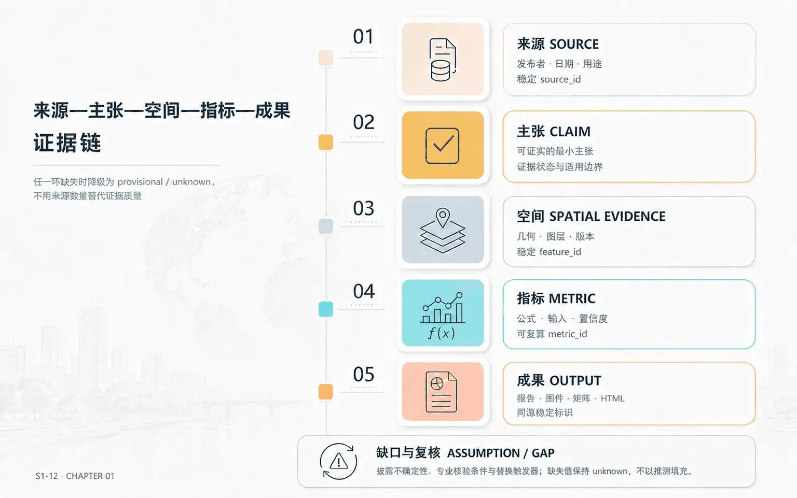
图1-1｜来源—主张—空间—指标—成果证据链。该图是章内解释层，不替代
sources.json、GeoJSON、metrics、三类矩阵或五张正式核心图。
第02章 三层范围工作框架
2.1 三级尺度工作框架
方案按照竞赛公告确定的“统筹研究范围—总体设计范围—重点区域范围”三级尺度组织工作。 区域层提出产业与未来城市战略，总体层将战略转化为空间结构和城市更新系统，重点区层以具体片区详细设计验证空间、场景和实施接口。三层范围逐级嵌套、逐级深化，不是三套彼此分离的图纸。来源 深度
表2-1｜三级尺度工作框架
| 层级 | 公告约面积 | 核心任务 | 设计深度 | 成果接口 |
|---|---|---|---|---|
| 统筹研究范围 | 43.6 km² | AI 产业生态、创新网络、区域协同和未来城市形态研究 | 区域战略研究 | 第3章 |
| 总体设计范围 | 11.4 km² | 总体结构、城市更新框架及综合空间系统 | 控制性详细规划层面的城市设计深度 | 第4、7—10章 |
| 重点区域范围 | 三处合计368.4 ha | 三个重点片区详细设计和具体空间验证 | 规划综合实施方案的城市设计深度 | 第5、6章 |
统筹研究范围北至北五环路、东至京藏高速、南至西直门外大街、西至万泉河路。 该层从北京与海淀创新格局出发，形成战略定位、区域关系、空间原则和总体设计输入，不直接作出地块控制、拆改留或工程实施结论。指标
总体设计范围以京张遗址公园周边约1—2 km的城市地区和产业区为主。 其范围北至北五环路，东至学院路、西土城路等，南至西直门外大街，西至大钟寺东路、荷清路等。该层把区域战略转化为总体空间结构、用地与建筑更新、交通慢行、市政公服、蓝绿公共空间、风貌、项目和分期框架。空间数据 深度
2.2 三处重点区域定位
三处重点区域自北向南为众智园 AI 自主创新加速区、北京 AI 原点社区和大钟寺 AI 产业聚集区。 公告约面积分别为192.1 ha、104.3 ha和72.0 ha。三者均位于当前总体设计范围内且彼此不重叠；当前闭合边界只作位置索引和方向性详细设计，不代表正式地块或权属边界。空间数据 指标
表2-2｜三处重点区域定位与详细设计重点
| 重点区域 | 片区角色 | 详细设计重点 |
|---|---|---|
| 众智园 AI 自主创新加速区 | AI 中试加速与未来产业试验场 | 花园式园区、站城融合、模块化载体和生活服务预置 |
| 北京 AI 原点社区 | 大模型与核心技术创新策源地 | 活动生态、有机更新、公共空间和高校—街区渗透 |
| 大钟寺 AI 产业聚集区 | AI 产业总部与应用落地门户 | 站城联系、四象限缝合、文化先导和公共界面改善 |
2.3 范围传导、复算与使用边界
三级任务形成“区域战略研究—总体城市设计—重点片区详细设计—实施反馈”的闭环。 区域层向总体层传递产业定位、创新生态和空间原则；总体层向重点区传递结构、系统、节点、指标方向和约束；重点区通过空间、场景、项目、分期和风险条件反向校正总体方案。
公告约值与提交几何复算值分开记录。 当前总体范围几何复算约11.4925 km²，三处重点区合计约368.7872 ha，只用于校验当前 provisional 模型，不解释为官方精确面积。指标 指标
当前绿地率和公共空间率已由同一 provisional 总体边界和最低可行设计模型复算。 相关结果不属于本章的法定范围结论，也不代表法定绿地率或公共权属比例；依赖正式控规、权属和详细设计的指标仍待确认。指标 指标
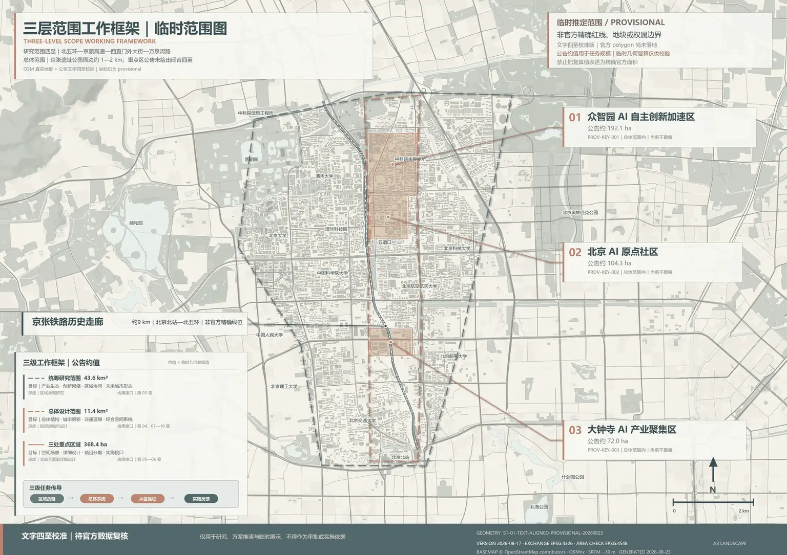
图2-1｜三层范围工作框架与三处重点区域。图中范围依据公告文字四至、位置顺序和约面积校准，统一标注为 provisional；该章内辅助图不替代正式核心用地结构图。
第03章 统筹研究范围产业与未来城市研究
---
3.0 母概念总览
本章所有空间落地内容均为开放共创建议、概念建议或参考方案，可供专业团队深化研究；不替代正式规划，不构成政府审定、投资承诺或工程实施结论。来源 标准
3.0.1 方案命名与核心命题
表3-1｜方案命名体系
| 层次 | 内容 | 作用 |
|---|---|---|
| 主名称 | 道口新编 | 承接京张铁路“道口”历史基因；“新编”双关“重新编译”与“新的篇章” |
| 副标题 | 京张·并轨 | 表达工业实轨、遗址空轨与 AGI 虚轨的并存接续 |
| 英文名 | The Re-coded Crossing: Merging Tracks of Jing-Zhang | “Re-coded”呼应编译隐喻；“Merging Tracks”对应“并轨”，用于国际传播 |
| 寻址体系 | DK-<锚点编号>.<类型码><序号>＋G1／G2／G3三代分类 | 让命名可寻址、可注册、可迭代，详见3.4.2 |
Logo／VI 采用 “并轨符·雾青沙金—二进制脉冲道口”：深雾蓝与雾青对应历史底盘和未来系统，白色轨道与枕木强化铁轨交叉，中心沙金环定义感知与编译接口，点列、二进制序列、脉冲波形和半透明信号叠层表达数据采集、识别与多向传输。Logo 图形由豆包 AI 辅助生成，经团队确认可用于本次竞赛投稿、公开展示和投稿材料分发；具体权利范围与限制见版权声明。来源
图3-1｜并轨符·雾青沙金—二进制脉冲道口 Logo 定稿。方案 Logo 由豆包 AI 辅助生成，现行权利与竞赛使用边界见来源登记。来源
表3-2｜Logo／VI 定稿要素与应用
| 要素 | 定稿 | 主要应用 |
|---|---|---|
| 标志 | 并轨符 | 第03章、A3/A0、总体图与离线HTML的总体识别 |
| 色彩 | 雾蓝 #2A3F4B、雾青 #4D8B87、沙金 #B79A62、云石白 #ECECE6 | 历史层、未来层、转换节点与留白 |
| 字标 | 道口新编／京张·并轨／The Re-coded Crossing | 中英文封面、章节导航与国际传播 |
| 边界 | Logo负责总体识别与寻址；文化导视和角色IP负责叙事与传播 | 不混淆一带整体Logo、文化标识与角色IP |
核心命题：
工业时代，城市靠"控规"把蓝图编译成静态规则，靠"道口"为铁路与道路寻址；AGI 时代，百年京张 AI 创新带以"有为—无为—虚轨"为城市的运行时与编译协议，以"AI 道口"为城市空间寻址——而"并轨"，是历史与未来在同一套操作系统里合流的那一个动作。
表3-3｜工业时代与 AGI 时代城市设计范式对照
| | 工业时代城市设计 | AGI 时代城市设计（本方案） |
|---|---|---|
| 城市观 | 一张可预测终局的蓝图 | 一套可感知、可调适、可演化的操作系统 |
| 核心工具 | 控规（静态蓝图编译器） | 有为—无为—虚轨（运行时 + 编译协议） |
| 寻址方式 | 道口（铁路 × 道路的物理交叉） | AI 道口（虚轨 × 城市需求的接口交叉） |
| 时间观 | 一次性编译，长期稳定 | 持续编译，动态调度，可迭代可退出 |
3.0.2 城市规划的四次范式迭代
- 第一次迭代（功能分区时代）：以《雅典宪章》为代表，将城市划分为居住、工作、游憩、交通四大功能，强调功能分区与蓝图式空间组织，核心是解决工业城市的秩序问题。
- 第二次迭代（数字化时代，AI 1.0）：伴随 CAD 与 GIS 技术普及，规划从手绘走向数字化，效率大幅提升，但核心仍以静态图纸、指标管控为核心，规划逻辑未发生本质改变。
- 第三次迭代（大数据时代，AI 2.0）：引入大数据与机器学习，规划师可通过数据模型开展模拟与预测，支撑决策优化，但决策权仍高度集中于专业机构与行政部门，属于"辅助分析"层面的升级。
- 第四次迭代（Agent 时代，AI 3.0）：即回应式治理范式。城市不再被视为一次规划定型的静态对象，而是由刚性规则锁定底线、由智能体（Agent）持续感知需求、辅助决策并执行动态调整的开放系统。规划师从"蓝图绘制者"转变为"规则制定者与系统协调者"。
第四次规划范式试验区：京张 AI 创新带依托高密度 AI 创新资源和建成区更新条件，率先探索“刚性边界＋动态响应”的城市运行范式。（研究判断）来源
3.0.3 "有为—无为—虚轨"五层运行时结构
将"有为—无为—虚轨"置于完整隐喻体系中，本方案提出五层运行时结构（概念性设计框架）：
表3-4｜“有为—无为—虚轨”五层运行时结构
| 层 | 计算机角色 | 城市设计含义 |
|---|---|---|
| 控规 | 内核（kernel） | 法定底线——守住用地、强度、安全、公共利益 |
| 有为系统 | 编译器（compiler） | 把六大价值锚编译为不可突破的底线约束 |
| 无为系统 | 运行时求解器（runtime solver） | 感知—决策—行动闭环，在约束内寻找多种可能 |
| 虚轨 | 数据总线 / 服务接口（bus / interface） | 知识、人才、算力、数据、资本、场景的资源路由 |
| AI 道口 | 运行接口 / 地址（port / address） | 空间寻址，承载每一次真实的空间变化 |
关键定位：有为—无为—虚轨不是替代控规，而是在控规之上叠加一层可感知、可决策、可迭代的运行层。控规从"规定唯一答案"，转向"定义城市可以安全演化的解空间"。
三代轨并轨（命名"京张·并轨"的时间展开）：
- 京张铁路时代——实轨定义城市：道口是物质铁路与地方道路的交叉（钢轨）；
- 遗址公园时代——空轨缝合城市：铁路消失，线性遗产从障碍转化为公共空间；
- AGI 城市时代——虚轨编译城市：轨道不再只是钢轨，而是知识流、人才流、算力流、数据流、资本流、场景流；"口"是这些流进入街区、建筑、社区与公共生活的接口。
实轨留下记忆，空轨缝合生活，虚轨生成未来。三代轨在同一条京张线上并轨——城市每一次新的相交，都是一个新的道口。
3.0.4 有为系统：六大价值锚的刚性底线
有为系统以六大价值锚构成公共价值边界，并通过“依据与边界—空间响应”两层落实。
（1）人本价值锚：公共利益优先，全龄包容
- 核心准则：产业生态无法先于生活生态，生活配套必须与产业空间同步配置。
- 依据与边界：遵守《无障碍环境建设法》及适用的无障碍、适老化规定；AI 场景保留非数字服务通道。住房保障、可负担空间比例及其实施方式须依据后续正式政策、权属和实施条件确定。来源
- 空间响应（方案建议）：生活配套与产业空间同步布局；以日常步行可达和完整无障碍链条为目标；在更新单元中研究可负担居住与低成本创新空间的配置方式，不预设未经核定的强制比例。
（2）文明身份锚：史实不可篡改，文化基因延续
- 核心准则：文化遗产是不可再生的公共资产，技术不得消解历史真实性。
- 依据与边界：清华园车站旧址Ⅴ类建控地带“不得新建＋建设前考古勘探”；觉生寺（国保）建控地带工程方案须报文物部门同意；1909 年通车史实、詹天佑手迹、“进京赶考”、陈春先 1980 年创业史等核心史实不得经 AI 改写，历史文化导览须人工终审。来源
- 空间响应（方案建议）：文保建控地带以风貌协调为主；沿京张公园构建三代文化叙事路径；历史标识、导览设人工校验机制。
（3）生态安全锚：生态底线不可交易，韧性刚性
- 核心准则：生态安全是不可交易的公共底线，滨水与绿地开发必须服从安全要求。
- 依据与边界：清河按 20 年一遇设计、50 年一遇校核，小月河护脚按 50 年一遇，滨水场景兼容“敞泄—封闭”双运行状态；八家郊野公园、京张公园绿地属性不得因本方案擅自改变；规划新建建筑与小区年径流总量控制率≥85%、新建改建绿地年径流总量控制率≥90%，两者均不是绿地率；历史工业用地更新须先履行适用的土壤污染调查程序。来源
- 空间响应（方案建议）：滨水设施采用可逆、可抬升方式；绿地系统与区域蓝绿网络连通；历史工业用地更新以调查结论作为后续设计前提。
（4）空间正义锚：算法公平，数据隐私有界
- 核心准则：技术不得突破公平底线，公共承诺必须法定化锁定。
- 依据与边界：生成式 AI 服务、AI 生成内容标识和人脸识别应用须遵守适用法规及备案、标识、个人信息保护要求；是否将公共空间普惠或可负担空间要求写入更新实施文件，须由后续法定程序确定。来源
- 空间响应（方案建议）：AI 设备显著标识使用规则与隐私提示，公共空间不以人脸识别作为唯一通行方式；研究把公共开放要求纳入更新实施条件；数字服务保留人工窗口。
（5）创新生态锚：控公共底座，保中小主体准入
- 核心准则：不控业态控底盘，保障创新生态的多样性与开放性。
- 依据与边界：高校科研设施、文化遗产、公园公共空间的开放范围须服从权属、文保、安全、科研保密和运营规则；产业用地弹性机制须符合适用的规划与产业管理程序。
- 空间响应（方案建议）：沿公园界面和高校周边研究低成本共享创新空间；具体比例由后续需求、权属、运营和法定条件共同确定；产业空间预留可调整接口。
（6）时间维度锚：可逆更新，全生命周期管理
- 核心准则：拒绝一次性永久固化，为未来发展预留调整空间。
- 依据与边界：用地功能、指标、体量调整须履行适用的规划综合实施程序；临时使用、试点场景和活动插件应明确期限、安全责任与退出条件。来源
- 空间响应（方案建议）：优先轻介入、可还原、可迭代更新，避免大拆大建；临时设施采用模块化、可移动方式；在后续专业深化中研究负面功能清单及其适用条件。
3.0.5 无为系统：Agent 三阶闭环的动态生长机制
无为系统以"感知—决策—行动"三阶闭环为内核，所有环节遵循"机器辅助、人类终审"原则。
- 感知层：形成多源需求感知网络。 以四道口 1.2 km² AI 信控试点为场地技术基础，以北京市12345诉求机制和海淀志愿服务网络为区域治理参考，构建经授权的公共空间反馈与参与式监测接口。（现状研究＋概念建议）来源
- 决策层：建立多情景推演与人类审议机制。 结合“每月一题”、社区议事和责任规划师等既有机制，形成“业态市场调节—设施管理决策—空间法定程序”的分层决策结构，Agent承担分析与方案推荐，人类保留最终授权权。（现状依据；方案建议）
- 行动层：形成可逆试点与反馈迭代闭环。 以移动设施、公共空间分时运营和社区AI应用为基础，按“授权—试验—验证—实施—评估—扩展或退出”推进空间行动。（现状依据；方案建议）
3.0.6 三代文明叙事：京张铁路遗产—中关村创新文化—AI 新文化
作为总图的叙事层，方案的文明叙事沿三代轨展开，与命名"并轨"同构：
- 京张铁路遗产（实轨·记忆层）：1909 年通车史实、詹天佑手迹、"进京赶考"事件、清华园站旧址、觉生寺古钟文化——构成不可篡改的历史记忆底座；
- 中关村创新文化（空轨·当代层）：陈春先 1980 年创业史、中关村"两个第一"、五道口"宇宙中心"的亚文化与创新生活——构成当代创新文化基因；
- AI 新文化（虚轨·未来层）：AI 原生创新、人机共治、开源社区、开发者活动——构成面向未来的新文化想象。
三代文明叙事并轨于京张公园主轴，构成"历史记忆—当代生活—未来创新"交相辉映的空间叙事层；历史与文保内容须可追溯、不突破保护与安全边界。
---
3.1 区域产业与未来城市：定位推导
3.1.1 区域产业底账与区域角色
- 产业规模：海淀形成全国领先的AI产业集群。AI核心产业规模超3500亿元、占全国30%，集聚AI企业2000余家、AI独角兽26家、备案大模型130款，技术合同成交额4045亿元、占全市41%。（官方公开基线）来源
- 创新人才：区级人才底盘与AI原点人才生态共同支撑创新策源。海淀区人才资源总量约200.58万人；AI原点集聚1000余名AI科学家、1.3万名开发者和10万余名AI相关专业学生。（官方公开基线；统计口径分列）来源
- 创新带集聚：百年京张AI创新带构成海淀AI资源高密度走廊。沿线企业数量、收入和融资占全区七成以上，人才占比超过80%。（官方公开基线）来源
表3-5｜创新资源—创新链环节—空间载体映射
| 创新资源基础 | 可核验的代表资源与能力 | 进入创新链的主要环节 | 本方案的空间承载与接口 | 证据状态与边界 |
|---|---|---|---|---|
| 高校与科研机构 | 海淀区有37所高校、92家全国重点实验室、96家国家级科研机构；清华大学、北京大学及中科院相关院所构成总体设计范围周边的主要科研锚点 | 基础研究、算法与模型策源、跨学科联合研发、人才培养 | AI原点社区承接近校成果发布、概念验证和共享研发；西翼连接技术转移与专业服务 | 官方公开数据；共享容量与协同关系待核验 |
| 新型研发与成果转化平台 | 概念验证中心、全国高校人工智能区域技术转移转化中心及相关中试测试平台已形成成果转化基础 | 概念验证、工程化、中试测试、成果注册与孵化 | “原点策源—众智中试—大钟寺应用—东翼验证—西翼服务”形成连续接口 | 官方公开平台；项目流量、转化效率与具体落位待核验 |
| AI企业与产业主体 | 海淀AI企业超2000家、AI独角兽26家、备案大模型130款；全区上市企业与专精特新企业数据按独立统计口径管理 | 产品研发、模型工程化、产业应用、市场反馈 | 大钟寺重点承接企业总部、产品发布和垂直应用；三区两翼共同提供研发、中试、测试和服务接口 | 官方区级总量；企业名录、空间落位与合作关系待核验 |
| 孵化与科技服务机构 | 海淀已有多层级孵化、技术交易、知识产权、科技金融和创业服务基础 | 团队孵化、技术交易、融资对接、知识产权与国际服务 | 西翼形成全周期科技服务入口，向三区及东翼提供按需服务；原点社区配置近校孵化和公共交往接口 | 区域现状基础；运营主体、准入与服务机制待确认 |
| 算力、数据与算法支撑 | 上庄公共算力平台位于场地外；海淀已有模型语料、数据标注和跨域算力网络等支撑资源 | 模型训练与推理、数据加工、算法验证、场景反馈 | 场地内优先设置算力和数据服务窗口，经授权连接外部平台；众智园和东翼承担工程化验证与场景反馈 | 场地外资源；容量、能耗、接口安全与数据授权待核验 |
| 城市场景与公共反馈 | 四道口AI信控等现有试点提供单点应用线索 | 需求发现、场景测试、公众反馈、效果评估与退出 | 东翼、轨道站点、京张遗址公园和社区公共节点作为候选场景接口，由AI道口连接真实需求与创新链 | 现状试点；新增场景的业主授权、安全审查与退出机制待确认 |
注：表中现状基线统一由第三章官方公开资料接口登记，创新链与空间载体之间的连接为概念建议；主体合作、项目流量、服务容量和授权状态以正式记录为准。来源 来源
- 场内组织：策源在海淀，试验在场内。以海淀原始创新资源支撑研发策源，以三区两翼承接工程化、中试、应用和场景验证。（方案建议）
- 全市分工：研发在海淀，转化协同在经开，规模制造联动外部区域。与怀柔科学城的大科学装置、未来科学城的能源与生命科学、北京经开区的产业化制造形成错位协同。（研究判断）来源
- 同城协同：连接消费应用、能源场景与公共算力资源。对接朝阳消费应用、昌平能源场景和上庄市级公共算力平台，形成跨区域技术与场景接口。（研究判断）
- 算力策略：场内设服务窗口，场外接算力底座。场地内不新建大规模算力中心，边缘节点作为能源、市政、网络与安全专项论证后的候选方案。（概念建议）来源
表3-6｜三城一区分工对比
| 板块 | 核心功能 | 场地对接方向 | 案例对标 |
|---|---|---|---|
| 中关村科学城（本场地） | 基础研究、技术研发、孵化、早期转化 | 强化科研策源与场景验证能力 | 肯德尔广场：大学锚＋创新空间强制条款 |
| 怀柔科学城 | 大科学装置、基础科学 | 承接大科学装置溢出，联合技术验证 | 纽约：州级算力统筹与科研协作 |
| 未来科学城 | 能源、生命科学 | 跨领域 AI+能源/医疗场景合作 | 新加坡：跨部门闭环治理 |
| 北京经开区 | 产业化制造、中试放大 | 研发成果中试与产业化转移通道 | 张江：载体迭代链与产业承接 |
3.1.2 产业定位与协同结构
产业定位：全国AI原始创新策源地＋AI城市治理与场景试验场＋京张文化遗产与创新叙事走廊。三大定位共同统筹原始创新、城市应用与文化叙事。（官方要求＋研究判断）来源 来源
区域协同结构：场内成环、区级联动、全市错位、区域转化。四级协同共同组织创新资源、产业链与空间载体。（方案建议）
表3-7｜区域与产业协同闭环
| 协同层级 | 核心角色 | 产业链与 AI+ 方向 | 关键要素流 | 空间与产业配套接口 |
|---|---|---|---|---|
| 三区两翼（场内） | 原始创新策源、技术中试、应用落地、科技服务与场景验证 | 形成“原点研发—众智中试—大钟寺应用—西翼服务—东翼验证”的场内闭环，支持 AI+医疗、教育、交通、生活服务等垂直应用在授权条件下开展验证 | 人才、技术、资金、算力、数据、场景及运行反馈 | 共享研发与中试载体、AI 道口、科技服务窗口、场景测试空间、人才生活服务与轨道慢行接驳 |
| 两区一带（区级） | 对接海淀区级 AI 全栈、全要素创新资源与产业协同平台 | 建立创新资源共享、成果转化、AI+产业协作与场景开放接口（官方结构；空间边界与职责待正式资料确认） | 政策与平台服务、科研成果、企业需求、算力数据资源和场景清单 | 区级公共技术平台、成果转化服务、算力服务窗口、数据授权与场景发布接口 |
| 三城一区（全市） | 强化中关村科学城的基础研究、技术研发、孵化和早期转化优势 | 与怀柔科学城的大科学装置、未来科学城的能源／生命科学、北京经开区的中试放大和产业化制造形成错位协作 | 科研设施、跨领域技术、验证需求与产业化能力 | 联合研发、跨区试验验证、技术转移和中试产业化服务接口 |
| 京津冀及外部区域 | 承接规模化制造、供应链配套和跨区域应用反馈 | 形成“研发在海淀、试验在场内、转化与制造跨区域协同”的弹性协作网络（方案建议） | 技术成果、生产能力、供应链资源、市场需求与运行数据 | 跨区域成果转化、制造协作、应用示范及反馈回流机制 |
产业协同闭环：外部需求与场景—AI道口感知—原点社区研发策源—众智园中试加速—大钟寺应用落地—两翼服务与验证—两区一带及三城一区协同—京津冀转化制造—运行数据回流。该闭环贯通需求、研发、中试、应用、服务、制造与反馈。（方案建议）
注：区域角色依据公开资料，协同关系为研究判断，仍须以主体协议、项目记录和运行数据核验。来源
---
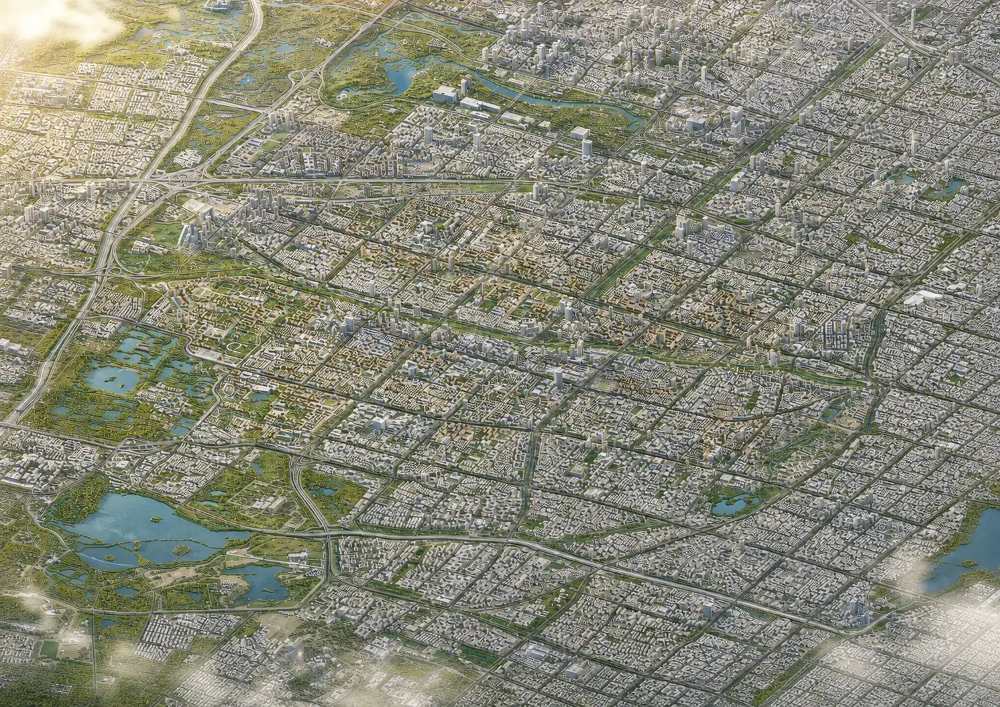
图3-2｜统筹研究范围全景鸟瞰效果图。Agent 自动公网搜索下载 GABLE／OSM／EULUC 数据生成完整城市场景 Blender 底板，由用户在 GPT 官网图生图形成；用于建立研究范围整体空间格局、城市肌理与蓝绿基底的直观认知，非现状航拍、法定规划或精确建设方案。来源
3.2 区域结构与创新协同总图
3.2.1 区域结构与创新协同总图
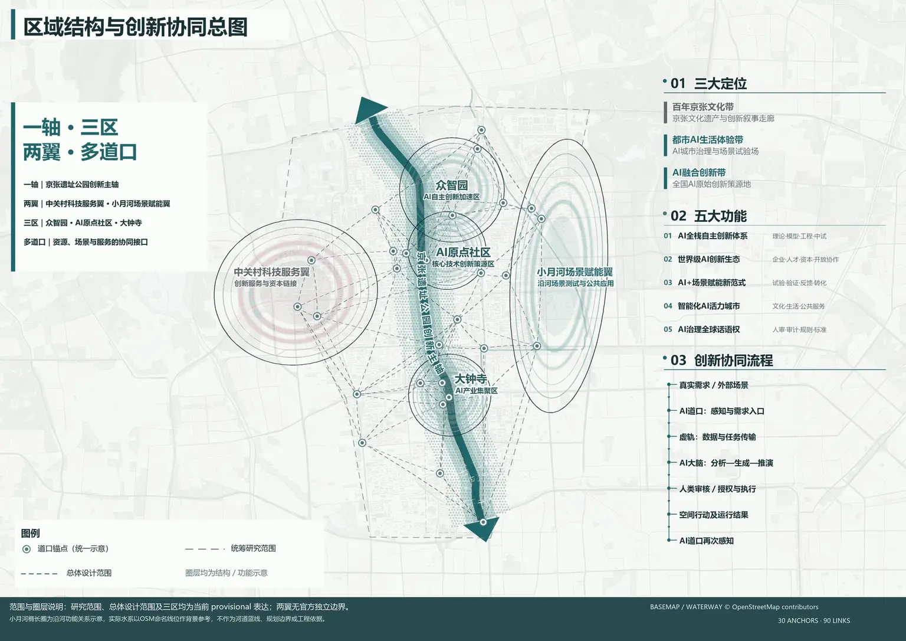
图3-3｜区域结构与创新协同总图。研究范围、总体设计范围、三区圈层和 AI 道口锚点为当前 provisional／设计表达；两翼无官方独立边界，OSM 底图仅作背景参考，不作为官方边界、现状底账或工程依据。来源 空间数据 空间数据
# 01｜一轴三区两翼、多道口
1. 一轴：京张遗址公园创新主轴。沿百年京张铁路和京张遗址公园，串联众智园、AI 原点社区和大钟寺三个重点片区，叠合文化记忆、都市生活与 AI 创新三条线索。 2. 三区：众智园 AI 自主创新加速区、AI 原点社区、大钟寺 AI 产业聚集区，分别承担中试加速与未来产业试验、核心技术策源、智能原生新业态与产业应用落地；“核心技术创新策源区”“产业总部与应用落地门户”为本方案的功能化转译。 3. 两翼：西侧为中关村科技服务翼，提供创新服务、创业孵化与资本链接；东侧为小月河场景赋能翼，承载沿河场景测试、公共应用与反馈验证。 4. 多道口：分布于一轴、三区和两翼中的资源、场景与服务协同接口。
# 02｜三大定位
竞赛的三大定位沿“实轨—空轨—虚轨”三代轨进行功能化转译：
表3-8｜三大定位与三代轨功能转译
| 竞赛官方三大定位 | 三代轨 | 方案功能化转译 | 核心承载 |
|---|---|---|---|
| 百年京张文化带 | 实轨（记忆） | 京张文化遗产与创新叙事走廊 | 清华园站旧址、觉生寺、京张公园历史叙事路径 |
| 都市 AI 生活体验带 | 空轨（生活） | AI 城市治理与场景试验场 | 四道口双智试点、原点社区、公共场景网络 |
| AI 融合创新带 | 虚轨（创新） | 全国 AI 原始创新策源地 | 众智园全栈自主、大模型策源、三区两翼创新协同 |
三代轨在京张线上并轨，文化带、生活带和创新带在同一空间中叠合。
# 03｜五大功能
表3-9｜五大功能与空间承载
| 竞赛官方五大功能 | 方案功能化转译 | 主要承载 |
|---|---|---|
| AI全栈自主创新体系 | 基础研究、模型策源、工程化验证与中试加速形成连续创新链 | 众智园、AI原点社区及高校科研资源 |
| 世界级AI创新生态 | 企业孵化、科技金融、知识产权、人才服务和国际开放协作共同支撑 | AI原点社区、中关村科技服务翼 |
| AI+场景赋能新范式 | 以真实需求组织试验、验证、反馈和成果转化 | 小月河场景赋能翼、四道口及公共场景网络 |
| 智能化AI活力城市 | 文化展示、公共交往、人才居住和全龄公共服务协同配置 | 京张遗址公园沿线及三区生活服务节点 |
| AI治理全球话语权 | 建立人类终审、数据授权、算法审计、风险退出和规则沉淀机制 | 众智园治理平台、虚轨和AI道口运行接口 |
注：五项功能名称采用任务书固定口径，空间与机制内容为方案转译。来源
# 04｜未来城市形态：五种可进化模式
表3-10｜未来城市形态五种可进化模式
| 未来城市形态模式 | 形态与运行机制 | 海淀转译与边界 |
|---|---|---|
| 1. AI 回城：15分钟×24小时复合创新街区 | ① 步行—骑行—轨道可达。 ② 复合研发、孵化、居住、商业、学习、社交和公共活动。 ③ 分时复用，形成昼夜互补、面向国际人才的工作生活环境。 | ① AI原点社区重点示范。 ② 大钟寺和众智园按条件嵌入。 ③ 完善国际化居住、交往和公共服务。 ④ 同步落实住房、夜间噪声、安全和运营。 |
| 2. 共享创新：无围墙创新公地 | ① 京张记忆、中关村创新精神与AI开源协作共同塑造AI文化。 ② AI文化可被公众看见、参与和共创。 ③ 校园、园区、企业与社区界面分级开放。 ④ 配置低成本共享创新空间。 | ① 实行“一校一策、一园一策”。 ② 开放以产权、安全和科研保密为边界。 ③ 共享设施的能力、时段和运营主体专项确定。 |
| 3. 协同分层：区域网络化前台—中台—后台 | ① AI社会：人才、企业、高校、社区和政府共同协作，AI辅助分析、人类审核授权。 ② 前台承载交往与场景。 ③ 中台提供共享服务。 ④ 后台保留高安全研发。 | ① 三区两翼差异化承载。 ② 各片区保持双向流动。 ③ 该模式属于方案性功能组织。 ④ 不代表现有机构已建立合作或共享数据。 |
| 4. 可逆更新：插件化、可编程空间底盘 | ① 保留利用、轻介入和模块化增补。 ② 建筑划分为稳定底盘与可替换插件。 ③ 通过限时入驻、功能轮换和“试点—评估—退出”滚动迭代。 ④ 形成自适应、可进化的空间载体。 | ① 优先用于条件适配的既有楼宇和公共节点。 ② 结构、消防、产权、规划用途和长期维护先行。 ③ 不将灵活使用泛化为普遍适用。 |
| 5. 人机共治：轨园共生的可感知公共城市 | ① AI城市按照“感知—分析—人类授权—受控行动—反馈”运行。 ② 形成持续反馈、可进化的空间系统。 ③ 以京张公园、清河—小月河、轨道站点和慢行网络为公共底盘。 ④ 构建可感知、可交互的“AI+”交通与连续无界的绿色空间体系。 | ① 从站点接驳、慢行断点和既有公共节点小步试点。 ② 保留人工授权。 ③ 保护隐私并保留非数字通道。 ④ 不以自动审批或持续监控替代人的选择。 |
表3-11｜AI+交通与连续绿色空间区域组织接口
| 系统 | 区域级空间组织 | AI道口与虚轨接口 | 后续复核指标 |
|---|---|---|---|
| AI+交通 | 以轨道站点为门户、京张遗址公园慢行为南北主轴，连接三区两翼、校园园区、社区和主要公共节点；优先识别站点接驳、跨铁路／跨环路及滨水通行断点 | AI道口在获得授权的前提下汇集客流、慢行需求和设施状态，虚轨进行多方案分析与推荐，经人工审核后用于导行、接驳组织和可逆试点；始终保留无障碍、人工服务和非数字通道 | 轨道站点步行／骑行可达时间、断点数量、绕行系数、无障碍连续率和高峰通行变化（实测后复核） |
| 连续绿色空间 | 以京张遗址公园为连续公共骨架，以清河、小月河滨水空间为横向生态联系，串联校园、园区、社区、公园和街角绿色节点，形成“主轴—滨水通廊—节点网络” | AI道口作为环境感知、公众需求和维护反馈接口；虚轨提供分时开放、活动承载、生态维护和极端天气响应建议，涉及防洪、文保、生态安全和公共利益的行动由人工审查 | 绿地与滨水连续性、跨越断点、公共入口覆盖、遮荫舒适度和生态敏感区避让（基于正式绿地、河道、防洪和慢行数据复核） |
| 交通—绿网复合节点 | 将轨道站点、公园出入口、河道跨越点和三片区公共界面作为优先复合节点，组织接驳、停留、交往、测试和应急转换 | 采用“需求感知—方案推演—人类授权—小步试点—运行评估—扩展或退出”闭环 | 权属、客流、防洪、文保、隐私、安全与维护条件（核验后纳入实施候选清单） |
交通绿网共同底盘：AI+交通与连续绿网共同支撑人才通勤、创新交往、公共生活和场景验证。轨道门户、慢行主轴、滨水通廊和复合节点共同形成可感知、可交互的公共空间网络。（概念建议）空间数据 空间数据 空间数据
注：道路、桥梁、站点一体化、河道工程和绿地设计属于专项深化内容，本节成果不作为工程线位和实施参数。
# 05｜AI人才高品质城区
1. 工作—生活—社交—学习一体化：建立AI科研人才、创业者、企业员工、国际人才和社区居民的创新群体需求画像，复合配置创新空间、人才居住、公共服务与交往场所。 2. 国际化人才服务：完善多语服务、国际交往、住房、教育、医疗及专业服务，营造开放便利的工作生活环境。 3. “AI+”城市服务与消费：拓展智慧出行、公共服务、文化体验和商业消费场景，同时保留人工服务和非数字通道。 4. 开放包容的创新环境：以共享创新空间、全龄友好设施、无障碍系统和连续公共空间，营造包容、可交往、激发灵感的城区体验。
# 06｜区域创新协同流程
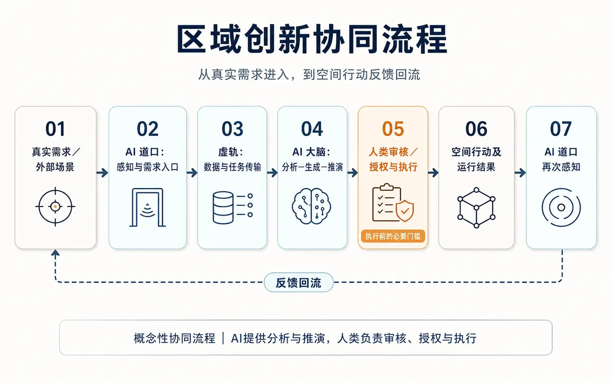
图3-4｜区域创新协同流程。真实需求经 AI 道口、虚轨和 AI 大脑形成分析与推演，在人工审核、授权后进入空间行动，并由运行结果反馈回流；该图为概念性协同机制，不代表主体授权、项目承诺或自动决策已经成立。来源
3.2.2 三区两翼协同回路与 AI 道口锚点
延续"北空间—中生态—南企业—西服务—东场景"的差异化分工，各片区功能互补、经虚轨协同，每个片区对应一组 AI 道口锚点（寻址体系见 3.4.2）：
表3-12｜三区两翼产业分工与空间导向
| 片区 | 产业定位 | 核心策略 | 空间设计导向 | 主要 AI 道口锚点 |
|---|---|---|---|---|
| 众智园（北部） | AI 中试加速与未来产业试验场 | 高校锚＋企业锚双轮驱动；载体滚动迭代；服务预置先行 | 花园式园区、站城融合、模块化弹性载体、前置生活配套 | ① DK-07 学知园站 ② DK-08 清河站／清河老站房 ③ DK-10 清华东路西口站 ④ 清河汉城遗址—清河古镇 |
| AI 原点社区（中部） | 大模型与核心技术创新策源地 | 活动生态作为创新基础设施；低扰动有机更新 | 小街区密路网织补、高密度公共空间、连续首层活力界面、高校围墙开放渗透 | ① DK-05 五道口站／五道口商圈 ② DK-06 六道口—学院路 ③ DK-09 知春路站 ④ 清华园站旧址 ⑤ 清华科技园／智源研究院 |
| 大钟寺 AI 产业聚集区（南部） | 官方角色：智能原生新业态；方案转译：AI 产业总部与应用落地门户 | 文化先导→AI 导入；四象限空间缝合；产权工具撬动公共界面 | 枢纽门户形象、四象限步行连通、文化商娱混合界面 | ① DK-04 四道口／大钟寺站 ② 大钟寺觉生寺 ③ 三环门户城市阳台 |
| 西翼（科技服务翼） | 科技服务与创业孵化支撑极 | 激活街道界面；完善全周期创业服务体系 | 街道空间人本化、可停留界面产品、文化叙事步行路径 | ① DK-W1 中关村创业大街 ② 中关村广场／鼎好 ③ 海淀黄庄站—中关村站 ④ 中科院中关村科学城／研究所集群 |
| 东翼（场景赋能翼） | 具身智能与垂直场景测试区 | 防洪前置布局滨水场景；垂河路径加密；可逆试点先行 | 自然化滨水界面、分级防洪弹性空间、模块化测试场地 | ① DK-E1 具身智能产业园（东畔科创中心） ② 小月河滨水场景节点 ③ 生态感知站 |
三项创新生态机制补充
1. 众智园全栈自主体系：组织“基础研究／算法与模型—工程化—中试验证—场景测试—成果转化—治理反馈”的连续链条；算力、数据和场景按授权接入，具体平台主体与容量待专项核验。 2. AI原点社区创新生态：以高校院所、研究机构、企业、开发者和社区共同构成开放创新网络，配置成果发布、开源协作、共享研发、人才生活和公共交往接口。（方案建议；主体合作关系待核验） 3. 中关村科技服务翼支撑机制：围绕技术转移、知识产权、科技金融、人才服务、国际交往和市场对接形成服务链，通过虚轨与三区及东翼双向连接；具体资金、政策和服务承诺以正式发布为准。
---
3.3 产业与创新生态指标及来源
指标体系：产业发展基础、创新资源、创新生态、三区两翼协同和八要素共同构成评价框架。指标采用可追溯公开数据，未形成统一统计口径的项目标注“待计算”。来源 来源
表3-13｜产业与创新生态指标体系
| 指标内容 | 指标与来源 | 当前状态 | 有为系统 | 无为系统 |
|---|---|---|---|---|
| AI产业发展基础 | AI核心产业规模、企业数、独角兽数、备案大模型数、人才规模与密度、技术合同成交额等 | 已有公开基线 | 采用固定来源、统计口径和事实边界 | 在统一口径下更新数据，比较不同产业战略重点 |
| AI创新资源 | 高校、科研机构、重点企业及算力、算法、数据等资源，依据专题包2和3.4.1八要素图谱 | 已形成资源清单，数量口径待统一 | 以创新生态锚和空间正义锚保障公共创新底座、主体准入和资源公平 | 在价值边界内比较创新资源的组合、连接和空间组织 |
| 创新生态与产业集群 | 创新链、产业链关键环节及主体关系，依据3.4.1资源流图与区域综合分析 | 方案框架已形成；量化结果待核定 | 明确公共平台、开放协作和知识溢出的价值方向 | 比较不同创新链、产业链协同方式，资料变化后更新判断 |
| 三区两翼产业协同 | 各区域产业分工、主要锚点与协同关系，依据3.2.1区域结构图和3.2.2对照表 | 方案空间结构；协同关系待核验 | 保持任务书确定的三区两翼结构及各区域公共价值 | 在既定结构内比较不同协同关系和产业空间组织方案 |
| 八要素及来源 | 土地、空间、产业、资金、人才、算力、数据、场景的实现路径与来源，依据3.4.1及专题包2—8 | 已形成来源接口，部分数据仍待补充 | 固定来源、授权、公共利益和人工确认边界 | 在有为边界内比较八要素的匹配和流动方式 |
表3-14｜核心指标口径、计算方式与复核条件
| 指标 | 定义、单位与计算方式 | 当前基线／状态 | 来源、目标设定与复核条件 |
|---|---|---|---|
| AI创新指数 指标 | 由原始创新、成果转化、产业集聚、人才活力、基础设施与场景开放、可信治理六个分项构成，指数值。统一统计范围、时点和正负向后，将各分项标准化为 Z_k，按 I_AI＝Σ(w_k×Z_k) 计算 | 当前缺少跨主体同口径数据，暂不填写综合得分 | 分项分别来自高校科研、企业、项目、人才、算力数据场景和治理台账；权重 w_k 须经数据完整性检验、同类区域对标和专家复核后确定，权重合计为1，不以主观打分替代缺失数据 |
| 人才密度 指标 指标 | 同时保留空间密度 D_s＝N_AI／A（人／km²）和就业结构密度 D_e＝N_AI／N_employed×100%（%）；科学家、开发者、相关专业学生和一般人才分别统计，去重后才可合计 | 区级人才资源约200.58万人；AI原点科学家、开发者和相关专业学生分口径统计 | 统一AI人才定义、统计范围、居住／就业属性、时点和去重规则后计算；场地人才密度待正式边界与人才台账完备后复算 |
| AI产业产值规模 指标 指标 | 采用官方AI核心产业统计口径记录规模 V_AI（亿元）和同比增速 g＝(V_t－V_(t-1))／V_(t-1)×100%；具备经核验的产业空间面积后，可计算单位产业空间产出 V_AI／A_industry | 海淀区AI核心产业规模超3500亿元，可作为区级现状基线；场地级产值及产业空间产出待补 | 明确统计期、行业分类和空间归属后更新；不得与AI市场规模、企业估值或全区GDP混用，目标区间须由发展趋势、载体容量和同类区域对标共同确定 |
| AI企业与创新主体 | 官方口径AI企业数、AI独角兽数、备案大模型数及经核验的高校、科研机构、孵化平台数量，家／所／款 | AI企业超2000家、AI独角兽26家、备案大模型130款；高校科研底账采用独立口径 | 企业名录、认定标准、统计时点和空间坐标变化时更新；协同质量由项目级记录另行评价 |
| 创新链转化 指标 | 进入概念验证、工程化、中试、场景验证和成果转化各环节的项目数，项；阶段转化率 R_i＝N_(i+1)／N_i×100% | 基线待跨主体统一项目台账建立后计算 | 由众智园、原点社区、场景业主和服务平台按授权汇总；同一项目使用唯一编号，明确退出、暂停和重复进入的计数规则 |
| 三区两翼协同 指标 | 跨片区共享服务、联合验证和反馈回流项目数，项；有效协同率 R_c＝N_closed_loop／N_cross_area×100% | 方案结构已形成；协同流量待核验 | 以项目级协议、服务记录和运行反馈更新 |
| 八要素就绪度 指标 | 单个试点对土地、空间、产业、资金、人才、算力、数据、场景八类接口的完整覆盖率，R_8＝N_ready／8×100% | 待场景清单和责任主体确认后计算 | 同时具备来源、授权／准入、责任人、容量或服务条件、退出机制的要素计为就绪；缺项计为未就绪 |
| AI+交通与绿网可达性 指标 | 轨道站点步行／骑行可达时间、关键通行断点、无障碍连续率、绿色公共空间入口覆盖和滨水连续性，分钟／个／% | 区域结构已形成；路网、客流、入口与绿地边界待核验 | 基于正式或明确标注为provisional的路网、站点、绿地和河道数据复算；交通与绿网分别评价 |
注：指标分为现状基线、过程监测和规划目标三类；目标值须同步记录基准年、空间范围、统计口径、数据责任主体和重算触发条件，资料不足项标注“待计算”。
---
3.4 AI 创新生态与八要素资源流
3.4.1 AI创新生态与八要素资源流图
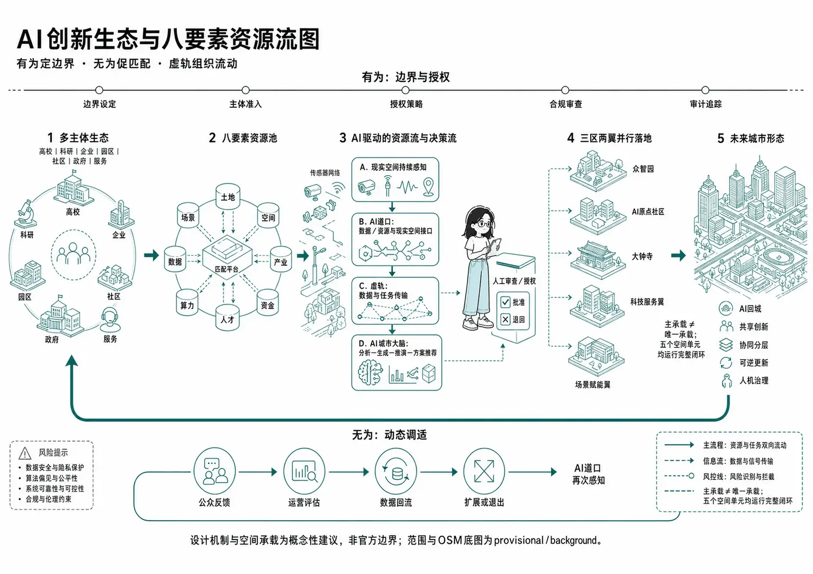
图3-5｜AI创新生态与八要素资源流图。图中主体、资源流与空间承载为概念性机制，不代表合作、容量或授权已经确认。来源
表3-15｜AI创新生态八要素资源流
| 要素 | 已有资源 / 事实 | 当前断点 | 虚轨衔接机制（方案建议） | 主要承载主体与空间 | 证据状态 |
|---|---|---|---|---|---|
| 土地 | 存量建成区与多类更新单元；规划调整须走适用法定程序 | 权属、可更新边界、实施时序未完整核实 | 建立“约束—可变项—退出条件”地块台账 | 产权方、政府、运营方；三区两翼更新单元 | 控规与权属待核验 |
| 空间 | 高校、园区、存量楼宇、公园和社区空间密集 | 开放时段、共享容量、准入规则缺数据 | 共享创新空间、中试载体、公共空间接口和 AI 道口按需预约、转换与复原 | 众智园载体、原点存量楼宇、大钟寺公共界面 | 空间清单可用，容量待测 |
| 产业 | AI 企业、模型、研发与技术交易高度集聚 | “研发—中试—应用—反馈”的真实企业流缺证据 | “中部研发→北部中试→南部应用→东翼测试→西翼服务”并形成反馈回路 | 企业、高校、中试平台；三区两翼 | 集聚基线可用，流量待补 |
| 资金 | 海淀已有科技基金与产业服务基础 | 资本与具体空间、试点及中小团队缺少透明接口 | 科技成长基金、耐心资本、场景采购和资本服务空间按项目阶段对接 | 基金、企业、服务机构；西翼科技服务翼 | 项目级资金流待补 |
| 人才 | 区级人才与 AI 科学家、开发者、学生基线可用 | 居住、通勤、活动、就业之间缺 OD 与分群数据 | 人才驿站、可负担服务与轨道慢行接驳；“13 号线 15 分钟创新通勤圈”仅作为待复算目标 | 高校、企业、社区；原点社区、众智园配套 | 旅行时间与需求待核验 |
| 算力 | 上庄市级平台与跨域算力网络位于场地外 | 场地需求量、能耗、接入安全与成本未知 | 优先对接外部算力服务；场地边缘节点仅作候选，须经能源、市政、网络与安全论证 | 算力平台、企业、高校；场地算力服务窗口 | 容量与选址待专项核验 |
| 数据 | 已有 AI、个人信息与生成内容治理依据 | 跨主体授权、最小采集、接口责任和退出机制未建立 | 数据分级、用途限定、授权留痕、人工复核、删除与退出 | 数据提供/使用/审查主体；虚轨接口网络 | 数据目录与授权主体待补 |
| 场景 | 四道口等已有技术试点及社区应用线索 | 场景授权与场地级需求证据待补 | “需求征集—安全审查—可逆试点—公众反馈—评估扩展/退出” | 场景业主、技术方、运营方、公众；东翼、四道口、公园沿线 | 每个场景逐项补授权 |
八大要素通过虚轨实现“资源—空间—功能—片区”的流动与匹配，不固化业态落位，以要素流动与响应规则支持未来城市持续演化。事实基线、设计机制与未核条件由第三章八要素证据接口分开登记。来源 来源 来源
3.4.2 AI 道口寻址
# 01｜寻址结构
AI 道口是“虚轨 × 城市真实需求”的接口交叉，编号由位置和功能两部分组成：
DK-<锚点编号>.<类型码><序号>
- 锚点编号表示位置，稳定且唯一。
- 类型码与序号表示功能切片，可随道口演化继续叠加。
# 02｜两级编号体系
表3-16｜AI道口两级编号体系
| 层级 | 范围 | 编码方式 | 图面表达 |
|---|---|---|---|
| 第一级 | 总体设计范围（11.4 km²） | 主轴数字 DK-01—DK-12 | 主图逐点寻址 |
| 第二级 | 统筹研究范围（43.6 km²） | 片区代码 N／Z／X／S＋序号；翼区 DK-E1／DK-W1 | 背景层区域寻址 |
主轴编号采用地址簿逻辑，保持稳定寻址，不要求等距对应空间顺序；历史编号保留且不回收。
# 03｜主轴与翼区锚点
表3-17｜AI道口主轴锚点编号
| 编号 | 位置 | 编号含义 |
|---|---|---|
DK-01 | 西直门 | 一道口，湮灭记忆锚点 |
DK-02 | — | 二道口，湮灭记忆锚点 |
DK-03 | — | 三道口，湮灭记忆锚点 |
DK-04 | 大钟寺 | 四道口 |
DK-05 | 成府路 | 五道口 |
DK-06 | 学院路 | 六道口 |
DK-07 | 学知园 | 站城融合锚点 |
DK-08 | 清河 | 清河站锚点 |
DK-09 | 知春路 | 13／10 号线换乘锚点 |
DK-10 | 清华东路西口 | 15 号线终点与 13 号线加站锚点 |
DK-11 | 学院桥 | 昌平线站城锚点 |
DK-12 | 西土城 | 昌平线与 10 号线换乘锚点 |
DK-E1 | 小月河 | 东翼场景赋能锚点 |
DK-W1 | 中关村 | 西翼科技服务锚点 |
统筹研究范围的背景锚点按片区编码：N 为北部，Z 为中关村核心，X 为学院路带，S 为南部，如 N-01、Z-02、X-01、S-01。
# 04｜类型码
表3-18｜AI道口类型码
| 类型码 | 道口类型 | 所属代际 | 类型码 | 道口类型 | 所属代际 |
|---|---|---|---|---|---|
O | 原真道口 | G1 | H | 社区道口 | G2 |
M | 记忆道口 | G1 | C | 文化道口 | G2 |
N | 地名道口 | G1 | L | 生活场景道口 | G3 |
S | 站区道口 | G1 | P | 生产场景道口 | G3 |
T | 站城道口 | G2 | G | 治理场景道口 | G3 |
U | 校城道口 | G2 | K | 文化场景道口 | G3 |
R | 商街道口 | G2 | I | 产城道口 | G2 |
C 表示 G2 物质性文化道口，K 表示 G3 场景性文化道口。
---
3.5 全球 AI 创新生态案例与海淀转译
全球案例比较：选取8个全球AI创新生态案例，提炼可转化机制并形成海淀应用策略。（官方要求＋研究转译）来源 来源
3.5.1 八个核心案例比较
表3-19｜全球 AI 创新生态案例比较与海淀转译
| 案例 | 核心机制 | 可借鉴 | 需改造 | 不可照搬 | 来源 |
|---|---|---|---|---|---|
| 旧金山 AI 集聚区 | 活动生态、弹性空间与混合街区共同形成 AI 集聚 | 以活动网络和临时使用激活存量空间 | 转译为短约与可逆改造机制 | 风投资本密度、转租制度和放任住房市场 | 项目案例研究登记 |
| 纽约曼哈顿南部 AI 集聚区 | 应用层分工与 AI 治理规则先行 | 独立审计、公示告知和政府 AI 上线前校验 | 对接本地治理程序与存量楼宇转换条件 | 金融客户密度、全球资本与人才条件 | 项目案例研究登记 |
| 伦敦国王十字 | 价值原则先行、遗产更新与长期统筹 | 先锁定价值原则、遗产清单和分期路径 | 转译为平台统筹、产权协调与联合运营 | 单一产权模式和私有公共空间管控方式 | 项目案例研究登记 |
| 波士顿肯德尔广场 | 大学锚与创新空间制度化供给 | 大学锚、创新空间配比和孵化器梯度 | 转译为校地协作和更新实施机制 | MIT 永久土地持有及美国大学财政模式 | 项目案例研究登记 |
| 上海西岸／模速空间 | 文化先导、平台统筹与 AI 产业导入 | 文化资产先行和产业载体分期导入 | 适配海淀存量更新与跨片区协同条件 | 滨江土地条件和单一岸线资源 | 项目案例研究登记 |
| 上海张江 AI 创新小镇 | 载体迭代链与垂类模型场景转化 | 以连续载体回应企业不同成长阶段 | 转译到存量载体和现行法定程序 | 增量土地、浦东立法权和同城分工条件 | 项目案例研究登记 |
| 新加坡城市自然×AI | 树木、洪水和气候治理闭环 | 建立“感知—模型—分级行动”的生态监测机制 | 适配北京温带气候和部门协同体系 | 热带工法及新加坡法定机构体制 | 项目案例研究登记 |
| 东京柏之叶智慧城市 | 健康场景、居民参与与四方运营协议 | 居民参与式设计、健康服务闭环和多主体协作 | 转译为街道、社区医院、运营平台与高校协作，并落实数据授权 | 新城增量开发和单一开发商长期持有模式 | 项目案例研究登记 |
3.5.2 可转化机制与海淀应用
表3-20｜可转化机制与海淀应用
| 可转化机制 | 案例依据 | 海淀应用 |
|---|---|---|
| 价值原则先行 | 国王十字、肯德尔广场 | 将六大价值锚转化为后续空间设计和实施判断的前置条件 |
| 长期责权主体 | 国王十字、肯德尔广场、上海西岸、上海张江 | 建立跨阶段统筹、评估和调整机制 |
| 住房与生活配套前置 | 旧金山、国王十字、肯德尔广场、上海西岸、上海张江 | 产业载体与居住、公共服务同步配置 |
| AI 治理规则先行 | 纽约曼哈顿南部 | AI 应用上线前明确数据边界、人工复核和问责机制 |
| 载体持续迭代 | 上海西岸、上海张江 | 形成“研发—孵化—中试—应用”连续载体序列 |
| 活动生态、弹性空间与混合街区协同 | 旧金山、国王十字、肯德尔广场 | 以高频交流、可变空间和混合功能支撑 AI 原点社区 |
| 居民参与的数据闭环 | 东京柏之叶 | 将公众参与、数据授权、服务反馈和人工兜底纳入场景运行 |
---
3.6 核心结论
- 总体概念：“道口新编——京张·并轨”以“有为—无为—虚轨”为母概念，构建AGI时代的城市运行与空间寻址体系。（方案建议）
- 产业与未来城市定位：统筹研究范围形成“全国AI原始创新策源地＋AI城市治理与场景试验场＋京张文化遗产与创新叙事走廊”的复合定位。（官方要求＋研究判断）
- 区域结构：三大定位、五大功能落实为“一轴三区两翼、多道口”的空间结构与创新协同关系。（官方要求＋方案建议）
- 指标体系：AI创新指数、人才密度、产业产值、创新链转化、三区两翼协同、八要素就绪度及交通绿网可达性共同构成可复算指标框架。（方案建议）
- 创新生态：土地、空间、产业、资金、人才、算力、数据、场景八类要素经虚轨与AI道口进入研发、中试、应用、服务和反馈闭环。（方案建议）
- 案例转译：8个全球AI创新生态案例形成“可借鉴—需改造—不可照搬”的海淀转译机制。（官方要求＋研究判断）
第04章 总体设计范围城市更新与控规深度城市设计
总体设计范围约 11.4 平方公里，以人工智能发展为导向、以城市更新为主要空间路径，在现状城市格局和京张铁路遗址公园沿线街区控规框架内，统筹产业功能、总体空间结构、用地组织、开发强度、交通市政支撑、城市风貌与更新实施。 总体设计范围及重点片区边界采用临时约束范围，只用于方案阶段空间组织和测算，不作为官方精确红线、权属边界或审批依据。来源 空间数据
4.1 现状综合诊断
总体设计范围具有高校、科研院所、人工智能企业、创新社区和京张铁路遗产高度集聚的基础，但资源集聚尚未形成连续、开放、可协同的城市空间。
创新资源密集，空间协同不足。 海淀区人工智能核心产业规模超过 3500 亿元、人工智能企业超过 2000 家、人工智能独角兽企业 26 家；这些数据属于海淀区及创新带沿线产业底账，不等同于 11.4 平方公里总体设计范围内的企业数量、产值或人才密度。总体设计需要把高校策源、成果转化、中试验证、企业研发、科技服务和生活配套组织成连续运行的空间网络。来源
南北创新带已具雏形，东西联系仍受阻隔。 京张铁路遗址公园构成连续的南北公共空间骨架，但跨三环、跨四环、跨五环及 13 号线沿线仍需加强步行、骑行和城市功能联系。部分横向廊道和道口锚点属于概念寻址，具体位置、工程形式和建设条件仍需交通、轨道及现场资料校核。来源
产业空间与城市生活空间尚未充分融合。 高校、园区和总部建筑多为封闭或半开放界面，研发办公、成果展示、公共服务、青年居住、商业生活和创新交往之间缺少连续转换。
存量更新潜力较大，精确底数仍不完整。 现行公开研究口径显示，创新带沿线产业空间接近 1000 万平方米，其中可用更新空间约 100 万平方米；“约 10%”是更新空间占沿线产业空间的比例，不是更新面积占总体范围的比例，也不代表新增建筑规模。建筑基底、楼层、产权、结构、污染和分地块控规指标仍待正式数据补齐。来源 指标
空间强度、公共品质与设施承载尚未形成统一关系。 轨道和创新资源集聚地区具备提高功能复合度的条件，京张遗产、公园、滨水空间及生活敏感边界则需要控制体量和开发扰动。腾讯学院路新总部 80 米高度控制、33.12% 绿地率只适用于该项目，不外推为整个北部片区的法定指标。来源
4.2 总体目标与总体策略
总体目标是建设以京张铁路遗产为文化和公共空间主轴、以三处重点片区为创新转化核心、以横向廊道和道口锚点连接高校园区社区的人工智能创新城区，在存量城市中形成“创新资源可协同、产业空间可转换、公共服务可共享、更新项目可实施”的总体格局。
方案采用“现状底账—方案测算—法定控制”三层口径。现状底账记录已公开的产业、空间和项目数据；方案测算用于比较功能结构、建筑容量和更新路径；容积率、分地块建筑高度、建筑密度、退线及具体拆改留结论仍以正式控规图则、产权和工程资料为准。标准 深度
1. 以京张遗址公园组织创新带。 串联高校、园区、社区、轨道站点和文化资源，连续组织慢行、创新交往、文化展示和公共服务。 2. 以三处重点片区承接创新转化。 众智园承接中试加速和产业化服务，AI 原点社区承接近校孵化、成果转化和人才服务，大钟寺承接企业总部、智能原生业态和城市门户功能。 3. 以九条横向廊道改善东西联系。 通过产业联系、慢行缝合、公共服务和蓝绿联系，减弱环路、铁路、高校和园区大尺度边界造成的空间割裂。 4. 以相对强度引导空间容量。 新增和提升规模优先向三处重点片区、轨道站点和道口锚点周边集聚，一般存量街区以适应性利用和功能复合为主，强度向遗产、公园、滨水和生活敏感边界递减。 5. 以公共服务支撑产业集聚。 将人才居住、教育医疗、文化体育、商业生活、创新服务和新型基础设施与产业空间同步组织。 6. 以项目清单和实施前置门推动更新。 按证据、产权、安全和治理成熟度分期推进，并保留评估、修正和退出机制。
4.3 总体空间结构
总体空间结构形成“一轴·三区·九廊·多节点”。
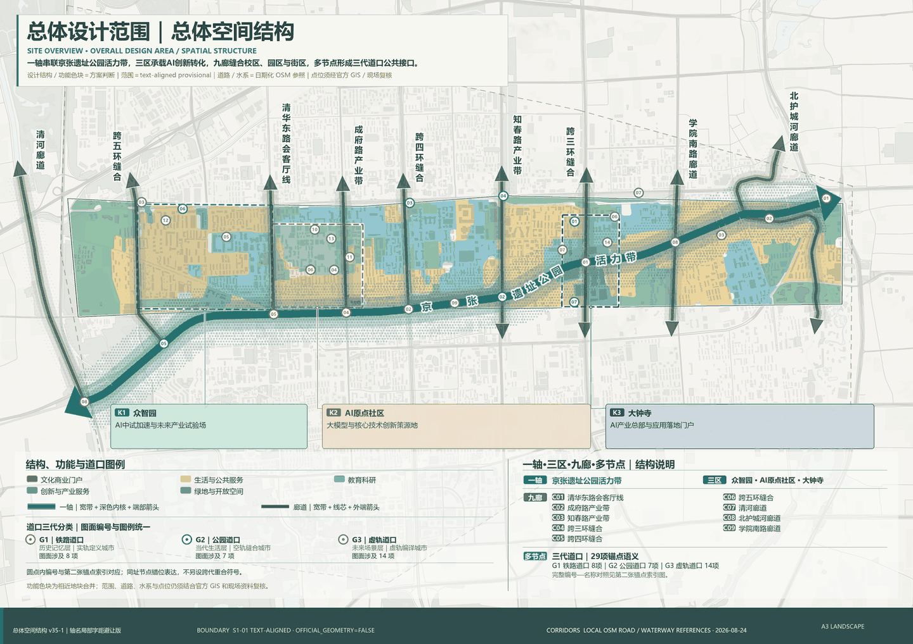
图4-1｜总体空间结构图：一轴·三区·九廊·多节点。总体设计范围、重点片区、廊道和节点均为方案阶段空间表达；临时边界和概念锚点不作为官方红线、批准点位、权属边界或审批依据。
一轴为京张遗址公园活力带。 主轴承担铁路文化展示、南北慢行、蓝绿连续、创新交往和公共服务复合功能，并通过沿线开放界面连接高校、企业、社区和轨道站点。停车、体育、创新交往、科技测试和应用展示采用功能插槽方式进入已确认的公共界面；涉及道路、桥隧、轨道和固定设施的方案须经过专业审查。
三区为众智园 AI 自主创新加速区、北京 AI 原点社区和大钟寺 AI 产业聚集区。 三区分别承担中试加速、近校转化和总部及智能原生业态功能，并形成“策源—孵化—中试—应用—反馈”的协同关系。空间数据 空间数据 空间数据
九廊为清华东路会客厅线、成府路产业带、知春路产业带、跨三环缝合、跨四环缝合、跨五环缝合、清河廊道、北护城河廊道和学院南路廊道。 结构级廊道承担产业和城市功能联系，缝合级廊道处理环路、轨道和大街区断点，边界级廊道衔接滨水、社区和公共服务。北护城河廊道、学院南路廊道及部分跨环联系仍需现状道路、权属和工程条件核验。
多节点由 G1 铁路道口 8 项、G2 公园道口 7 项、G3 虚轨道口 14 项组成，共 29 项。 铁路道口承载历史记忆和铁路文化，公园道口连接公园与城市界面，虚轨道口组织产业协作、社区服务、文化活动和人工智能场景。全部锚点只承担概念寻址和跨章节索引功能，不改变法定规划属性。指标
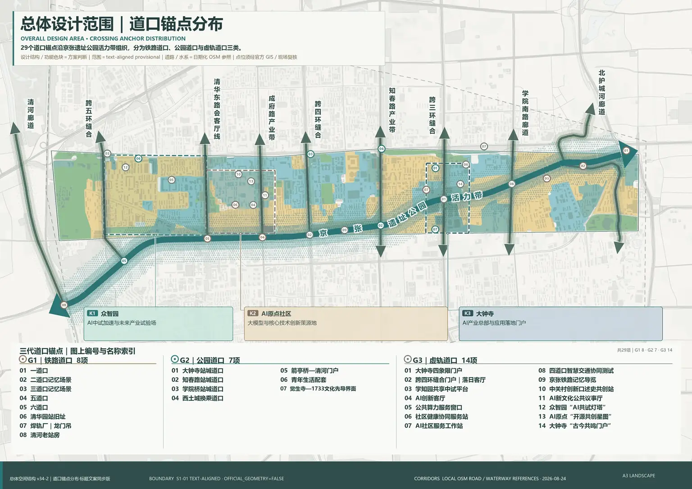
图4-2｜道口锚点分布图。编号和落位用于方案阶段场景、片区和项目索引，正式建设位置须以官方 GIS、现场调查和专业设计为准。
京张活力带以“南北连续、东西缝合、节点强化、断点修复”为最低空间行动。 保持南北慢行和绿色空间连续，由九廊组织东西缝合，在南北端、跨环路和轨道站点形成标志节点候选，并针对慢行断点分别提出绕行优化、界面开放、平面过街或专业工程深化方向。空间数据
4.4 产业功能、用地组织与总体支撑系统
4.4.1 AI 产业发展与企业聚集目标
总体设计范围承担人工智能创新链的核心空间承载功能，以基础研究、技术研发、成果孵化、中试验证、科技服务、应用展示和人才服务为主，不布局大规模制造。 高校和科研院所形成策源网络，AI 原点社区组织近校孵化和人才交流，众智园承担共享中试与产业化服务，大钟寺承接企业总部、智能原生业态和城市展示，沿线公共空间为测试、发布、交流和公众体验提供接口。来源
企业聚集目标是稳定并提升创新带对核心企业、成长型企业、专业服务机构和开发者人才的承载能力。 区级企业总数不机械下推到总体范围；采用“企业清查值＋更新载体容量＋共享服务覆盖”三类指标共同评价，企业绝对数量待企业名录和载体台账补齐后确认。来源
4.4.2 功能布局与弹性比例
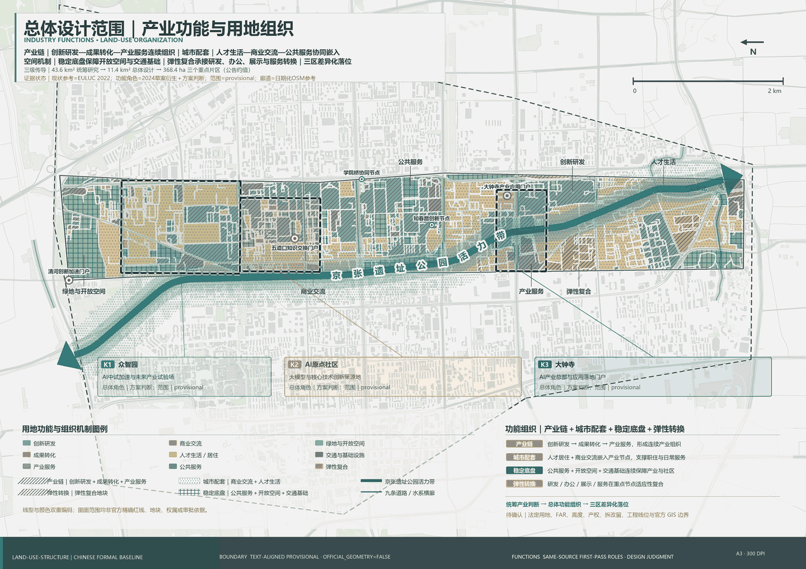
图4-3｜总体用地与功能结构图。功能组织和用地关系为方案阶段设计判断，不作为法定用地分类、官方精确边界或产权依据。
总体功能形成“创新生产为主、城市服务复合、公共底座支撑”的三类结构。 按建筑面积测算，研发办公及中试孵化以 55% 为基准，弹性范围为 50%—60%；展示交流、商业生活及人才服务以 30% 为基准，弹性范围为 25%—35%；公共服务及新型基础设施以 15% 为基准，弹性范围为 10%—15%。任何实施方案的三类功能合计必须为 100%，不能分别取各区间上限；该比例是方案设计模型，不替代法定用地和控规指标。指标 指标 指标
空间上形成“高校策源核—企业研发核—共享中试接口”的复合组织 。研发办公和中试孵化优先布局于三处重点片区及轨道、道口锚点周边；展示交流、商业生活和人才服务沿京张主轴、轨道站点与社区界面复合布局；公共服务及新型基础设施以分布式节点支撑产业和生活。
4.4.3 总体建筑规模与产业空间容量
现状公开研究口径显示，创新带沿线产业空间接近 1000 万平方米，其中约 100 万平方米具备更新利用潜力。总体建筑规模采用包含现状保留、存量更新和潜在新增的方案容量口径，不把更新空间面积直接等同于新增建筑面积。指标 指标
总体建筑容量采用 1600 万—1800 万平方米的设计模型区间。 指标 指标
按当前 11,492,502.43 平方米 provisional 几何复算，平均强度为 1.3922—1.5662；若按公告约 11.4 平方公里的任务尺度表达，则约为 1.40—1.58。按 55%／30%／15%的功能基准测算，研发办公及中试孵化空间约 880 万—990 万平方米，展示交流、商业生活及人才服务约 480 万—540 万平方米，公共服务及新型基础设施约 240 万—270 万平方米。指标 指标
上述区间用于验证产业目标、功能结构与交通市政承载关系，不是新增建设量、法定建筑规模或分地块容积率。建筑基底、现状楼层、保留更新对象和分地块图则补齐后，应以提交几何和正式资料重新计算。指标
4.4.4 交通、轨道、市政和配套支撑
交通与轨道系统按照“主轴连续、横向缝合、站点集聚、街区微循环”组织。 学知园、五道口、清华东路西口、大钟寺等轨道站点承担功能复合与接驳转换；京张主轴承担南北步行和骑行联系；九廊处理东西向联系和跨环、跨轨道断点；一般街区通过支路、慢行入口和开放界面改善微循环。轨道安全保护、道路红线、桥隧形式和交通流量仍需专业资料校核。空间数据 深度
公共服务与产业空间同步配置。 人才居住、教育医疗、文化体育、商业生活、创新服务平台和社区服务优先进入轨道站点、重点片区和京张主轴可达范围；停车供应与公共活动、慢行和轨道接驳协同组织，不在缺少调查数据时给出固定泊位总量。
新型基础设施采用分布式、可扩展的空间接口。 公共算力服务窗口、端侧算力、数据服务和限定测试设施与创新服务平台、园区公共界面和社区服务节点结合。分布式能源、电力容量、通信、给排水、环卫和应急设施是新增或提升建筑规模的前置校核条件。深度
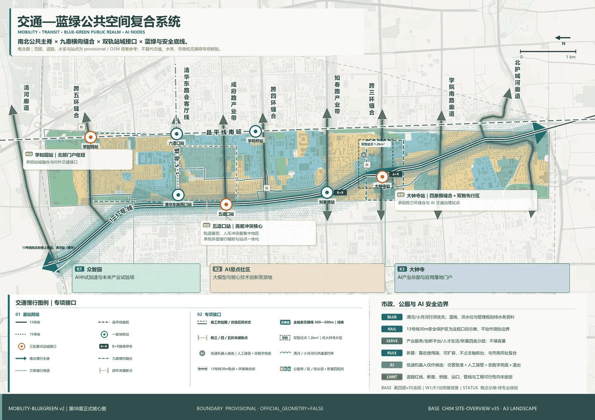
图4-4｜交通—蓝绿公共空间复合系统。图中表达主轴慢行、轨道接驳、横向缝合、蓝绿接口与 AI 公共节点的总体关系；站口、桥隧、停车容量、市政管线和工程形式仍待正式资料与专业校核。
京张遗址公园活力带承担南北贯通与东西缝合的复合公共空间任务。 公园沿线优先修复出入口落地、跨环路绕行和站点接驳等慢行断点；停车、体育、创新交往、科技测试和应用展示以可逆、分时的功能插槽进入已确认的公共界面，不占用文保、生态、防洪和交通安全底线。三处 AI 公共节点承担贡献展示、公众体验与协作服务，具体运营、授权和人工退出机制由场景与实施章节闭合。来源 空间数据
4.5 开发强度与城市风貌控制
开发强度采用高强度、中高强度、中等强度、低强度／重点控制区四类相对等级。 新增或提升规模向三处重点片区、轨道站点和道口锚点周边集聚；一般更新地区以存量优化、功能转换和适度复合为主；高度和体量向京张遗址公园、蓝绿空间、历史文化资源和生活敏感边界递减。
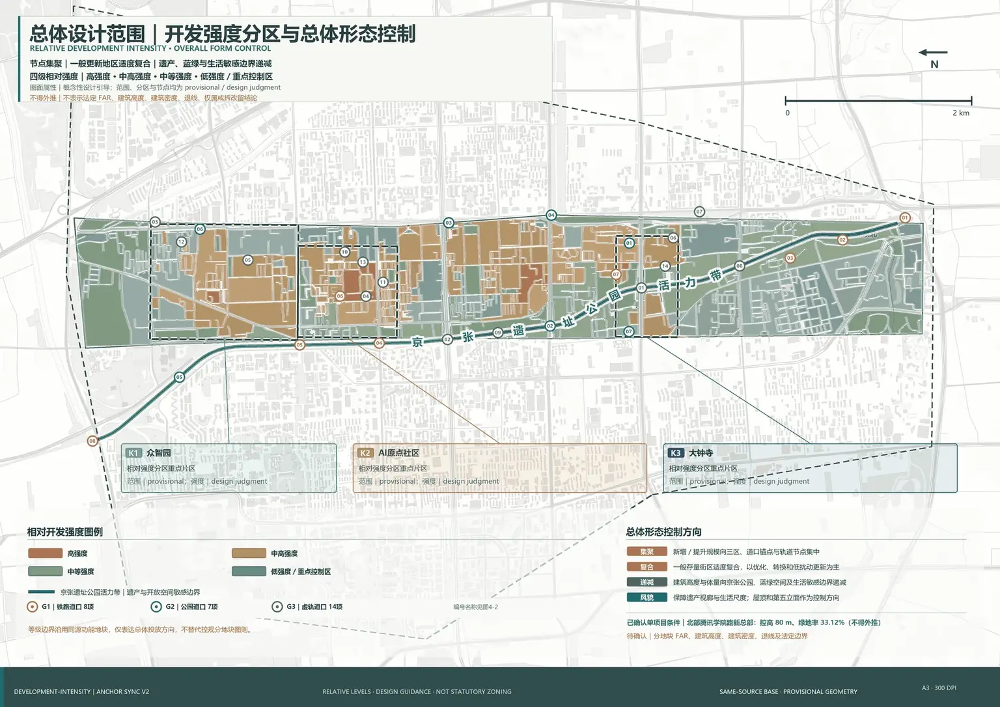
图4-5｜开发强度分区图。图中强度等级属于方案阶段设计判断，不作为法定控规图则、分地块 FAR、建筑高度、建筑密度或退线依据。
总体范围的容积率、分地块高度、密度和退线待正式图则补齐。腾讯学院路新总部 80 米高度控制和 33.12% 绿地率只适用于该项目；卫星制造厂等存量更新案例只用于说明适应性利用方式。来源
城市风貌以“铁路文化的时间厚度、中关村创新的开放精神、人工智能时代的公共性”为总体基调。
表4-1｜城市风貌分区控制与待核条件
| 地区类型 | 强度与体量 | 屋顶与第五立面 | 街道与公共空间界面 | 待核条件 |
|---|---|---|---|---|
| 京张遗产与公园界面 | 体量向公园递减，避免连续大体量压迫遗产空间 | 控制设备外露和杂乱附属物，形成整洁屋面 | 保持公共开放和遗产视廊，布置文化、交往和休憩功能 | 文保边界、景观视廊、运营许可 |
| 轨道与道口集聚区 | 在承载校核基础上适度集聚，强化复合功能 | 结合站点识别和公共空间形成整体轮廓 | 首层开放，组织换乘、商业、创新服务与公共活动 | 轨道安全、交通容量、开放责任 |
| 高校、园区与社区过渡区 | 控制封闭大体量和突变高度，以中等强度织补为主 | 采用分段、退台和可维护屋面 | 增加可协商开放的入口、连廊和共享服务界面 | 校地权属、消防、日照、开放时段 |
| 清河、小月河及生活敏感边界 | 低强度或重点控制，体量和高度向水绿空间递减 | 鼓励绿色屋面和低反射材料 | 保持滨水、绿地和社区慢行连续 | 防洪、生态、日照、噪声、维护责任 |
图4-5以“集聚—复合—递减—风貌”四类图例把强度与形态方向直接落到空间。以上控制属于总体城市设计引导；建筑风格、色彩、材料、精确高度和单体体量在重点片区及建筑与风貌章节中深化。标准 深度
4.6 城市更新总体框架
城市更新形成“京张主轴引领、重点片区带动、东西网络织补、存量空间渐进转化”的总体框架。 创新带沿线接近 1000 万平方米产业空间构成存量基础，约 100 万平方米可用更新空间是近期和中期的重点盘活对象，更新以低扰动织补、功能转换和公共界面改善为主，不以全域重建或大规模新增为目标。来源 指标
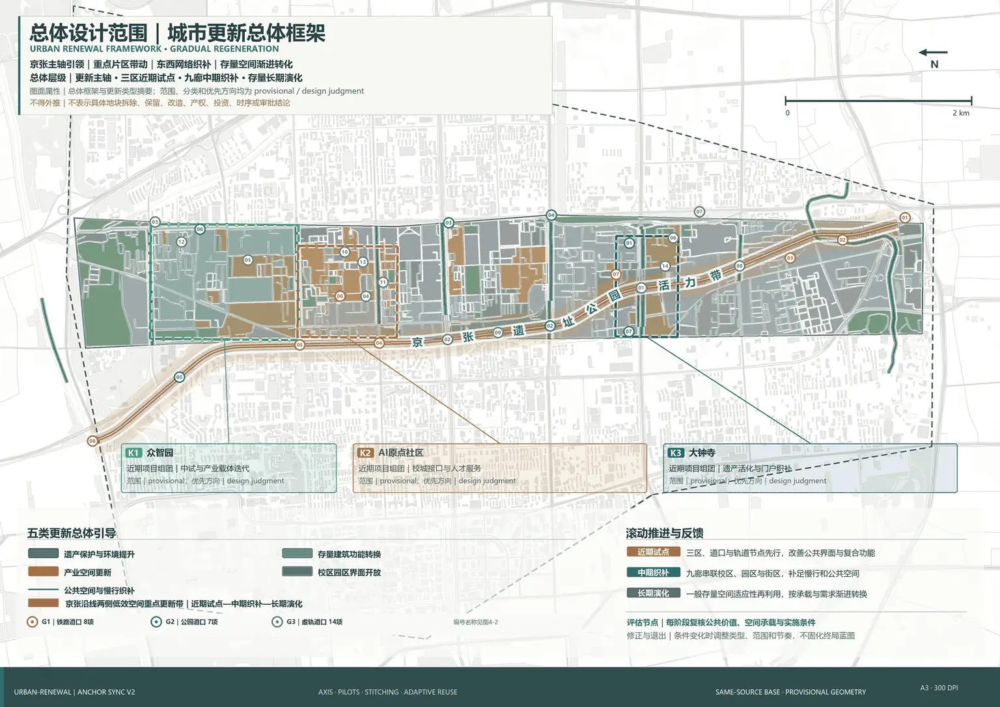
图4-6｜城市更新总体框架图。更新类型、重点地区和推进方向均为方案建议，不作为具体地块拆改留、权属、投资、实施时序或审批结论。
更新项目按遗产环境、存量转换、低效空间、校地界面和公共慢行五类组织。 第10章形成14项项目候选，覆盖遗址公园、重点存量载体、三区公共界面、滨水管护、算力与测试、荣誉节点和站城复合。来源 指标 深度
项目状态分为三类：已经建成或开放的存量基础、在建或已有公开依据的项目、本次方案提出的概念项目。 概念项目不得写成已批准建设；现状、在建和概念项目通过统一编号衔接总体结构、重点片区、分期和运营，不以图面落位反向创造产权、面积或审批结论。
实施通道依据空间权属和治理条件分类组织。 铁路授权带采用授权协商，集体产业空间采用自持运营和招商服务，国有出让及更新单元依照城市更新和规划实施程序，高校划拨用地采用校地协商。上述通道只说明可能的实施机制，不指派具体单位承担本方案责任，也不构成投资、招商、审批或建设承诺。
更新实施分近期、中期和长期三个阶段，并按照证据和治理成熟度逐步推进。 近期优先推进可逆公共空间、服务窗口、界面开放和运营试点；中期推进存量建筑更新、园区公共界面和跨主体设施织补；长期处理需要轨道、环路、文保、产权和复杂工程审批的项目。项目进入下一阶段前须通过规划、产权、文保、污染、结构、轨道安全和市政容量等前置校核；条件不满足时应限缩、暂停或恢复原状。空间数据 来源
总体设计以现状问题为起点，形成“一轴·三区·九廊·多节点”的总体空间结构，以三处重点片区承接人工智能创新转化，以京张遗址公园组织公共空间和文化主轴，以横向廊道改善东西联系。 所有规模和比例均区分现状底账、方案测算与法定控制；正式数据到位后，由提交几何、指标文件和相关章节统一复算并更新。指标 深度
第05章 重点区域详细设计
5.1 三片区总体分工与空间联系
总体设计形成“一轴三区九廊多节点”的空间骨架：一轴为京张遗址公园活力带；三区为众智园、北京 AI 原点社区和大钟寺；九廊缝合高校、园区、社区、站点与蓝绿空间；29项道口锚点承接铁路、公园与虚拟协作联系。 E1/W1仅作为统筹研究范围的协同背景，不纳入总体结构。来源 标准
三片区共同构成“原点策源—众智中试—大钟寺应用”的创新链：原点社区承接基础研发、概念验证、成果转化和人才生活；众智园承接共享中试、工程化、开放测试、标准与安全治理展示；大钟寺承接总部交往、AI原生应用、文化体验和城市展示。 来源 来源
沿京张轴线由北向南依次为众智园、原点社区和大钟寺。 空间数据 空间数据 空间数据
表5-1｜三处重点片区设计任务总览
| 重点片区 | 官方定位 | 主要问题 | 核心空间动作 | 方案项目 | 主要风险 |
|---|---|---|---|---|---|
| 众智园（DK-07） | 众智园 AI 自主创新加速区 | 中试载体、产业展示、对外交通、绿色交往和青年生活服务不足 | 高校核＋企业核＋共享中试第三极；站城融合；公园—清河—郊野公园联系 | Z-01～Z-04 | 北部控规覆盖、边界和生态条件待核 |
| 北京 AI 原点社区（DK-05） | 北京 AI 原点社区 | 校园—园区—社区割裂，成果发布、人才服务、居住和公共空间不足 | 成果转化网络＋活动生态＋低扰动更新；校城开放；站点和慢行缝合 | Y-01～Y-04 | 士绅化、文保、权属和交通条件待核 |
| 大钟寺（DK-04） | 大钟寺 AI 产业聚集区 | AI 原生业态承载、企业周边公共环境、商业服务和四象限连通不足 | 文化先导→AI 导入；站城一体；四象限缝合；公共界面复合 | D-01～D-04 | 文保、产权、跨环路交通和实施周期待核 |
九廊按片区形成三组横向联系：北部连接园区、郊野公园与滨水空间；中部连接高校、园区、社区和站点；南部连接总部、文保、商业和公园门户。 来源
E1/W1 只作为背景协同：西翼补充科技服务、创业孵化和资本链接，东翼补充具身智能、测试认证、生态感知和公共场景；两翼完整内容由统筹研究和相关章节展开。 来源 标准
新增与提质容量向三个重点片区、轨道站点和关键道口集聚。 建筑体量由站点和产业界面向文保、蓝绿、校园及生活敏感界面递减；容积率、建筑高度、用地兼容和权属边界依据控规与专项核验确定。来源 深度
建筑更新分为遗产保护与环境提升、存量建筑功能转换、低效产业空间更新、校区园区界面开放、公共与慢行空间织补五类。 已建且适用的产业和公共载体以保留、功能转换及界面提升为主；在建项目按已批准边界完善公共空间；只有已有公开重建线索且完成结构、产权、文保和交通论证的项目，才进入条件性拆除重建。来源 深度
现有空间数据形成三片区方案级估算。 临时范围在 EPSG:4548 下复算，功能底盘采用 EULUC 2022，现状建筑容量以 GABLE 遥感足迹和高度按 3.3—4.2m 等效层高换算；结果用于比较片区承载与更新方式，不作为实测建筑面积、法定容积率或新增建设量。来源 空间数据
表5-2｜三处重点片区空间数据与承载估算
| 重点片区 | 临时范围复算 | 功能底盘覆盖 | GABLE 现状建筑基底 | 等效现状建筑面积／强度 | 第4章更新判读覆盖 |
|---|---|---|---|---|---|
| 众智园 | 191.8ha | 148.7ha／77.6% | 1760个对象、声明足迹合计49.2ha | 228.5—289.0万㎡／1.19—1.51 | 功能转换84.6ha、产业更新45.7ha、遗产环境10.1ha、稳定背景8.3ha |
| 北京 AI 原点社区 | 104.7ha | 74.6ha／71.3% | 1051个对象、声明足迹合计30.5ha | 129.4—163.7万㎡／1.24—1.56 | 功能转换31.5ha、产业更新27.6ha、遗产环境4.0ha、稳定背景11.4ha |
| 大钟寺 | 72.3ha | 53.4ha／73.9% | 852个对象、声明足迹合计29.2ha | 114.5—144.9万㎡／1.58—2.00 | 功能转换20.3ha、产业更新21.3ha、界面开放11.6ha、遗产环境0.2ha |
上述三区合计3663个建筑对象，与当前 buildings.geojson 逐栋分类表一致。 表中分区“声明足迹合计”为对象属性面积之和；第07章和第11章采用去除对象重叠后的投影并集面积95.08ha，两者用途不同，不再混作同一统计口径。空间数据 指标
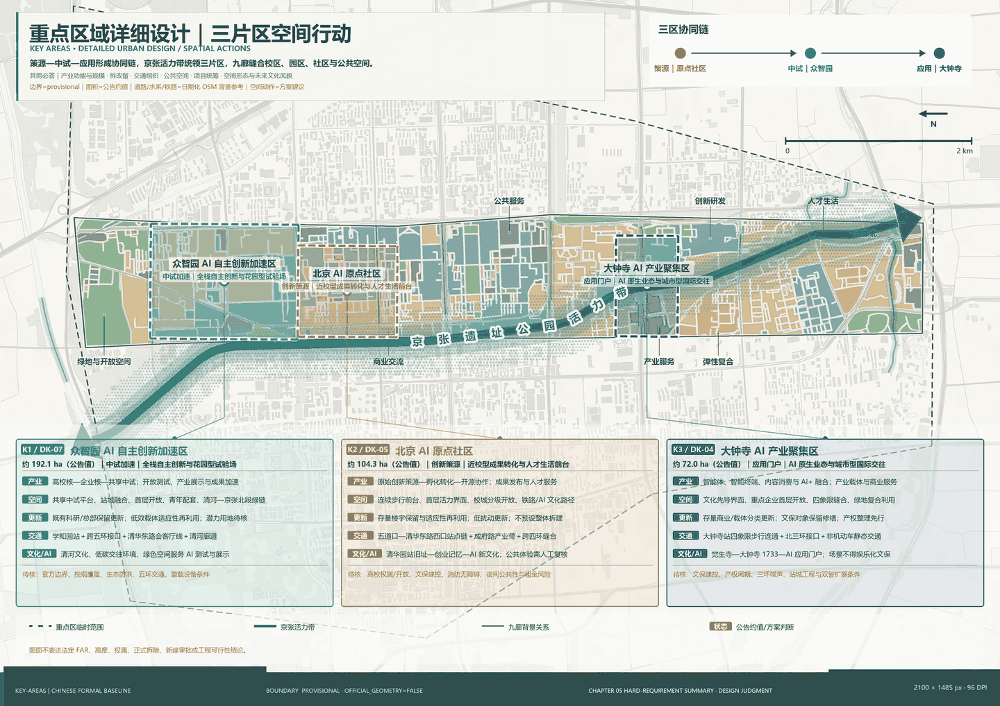
图5-1｜三处重点区域索引与设计任务图。表达三处重点区域总体定位、空间行动与协同关系；重点区边界为 provisional，公告面积为约值，空间动作属于方案判断。
<!-- CH5_IMPLEMENTATION_DEPTH_START -->
5.1.1 方案级建设规模与增量控制
三区以12个项目单元明确方案级建设规模，不再以“新增量待核”代替设计控制。 规模采用项目实施包络内GABLE现状容量代理与公开增量比例上限复算；零新增单元保持0，其他单元给出条件性增量区间。该区间用于比较空间承载和实施优先级，不是法定FAR、批准建设规模或投资承诺。来源 指标
表5-3｜十二个项目单元建设规模与实施口径
| 项目单元 | 建设规模控制 | 现状容量代理 | 条件性新增量 | 拆改留与实施口径 |
|---|---|---|---|---|
| Z-01 共享中试平台 | 存量中试适配＋条件性轻量增补 | 23.2—29.5万㎡ | 0.9—2.4万㎡ | 适用载体保留；低效空间功能转换；新增量设置上限；中期织补条件触发 |
| Z-02 学知园站城融合 | 站点首层复合利用；不安排大体量新建 | 2.8—3.6万㎡ | 0.0—0.1万㎡ | 建筑主体保留；入口、雨棚和无障碍界面更新；近期试点条件触发 |
| Z-03 青年生活配套 | 存量生活服务利用＋小规模可逆增补 | 14.4—18.1万㎡ | 0.1—0.5万㎡ | 居住服务建筑保留；首层转换；新增避让敏感界面；中期织补条件触发 |
| Z-04 京张—八家郊野慢行绿廊 | 不形成独立建设容量 | 16.6—21.0万㎡ | 0.0—0.0万㎡ | 生态、公园和水系空间保留；设施轻量可撤除；近期试点条件触发 |
| Y-01 黑客屋／人才驿站 | 存量楼宇首层与共享空间优先；微量可逆增补 | 7.9—10.0万㎡ | 0.1—0.2万㎡ | 主体保留；短约可逆内装；连续首层开放；近期试点条件触发 |
| Y-02 站外无障碍链 | 不新增独立建筑容量 | 15.6—19.7万㎡ | 0.0—0.0万㎡ | 沿线建筑保留；入口、坡道、铺装和街具更新；近期试点条件触发 |
| Y-03 校城开放道口 | 利用既有入口与沿街楼宇；仅轻量可逆设施 | 9.9—12.6万㎡ | 0.0—0.1万㎡ | 校园建筑保留；开放界面按一校一策实施；中期织补条件触发 |
| Y-04 华清嘉园记忆空间 | 存量商业与公共空间承载；不新增独立容量 | 5.0—6.3万㎡ | 0.0—0.0万㎡ | 社区肌理保留；首层转换；文保条件优先；中期织补条件触发 |
| D-01 公共空间治理 | 企业首层、站前和可逆设施复合利用 | 10.7—13.5万㎡ | 0.0—0.3万㎡ | 办公主体保留；公共界面开放；设施可撤除；近期试点条件触发 |
| D-02 四象限步行缝合 | 不预设地下工程或新增建筑容量 | 18.4—23.3万㎡ | 0.0—0.0万㎡ | 既有建筑保留；入口、桥下和站口界面更新；中期织补条件触发 |
| D-03 觉生寺文化先导界面 | 存量文化商业载体优先；建控外条件性增补 | 17.5—22.3万㎡ | 0.2—0.7万㎡ | 文保与工业遗存保留；商业功能转换；拆建须过前置门；长期演化条件触发 |
| D-04 双智体验段 | 可替换设备布置；不形成独立建筑容量 | 12.6—16.0万㎡ | 0.0—0.0万㎡ | 道路与建筑主体不变；设备模块化、可维护、可退出；近期试点条件触发 |
5.1.2 建筑对象级拆改留分类
当前重点区内的GABLE建筑体量已转为逐栋可核查对象，并逐一登记方案级拆改留分类。 分类包括保留使用、保护修缮、功能转换、界面提升、条件性拆建候选和待调查确认；“条件性拆建候选”必须经过建筑调查、结构、权属、文保、交通和公共利益复核，不是确定拆除结论。空间数据 深度
表5-4｜三处重点片区逐栋拆改留分类统计
| 重点片区 | 建筑对象 | 保留 | 保护修缮 | 功能转换 | 界面提升 | 条件性拆建候选 | 待调查 |
|---|---|---|---|---|---|---|---|
| 众智园 | 1760 | 53 | 27 | 1532 | 0 | 45 | 103 |
| 北京 AI 原点社区 | 1051 | 75 | 38 | 821 | 3 | 25 | 89 |
| 大钟寺 | 852 | 0 | 2 | 484 | 216 | 48 | 102 |
5.1.3 关键节点、剖面与界面控制
三个实施节点分别把众智园的站城—中试—绿链、原点社区的站外无障碍—校城开放、大钟寺的四象限—企业首层—规划绿地关系落实为可继续深化的平面与剖面控制。 图中宽度为方案建议区间，地下工程、道路红线、文保建控、防洪和绿地属性仍须专项复核。空间数据 空间数据 深度
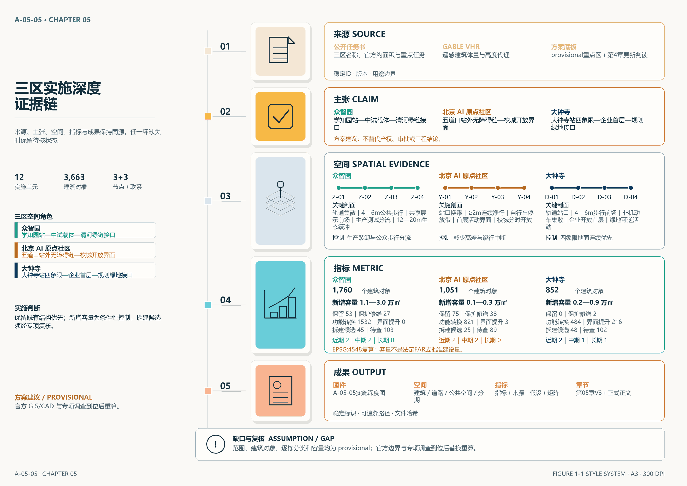
图5-2｜三区实施深度节点与剖面控制。表达12个项目单元的方案级容量、逐栋拆改留对象及三个关键实施界面；全部为 provisional 方案建议，待官方资料与专业团队深化。
<!-- CH5_IMPLEMENTATION_DEPTH_END -->
5.2 众智园 AI 自主创新加速区
5.2.1 设计目标与核心问题
众智园重点区域约192.1ha，以众智园核心载体、学知园站、腾讯学院路新总部及周边高校、科研机构和绿色空间为基础。 核心载体总建筑面积采用约23.8万㎡口径；腾讯学院路新总部采用约46万㎡、建筑高度80m、绿地率33.12%的公开项目口径，上述指标仅适用于各自项目，不外推为片区控规指标。站点和产业界面采用中高强度复合研发与公共服务，向清河、京张公园北段和八家郊野公园一侧降低体量、增加开敞界面；片区总建筑量、潜力地块FAR和新增建设规模待核。来源 来源
核心问题是“研发—中试—展示—生活”缺少连续空间。 以高校核连接科研、以企业核连接产业、以共享中试平台形成第三极，补足实验室成果到工程化、展示和场景的中间环节，并设置标准研究与安全治理的协作、展示空间。标准
5.2.2 空间结构与重点动作
一是组织高校核、企业核和共享中试第三极。 高校核面向科研与人才，企业核面向产业与工程化，共享中试平台提供试制、开放测试、产业展示、成果发布、标准与安全治理展示；生产测试区与公众展示区实行物理分区和分时管理。Z-01设置柔性中试空间和一站式服务界面，LM-01“AI共试灯塔”承担产业展示。来源 来源
二是组合花园式载体与重载中试空间。 已建研发、总部、园区塔楼和公共服务载体原则上保留并提升首层界面；适合中试的存量空间经承重、层高、装卸、消防和设备核验后功能转换；低效产业空间可更新为可拆分、可复用的中试单元；已批准在建项目不改变建设边界，完善慢行与公共空间；清河、京张公园和郊野公园不作为建设增量或拆改对象。来源 深度
三是以九廊组织站城—园区—生态联系。 通过清华东路会客厅线、跨五环缝合和清河廊道，补齐学知园站、园区首层、腾讯总部、京张公园北段和八家郊野公园之间的步行和骑行联系；五环路、京藏高速对外联系由第08章核验。深度
四是把北部蓝绿空间作为共同底盘。 公共空间在防洪、生态和绿地边界内组织研发、居民和访客活动，叠加清河文化、国际低碳交流和可逆AI体验；绿色空间不替代产业用地，也不因场景导入改变其属性。来源 来源
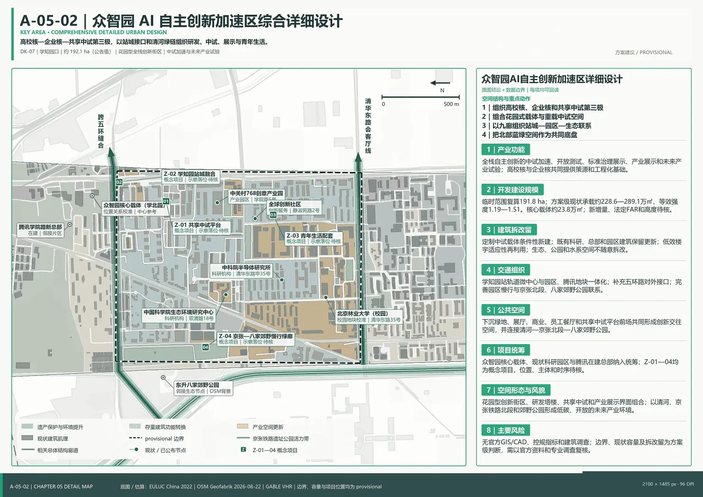
图5-3｜众智园重点区域综合详细设计图。表达众智园产业／项目链、建筑更新方向、站城与慢行、蓝绿公共空间及实施风险；边界为 provisional，项目节点为方案建议和示意落位。
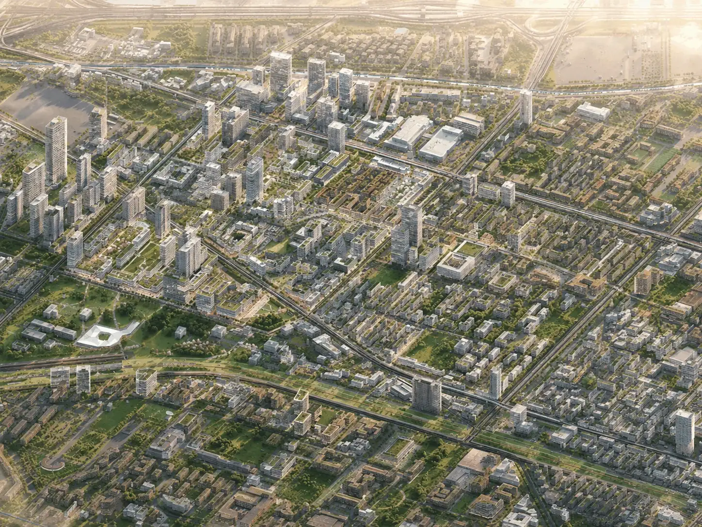
图5-4｜众智园花园型AI创新街区概念鸟瞰。Agent 自动公网搜索下载 GABLE／OSM／EULUC 数据生成 K1 Blender 区块底板，由用户在 GPT 官网图生图形成；用于表达花园式中试载体、复合街区和蓝绿联系，非现状航拍或法定建设方案。来源
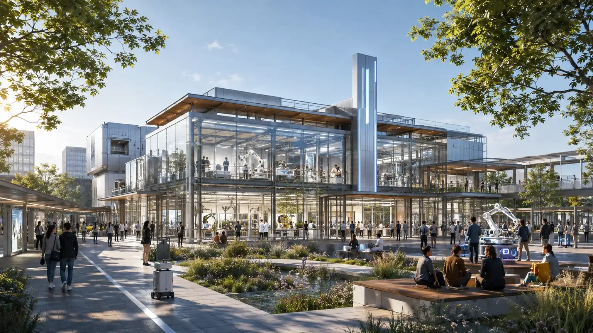
图5-5｜众智园·共享中试平台首层活力界面。对应 Z-01／节点 B，表达共享中试平台面向公众的成果展示、产业交流与首层开放界面；使用ChatGPT图像生成工具制作，由GPT-5.6 Pro完成指令理解与生成编排，内置图像生成工具使用
gpt-image-2生成，为方案概念表达，非现状实景或已建成项目。来源
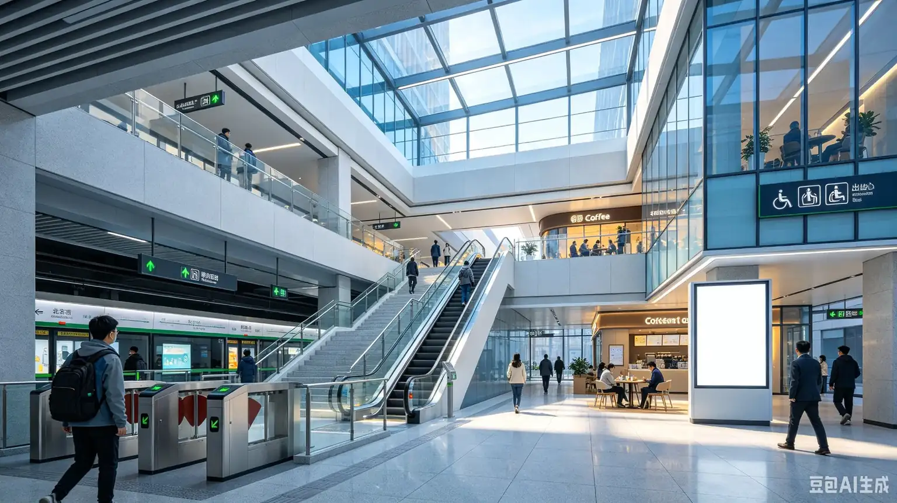
图5-6｜众智园·学知园站城融合剖面。对应 Z-02，表达轨道接驳、商业服务与园区首层的复合关系；豆包 AI 辅助生成，为方案概念表达，地下空间、结构和工程条件须经专项核验。
P-05腾讯学院路新总部的建设状态、时间和规模仅作为项目研究线索，待补直达官方来源后才能转为正式事实。 P-06众智园共享中试平台的约23.8万㎡规模与开园信息同样保持待核；Z-02、Z-03、Z-04分别为学知园站城融合、青年生活配套和京张—八家郊野慢行绿廊。来源
5.2.3 项目单元与专项控制
四个项目单元分别承担中试、站城、青年服务和蓝绿联系。
表5-5｜众智园项目单元控制
| 项目单元 | 产业与公共功能 | 规模控制 | 拆改留与建筑形态 | 交通与公共空间 |
|---|---|---|---|---|
| Z-01 共享中试平台 | 柔性中试、开放测试、成果发布、标准与安全治理展示 | 优先使用约23.8万㎡核心载体中的适用空间；新增设备及配套规模按承重、层高、消防和装卸条件确定 | 保留园区塔楼和适用厂房；低效空间功能转换；新增配套采用可拆分、可扩展单元 | 生产测试与公众展示分区；装卸交通和公共步行分流 |
| Z-02 学知园站城融合 | 轨道接驳、产业服务、访客集散和园区展示 | 不单列大体量新增建设，优先复合利用站点周边首层和公共空间 | 保留既有建筑；打开首层界面和园区入口；站点侧形成连续雨棚与导向界面 | 连接学知园站、众智园和腾讯地块，完善过街、无障碍、骑行和非机动车停放 |
| Z-03 青年生活配套 | 青年居住服务、餐饮、文化、运动和夜间交往 | 以存量生活服务空间和园区首层为主，小规模补充采用可逆设施 | 保留居住与服务建筑；首层功能转换；新增体量向产业界面集聚并避让生活敏感区 | 接入15分钟生活圈，形成园区—社区—京张公园连续步行网络 |
| Z-04 京张—八家郊野慢行绿廊 | 清河文化、低碳交流、AI体验和生态休憩 | 不形成独立建设容量，固定设施服从绿地、水系与防洪条件 | 不拆改生态、公园和水系空间；采用轻量、可撤除的展示与服务设施 | 串联京张公园北段、清河和八家郊野公园，衔接跨五环慢行方向 |
5.2.4 硬性要求落实
表5-6｜众智园硬性要求落实
| 官方硬性内容 | 众智园文字结论 |
|---|---|
| 产业功能 | 国家级AI平台承载、全栈创新、中试加速、开放测试、标准与安全治理展示、产业展示和未来产业试验；高校核与企业核共同提供策源和工程化基础 |
| 开发建设规模 | 重点区域公告约192.1ha，临时范围复算191.8ha；方案级现状承载基线约228.6—289.1万㎡、等效强度1.19—1.51；核心载体约23.8万㎡，腾讯总部约46万㎡、80m、绿地率33.12%仅适用于该项目；新增建设量和法定FAR、高度待核 |
| 建筑拆改留 | 新建或定制中试载体；保留更新既有科研、总部和园区建筑；低效楼宇适应性再利用；生态、公园和水系空间不作为可随意拆改对象 |
| 交通组织 | 学知园站轨道微中心与园区、腾讯地块一体化；补充五环路对外交通联系；完善园区内部慢行与京张北段、八家郊野公园的联系 |
| 公共空间 | 展厅、商业、共享中试周边交往空间，以及清河—京张北段—八家郊野公园绿色联系；叠加清河文化、国际低碳交流和可逆AI场景 |
| 项目统筹 | P-05、P-06的建设状态、时间与规模均为待直达官方来源核验的研究线索；Z-01—Z-04包括中试、站城、青年服务和慢行绿廊 |
| 空间形态与风貌 | 花园型创新街区、研发塔楼、共享中试和产业展示界面组合；以清河、京张铁路北段和郊野公园形成低碳、开放、具有地域记忆的未来产业环境 |
| 主要风险 | provisional 边界和北部控规覆盖待核；历史工业用地须先完成适用调查；五环路、生态、防洪、设备承重和青年生活服务条件需专业复核 |
5.2.5 风险与待核边界
众智园片区边界与约23.8万㎡核心园区不是同一尺度，其他存量空间和潜力用地仍需核验。 腾讯新总部建设进度及协同条件以公开资料和项目协议为准；创新空间比例、配套比例和重载中试层高由后续规划及工程设计确定。来源
5.3 北京 AI 原点社区
5.3.1 设计目标与核心问题
北京 AI 原点社区重点区域约104.3ha，是以五道口、成府路、清华科技园和周边高校科研资源为基础的近校型AI创新街区。 产业功能覆盖基础研发、概念验证、孵化转化、开源协作、成果展示发布、品牌活动和人才服务；居住、餐饮、文化、托育及夜间活动用于支撑创新人才日常生活，不将人才社区写成封闭园区。来源 标准
片区核心矛盾是高校、园区、社区和商业街区在围墙、轨道高架、过街和楼宇内部形成割裂，成果发布、人才生活和公共空间不足。 把成果、人才、生活和公共活动组织成可步行、可停留、可持续更新的前台社区。站点和现有创新载体周边采用中高强度功能复合，高校、社区、清华园站旧址和生活敏感界面采用中等或低扰动织补。来源
5.3.2 空间结构与重点动作
一是建立成果孵化、转化、发布和开源协作网络。 以原点大厦、清华科技园、智源研究院和周边高校为节点，配置成果展示、概念验证、开发者协作、品牌活动和人才服务空间，把“学习—社交—商机—生活”延伸到首层和街道。SC-01、SC-02、SC-04和SC-12分别布置于开放楼宇、短期试点、服务窗口和公共活动节点。来源 来源
二是采用保留为主的低扰动更新。 保留适用的高校、科研、办公、商业与居住建筑；低效楼宇通过功能转换、首层开放、设备更新和可逆内装承接创新活动；高校与园区边界按“一校一策”分级开放；清华园站旧址及建控范围以保护和环境提升为先；不预设成片拆除，只有经结构安全、产权、文保和交通论证的局部服务设施才可条件性更新。来源 来源 深度
三是以九廊组织连续步行前台。 依托成府路产业带、跨四环缝合和学院南路廊道，连接五道口、清华东路西口、校园、园区、社区和京张公园中段，研究300m无障碍链、非机动车停放和校城开放道口。深度
四是把五道口层积文化转化为空间记忆。 清华园站旧址属 DK-05 原点社区，五道口和华清嘉园叠加铁路、金融教育、国际社区、互联网创业和 AI 文化，建议形成“铁路记忆—民间创业—AI新文化”路径，避免简化为消费标签。来源 来源
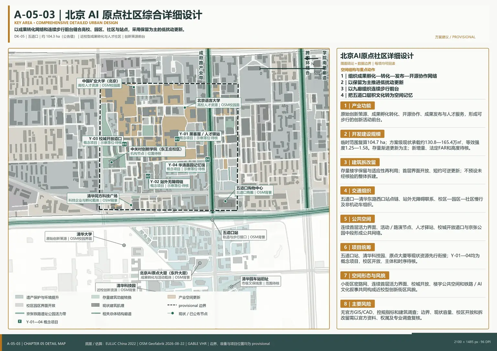
图5-7｜北京AI原点社区重点区域综合详细设计图。表达成果转化网络、低扰动更新、连续步行前台、站点联系与公共空间；边界为 provisional，项目节点为方案建议和示意落位。
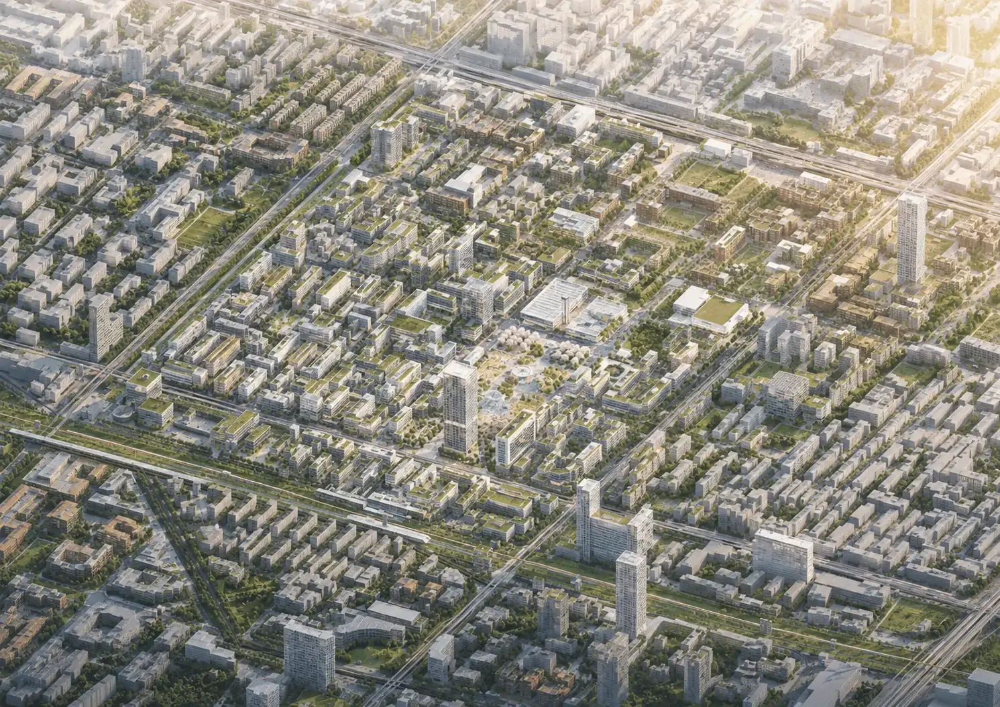
图5-8｜北京AI原点社区概念鸟瞰。Agent 自动公网搜索下载 GABLE／OSM／EULUC 数据生成 K2 Blender 区块底板，由用户在 GPT 官网图生图形成；用于表达高校策源、低扰动更新、成果转化网络和连续公共空间，非现状航拍或法定建设方案。来源
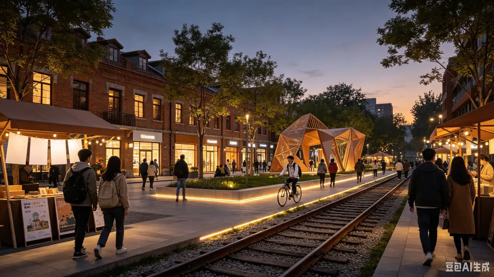
图5-9｜原点社区·五道口／京张公园中段活动场景。对应 Y-04，表达铁路记忆、社区活动、夜间交往与京张公园公共界面的叠合；豆包 AI 辅助生成，为方案概念表达，非现状实景或确定运营安排。
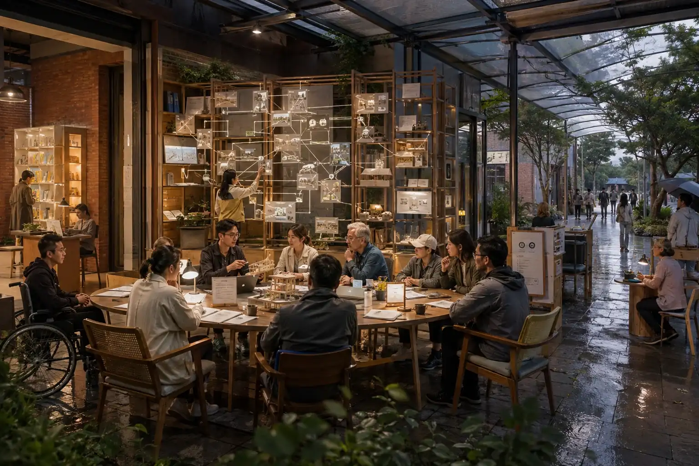
图5-11｜AI原点社区·城市创新公共客厅。对应 Y-01／Y-03，以开放议事、跨龄共创、无障碍参与和创新成果展示组织面向社区的公共协作界面；使用ChatGPT图像生成工具制作，由GPT-5.6 Pro完成指令理解与生成编排，内置图像生成工具使用
gpt-image-2生成，为方案概念表达，非现状实景、已建成项目或真实公众参与记录，具体运营、无障碍和人物／展示材料权利仍须核验。来源
P-07原点低扰动更新与人才驿站包括Y-01人才驿站和Y-03校城开放。 P-10创新会客厅与算力服务窗口作为近期试点，不在片区新建大型算力中心；P-12原点荣誉节点与SC-12品牌活动结合；Y-02和Y-04分别组织站点无障碍链和铁路—创业—AI文化记忆。来源 来源
5.3.3 项目单元与专项控制
四个项目单元形成成果转化、无障碍、校城开放和文化记忆网络。
表5-7｜北京AI原点社区项目单元控制
| 项目单元 | 产业与公共功能 | 规模控制 | 拆改留与建筑形态 | 交通与公共空间 |
|---|---|---|---|---|
| Y-01 黑客屋／人才驿站 | 概念验证、开发者协作、成果发布和人才服务 | 优先使用原点大厦、科技园及周边存量楼宇首层和共享空间；新增面积待载体清查 | 保留主体结构，采用短约、可逆内装；形成小尺度、连续开放的首层界面 | 接入五道口步行网络，配置夜间安全、活动集散和自行车停放 |
| Y-02 站外无障碍链 | 五道口站外换乘、无障碍通行和慢行接驳 | 不新增独立建筑容量，设施规模按客流与无障碍专项核定 | 保留沿线建筑，局部调整入口、坡道、铺装和街道家具 | 连续连接站口、园区、社区与京张公园中段，减少绕行和高差中断 |
| Y-03 校城开放道口 | 高校成果交流、共享服务和园区协作 | 不占用校园科研空间；服务设施利用现有入口和沿街楼宇 | 校园建筑以保留为主，开放界面按“一校一策”实施；新增设施轻量可逆 | 连接高校、科技园、社区与站点，明确开放时段、安全和责任边界 |
| Y-04 华清嘉园记忆空间 | 铁路记忆、创业文化、社区展陈和品牌活动 | 以存量商业、社区公共空间和可移动展陈为主 | 保留社区肌理和适用建筑；首层功能转换；清华园站旧址周边服从文保控制 | 串联成府路、五道口、京张公园与社区生活节点 |
5.3.4 硬性要求落实
表5-8｜北京AI原点社区硬性要求落实
| 官方硬性内容 | 北京 AI 原点社区文字结论 |
|---|---|
| 产业功能 | 高校原创创新、成果孵化与转化、开发者社区、开源协作、成果展示发布、品牌活动、人才服务和近校型生活配套 |
| 开发建设规模 | 重点区域公告约104.3ha，临时范围复算104.7ha；方案级现状承载基线约130.8—165.4万㎡、等效强度1.25—1.58；以高密度混合街区和存量渐进式更新为主，少量新建仅作条件性补充；新增建设量和法定FAR、高度待核 |
| 建筑拆改留 | 保留为主；低效楼宇适应性再利用；首层和高校围墙界面开放；短约可逆更新；不预设未经核验的地块推倒重建 |
| 交通组织 | 五道口、清华东路西口站点一体化；站外最后300米无障碍连续联系；校区—园区—社区慢行；同步核查非机动车、消防和道路条件 |
| 公共空间 | 首层活力界面、成果发布与品牌活动节点、人才驿站、京张公园中段、校城开放道口和华清嘉园记忆空间 |
| 项目统筹 | P-07、P-12为概念项目，P-10为近期试点；Y-01—Y-04包括人才服务、无障碍、校城开放和文化记忆 |
| 空间形态与风貌 | 小街区密路网、连续首层活力界面、校城开放、楼宇公共空间和铁路/AI文化叙事共同构成近校型创新街区风貌 |
| 主要风险 | 士绅化和空间排斥；清华园站旧址Ⅴ类建控边界；高校权属和开放条件；13号线高架、无障碍、消防、道路和更新成本待核 |
5.3.5 风险与待核边界
清华园站旧址的正式文保范围、建设控制地带和与周边建筑的关系仍需文物及规划资料核验。 五道口夜间业态变化快，夜间公共性和寒暑假客流需要进一步踏勘。可负担居住和人才服务作为设计方向提出，具体比例、政策工具和产权条件移交后续章节；高校开放边界和法定建设规模仍待核定。
5.4 大钟寺 AI 产业聚集区
5.4.1 设计目标与核心问题
大钟寺重点区域约72.0ha，是城市型AI产业聚集区。 片区围绕智能体、智能终端、内容消费等AI原生和AI+业态，组织总部协作、开发者服务和国际路演，并设置数据授权、权利说明、人工复核、申诉与退出机制。来源 来源
片区已有企业办公集群、中坤广场、1733、蓝景丽家及四道口双智试点等资源，但文化遗产、快速路、轨道站点和总部空间之间缺少连续公共界面。 设计命题为“文化先导→AI导入”：先建立城市身份，再导入总部交往、AI展示、商业服务和智能治理。建设以存量办公、商业和文化载体更新为主：站点、总部及重点企业界面采用中高强度复合，向觉生寺、京张公园、规划绿地及生活社区递减；各项目规模逐项使用，不汇总为未经核验的片区总量。来源 来源
5.4.2 空间结构与重点动作
一是形成文化先导—总部应用—公共服务门户。 依托觉生寺、永乐大钟和1733更新先例，以知春路产业带、跨三环缝合和北护城河廊道连接觉生寺—1733—重点企业—大钟寺站—京张公园南段。周边高校界面组织公共步行、成果交流和配套服务。SC-05进入商业首层和社区服务，SC-07组织四象限交通治理，LM-03“古今共鸣门户”突出文化识别和公共空间。来源 来源 来源
二是以存量分类更新承接AI原生和AI+业态。 卫星制造厂等工业遗存优先保留、修缮和适应性利用；中坤广场类存量商业采用功能转换与公共界面提升；蓝景丽家等已有公开更新线索的项目，可在产权、结构、文保、交通和公共利益论证后进入条件性拆除重建；企业办公及可继续使用的商业载体以保留提升为主；觉生寺文保与建控范围内不提出未经批准的新建结论。来源 深度
三是把四象限连通提升为公共生活问题。 大钟寺站为12/13号线换乘节点，空间设计同步处理站点、北三环、企业、周边高校和社区之间的步行、过街、非机动车停放及公共空间连续性；地下连接和交通信控扩展须经专业论证。深度
四是把AI原生场景放入真实公共环境。 围绕智能终端、内容消费、AI夜校、国际路演和数据要素展示设置可替换节点，并以授权、隐私、人工复核、内容标识和退出机制为前置。规划绿地采用不改变用地属性的可逆混合使用，企业首层、桥下及站口空间补足商业与社区服务；不把数据平台或双智试点效果写成已批准事实。来源 来源
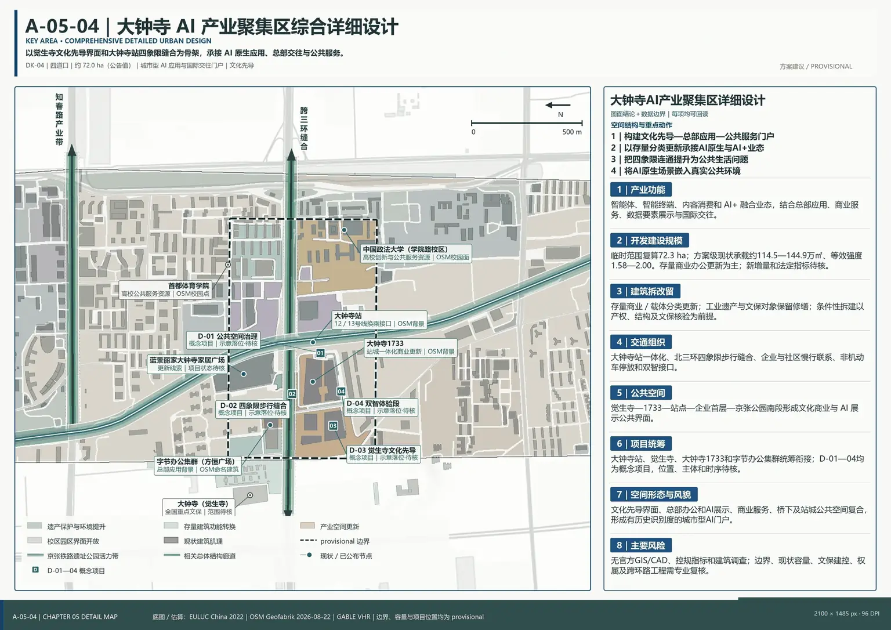
图5-12｜大钟寺重点区域综合详细设计图。表达文化先导、存量分类更新、四象限缝合、站城联系与 AI 应用公共界面；边界为 provisional，项目节点为方案建议和示意落位。
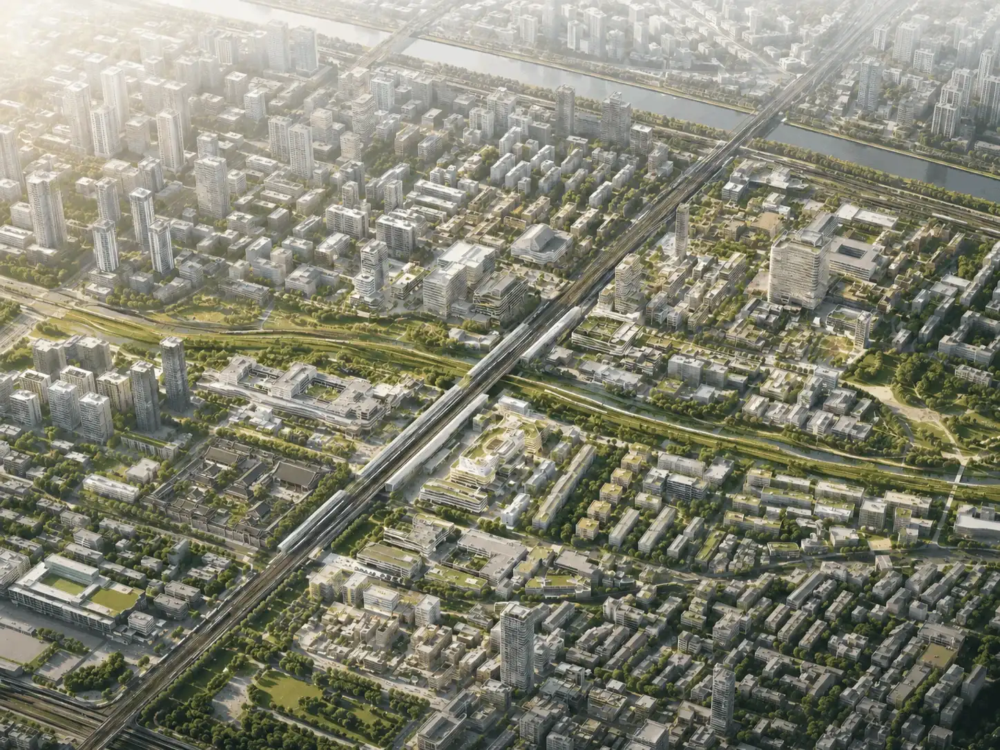
图5-13｜大钟寺AI产业集聚区概念鸟瞰。Agent 自动公网搜索下载 GABLE／OSM／EULUC 数据生成 K3 Blender 区块底板，由用户在 GPT 官网图生图形成；用于表达文化先导、站城缝合、存量更新与AI应用门户，非现状航拍或法定建设方案。来源
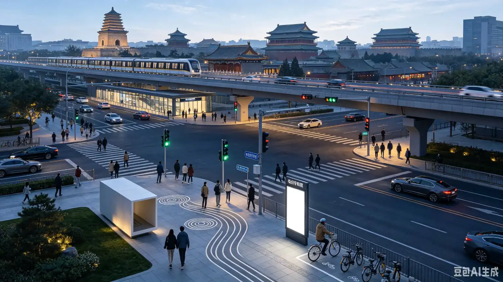
图5-15｜大钟寺·四象限缝合／双智体验段。对应 D-02／D-04，表达站点、北三环四象限慢行联系与可替换双智体验设施；豆包 AI 辅助生成，为方案概念表达，地下工程、道路交通和设备部署须经专项论证。
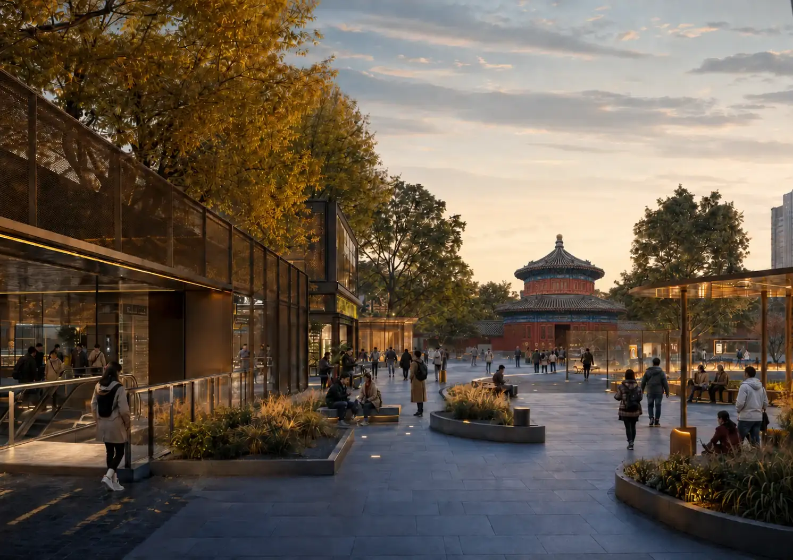
图5-16｜大钟寺站前广场。对应 D-02／D-04，以站点到达、连续步行、公共停留、文化意象与轻量服务设施形成面向四象限的站前公共界面；使用ChatGPT图像生成工具制作，由GPT-5.6 Pro完成指令理解与生成编排，内置图像生成工具使用
gpt-image-2生成，为方案概念表达，非现状实景、文物复原、已建成项目或批准建设依据，交通组织、文保建控、地下工程与设施落位仍须专业核验。来源
P-01京张遗址公园的分期开放状态作为公开资料研究线索，待补直达官方来源核验。 P-02卫星制造厂以保留修缮为先；P-03中坤广场作为商改办和首层开放参照；P-04蓝景丽家保留条件性拆除重建线索；P-08和P-14分别组织文化界面与四象限站城缝合。来源 来源
5.4.3 项目单元与专项控制
四个项目单元组织企业公共界面、四象限步行、文化门户和双智体验。
表5-9｜大钟寺AI产业集聚区项目单元控制
| 项目单元 | 产业与公共功能 | 规模控制 | 拆改留与建筑形态 | 交通与公共空间 |
|---|---|---|---|---|
| D-01 公共空间治理 | 企业服务、国际交流、路演、商业配套和规划绿地复合使用 | 以企业首层、站前和规划绿地可逆设施为主，不改变绿地属性和建设容量 | 保留企业办公主体；开放首层和沿街界面；新增设施采用可撤除轻构筑物 | 连续组织企业入口、站口、京张公园和社区服务空间 |
| D-02 四象限步行缝合 | 轨道换乘、企业通勤、社区过街和非机动车集散 | 不预设地下工程或新增建筑规模，按交通专项确定 | 既有建筑以保留为主，重点改造入口、桥下和站口界面 | 明确四象限步行路径、无障碍过街、公交换乘及非机动车停放区 |
| D-03 觉生寺文化先导界面 | 文化展示、AI应用发布、商业服务和城市门户 | 以觉生寺—1733—企业首层存量空间为主，新增规模服从文保建控 | 觉生寺和工业遗存保留修缮；中坤类项目功能转换；蓝景丽家类项目仅保留条件性重建可能 | 形成觉生寺—1733—大钟寺站—京张公园南段连续文化步行路径 |
| D-04 双智体验段 | 智能交通体验、数据授权展示、社区服务和公众反馈 | 依托既有道路与服务节点布置可替换设备，不形成独立建设容量 | 不改变道路和建筑主体；设备采用可维护、可退出的模块化安装 | 在现有试点范围内完善交通信息、人工复核、申诉退出和慢行安全 |
5.4.4 硬性要求落实
表5-10｜大钟寺AI产业集聚区硬性要求落实
| 官方硬性内容 | 大钟寺 AI 产业聚集区文字结论 |
|---|---|
| 产业功能 | AI原生/AI+融合业态、智能体与智能终端、总部应用、内容消费、数据要素合规展示、开发者服务、国际交往和文化体验 |
| 开发建设规模 | 重点区域公告约72.0ha，临时范围复算72.3ha；方案级现状承载基线约114.5—144.9万㎡、等效强度1.58—2.00；字节办公集群和大体量存量商业为主要背景；新增建设量及各项目法定规模待核 |
| 建筑拆改留 | 中坤等适合商改办；蓝景丽家等已公布更新线索可作为拆除重建类型参照；产权整理先行；工业遗产和文保对象保留更新；文保建控内不提出新建结论 |
| 交通组织 | 大钟寺站一体化、四象限步行缝合、跨北三环慢行联系、非机动车停放和双智试点衔接 |
| 公共空间 | 觉生寺—大钟寺1733文化商业界面、四象限节点、京张公园南段、规划绿地可逆复合使用、企业首层与AI应用展示 |
| 项目统筹 | P-01开放状态待直达官方来源核验，P-02保留修缮，P-03功能转换，P-04条件性重建，P-08/P-14为概念项目；D-01—D-04继续承担公共治理、缝合、文化和体验 |
| 空间形态与风貌 | 文化先导界面、总部办公和 AI 展示、商业服务、桥下及站城公共空间复合，形成有历史识别度的城市型 AI 门户 |
| 主要风险 | 觉生寺国保及建控范围；产权和更新周期；北三环噪声与步行切割；道路、站城、非机动车和双智扩展条件待核 |
5.4.5 风险与待核边界
大钟寺片区更新周期较长，各项目建设进度、产业导入和公共界面开放条件需要逐项确认。 企业协同和员工规模以项目资料为准。觉生寺与大钟寺1733之间的完整文化路径仍属于设计建议；数据交易机制、文保建控边界、跨环路地下连接和交通信控扩展须由专项团队复核。
5.5 三片区协同与实施安排
三片区形成“策源—中试—应用”功能链。 原点社区负责成果策源与转化，众智园承接工程化和中试，大钟寺承接应用与公众体验；九廊分别在北、中、南联系园区、高校、社区、站点、滨水与公园门户，同时服务产业协作、人才通勤、公共活动和文化叙事。
实施上，原点社区适合先开展活动生态、站点无障碍和低扰动更新等可逆试点；众智园根据载体运营、工程和生态条件推进中试平台、产业展示和站城联系；大钟寺则应在产权、文保和跨三环交通条件明确后推进文化门户、四象限缝合和AI应用公共环境。 该顺序是治理成熟度和空间条件的建议，不等同于官方确定的建设时序。来源
现状项目以保留使用、功能转换和公共界面提升为主。 在建项目完善公共空间与交通联系；规划项目根据产权、成本和建设条件分期实施。来源 来源
表5-11｜三处重点片区项目状态与统筹规则
| 状态层 | 众智园 | 原点社区 | 大钟寺 | 统筹规则 |
|---|---|---|---|---|
| 现状／已开放 | 高校科研、园区与蓝绿基底 | 高校、研发机构、原点大厦、五道口与社区基底 | 觉生寺、1733、企业办公、存量商业、京张公园 | 以保留使用、功能转换和公共界面提升为主 |
| 在建／公开推进 | P-05腾讯总部；P-06载体运营状态待核 | 无新增建设量承诺 | 逐项目核验，不把更新线索等同于完工 | 只衔接已批准边界外的公共空间与交通接口 |
| 规划／概念 | Z-01—Z-04 | P-07、P-10、P-12及Y-01—Y-04 | P-08、P-14及D-01—D-04 | 责任、成本和实施时序待核 |
三片区沿京张主轴形成“策源—中试—应用”空间链，并由九廊、多节点和公共界面承接产业、生活和生态联系。 众智园以花园型中试承接未来产业，原点社区以近校开放承接成果与人才，大钟寺以文化先导承接总部、应用和门户；三区分别采用产业空间更新、低扰动功能转换和存量分类更新，守住文保、生态、公共利益、权属和人类治理底线。
第06章 AI 创新生态、人才画像与 AI+ 场景
6.1 从创新资源到可验证场景
本章把八类要素组织为“问题—匹配—验证—人工判断—反馈—退出”运行链：AI原点负责研发协作，众智园负责原型中试，大钟寺负责应用体验，两翼分别提供专业服务和受控测试。该分工是开放共创建议，不代表确定的招商、建设或运营安排。来源 来源 标准
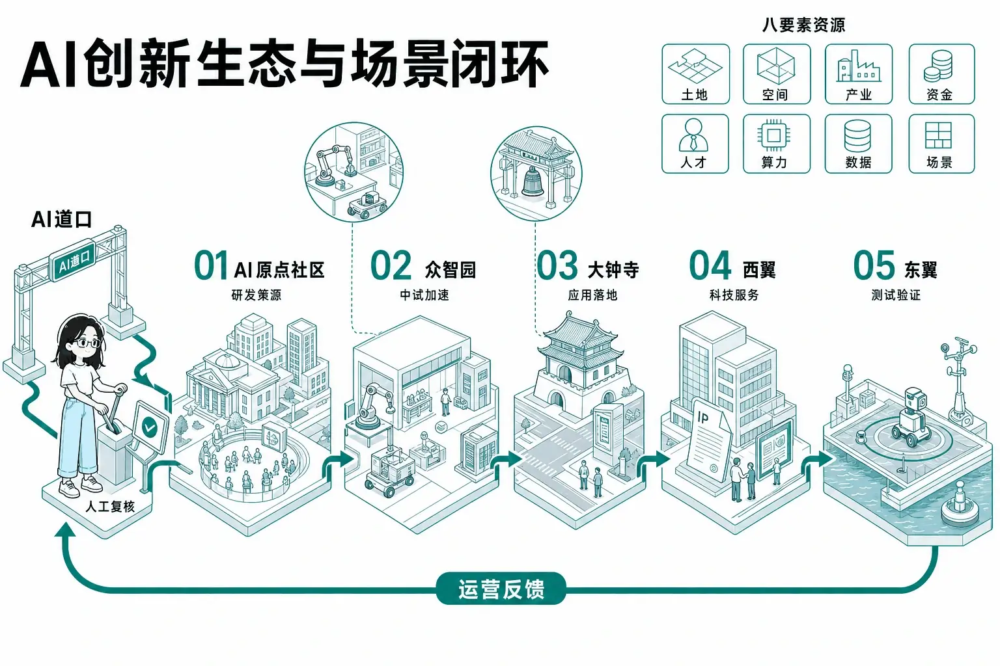
图6-1｜AI创新生态与场景闭环。以五类空间角色承接八类创新资源，并把人工复核、非数字替代和退出复原作为场景开放的共同底线；节点和连线表达设计关系，不证明主体授权、建设时序或正式运营状态。来源
6.2 五类用户画像与空间响应
用户画像只用于识别公共服务与空间需求，不建立可识别个人档案，也不把年龄、职业或数字能力直接转化为商业推荐。每类人群均保留人工、电话、纸质材料、实体导视或无设备参与方式。来源 标准
表6-1｜五类用户画像与服务接口
| 用户画像 | 目标与主要痛点 | 活动时段与空间触点 | 数字能力与非数字服务 |
|---|---|---|---|
| AI研发人员与工程师 | 寻找合作者、算力和中试资源；跨机构协作、夜间服务和知识产权边界是主要痛点 | 工作日及晚间；AI原点、众智园、中关村科技服务翼 | 可使用数字工具，但安全培训、合同、设备操作和申诉保留人工渠道 |
| 高校学生与青年研究者 | 获得可信课程、导师、实验室和跨校项目；避免信息失真和自动评价 | 课后、周末及夜间；高校接口、AI原点、京张沿线公共空间 | 支持多种界面；学术内容、成绩和资格判断由教师或专业人员负责 |
| 老年居民与家庭照护者 | 完成健康咨询、社区办事和日常出行；避免数字门槛与错误建议 | 白天及服务高峰；大钟寺周边社区、生活道口 | 默认支持大字、语音和一键转人工，保留现场、电话和纸质服务 |
| 夜间工作者 | 获得补给、休息、安全通行和应急联系；避免强制下载、轨迹和人脸采集 | 夜间；AI原点、交通节点、园区接口 | 允许免注册使用，保留实体地图、人工巡查和紧急联系设施 |
| 通勤者与访客 | 快速换乘、到达、参与活动并理解地方文化；解决路径切割与信息不一致 | 早晚高峰及活动时段；大钟寺、铁路轴、AI原点、小月河 | 从无设备到高频使用均可，保留静态导视、人工问询与多语基础信息 |
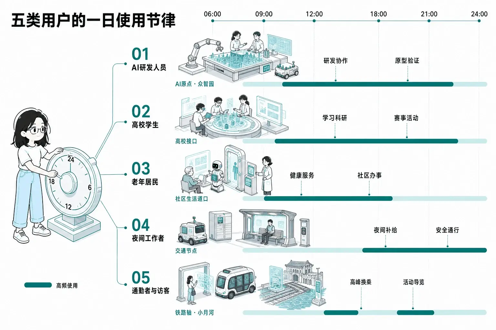
图6-2｜五类用户的一日使用节律。以共同时间轴呈现五类用户在工作、生活、社交、学习与公共服务中的空间触点；场景为概念建议，不构成个体画像或服务承诺。来源
6.3 十二张AI场景卡
十二个场景覆盖创新、教育、中试、算力、健康、社区服务、交通、具身智能、生态、铁路文化、中关村记忆和AI新文化。场景落点均为示意寻址：三处重点区沿用提交的临时重点区几何，京张轴、小月河和生活道口沿用低置信度公共空间与交通模型；它们不是官方红线、权属边界或批准项目。空间数据 空间数据 空间数据
表6-2｜十二个AI场景与空间落点
| ID | 场景与服务对象 | 空间位置与载体 | 运行闭环与当前判断 |
|---|---|---|---|
| SC-01 | AI创新客厅；研发人员、学生、访客、夜间工作者 | DK-05五道口／AI原点公共首层与共享空间 | 需求—匹配—人工审核—活动—复盘／退出；有活动基础，具体空间与主体待确认 |
| SC-02 | AI教育与科研协作站；学生、研究者、研发人员 | DK-05高校—园区开放接口与共享学习空间 | 兴趣—资源匹配—专业复核—协作—纠错／撤权；近期可试点 |
| SC-03 | 人机协作与原型验证工坊；研发及创业团队 | DK-07学知园口／众智园限定中试界面 | 状态感知—工序建议—人员批准—限定测试—停机／撤场；规划测试 |
| SC-04 | 公共算力服务窗口；学生、科研团队、初创企业 | DK-05、DK-07公共服务界面，不进入机房和生产核心区 | 需求—目录匹配—授权审核—调度—评估／终止；服务窗口可先行 |
| SC-05 | 社区健康协同服务站；老年居民、家庭照护者 | DK-04／社区公共服务和基层医疗接口 | 主动需求—初筛转介—专业判断—服务—随访／退出；责任边界确认后试点 |
| SC-06 | AI社区服务工作站；居民、社区工作者、访客 | 大钟寺及沿线既有社区服务点，具体点位待核 | 查询—组合服务—按权限调用—人工受理—纠错／恢复原流程；近期可试点 |
| SC-07 | 四道口智慧交通协同测试；通勤者、居民 | DK-04四道口安全等待岛与既有交通设施 | 匿名聚合—多方案模拟—管理人员确认—受控执行—回退／停止；已有局部试点基础 |
| SC-08 | 小月河具身智能公共空间测试；研发团队、运营人员、公众 | E1小月河东翼封闭测试—半开放观察—公众体验界面 | 互动—受控回传—方案生成—人员授权—限定运行／急停；规划测试 |
| SC-09 | 小月河生态感知与滨水预警站；居民、访客、管理人员 | E1小月河滨水步道、生态观察和维护接口 | 环境感知—分级建议—专业审核—提示维护—反馈／停用；规划测试 |
| SC-10 | 京张铁路记忆导览；居民、学生、访客 | 京张遗址公园连续公共路径及DK-04／05／07入口 | 进入—选择终端—查询体验—来源核验—纠错更新；近期可试点 |
| SC-11 | 中关村创新口述史共创站；老科技工作者、创业者、居民、学生 | W1中关村科技服务翼及DK-05公共文化接口 | 授权讲述—转写整理—史实／权利复核—展示／撤回；规划试点 |
| SC-12 | AI新文化公共议事厅；开发者、学生、居民、企业从业者、访客 | DK-05／AI原点共享公共首层与可变活动空间 | 公众表达—事实核验—多方案推演—人确认／暂停—空间反馈；有活动基础，协作机制待确认 |
6.3.1 SC-01 AI创新客厅
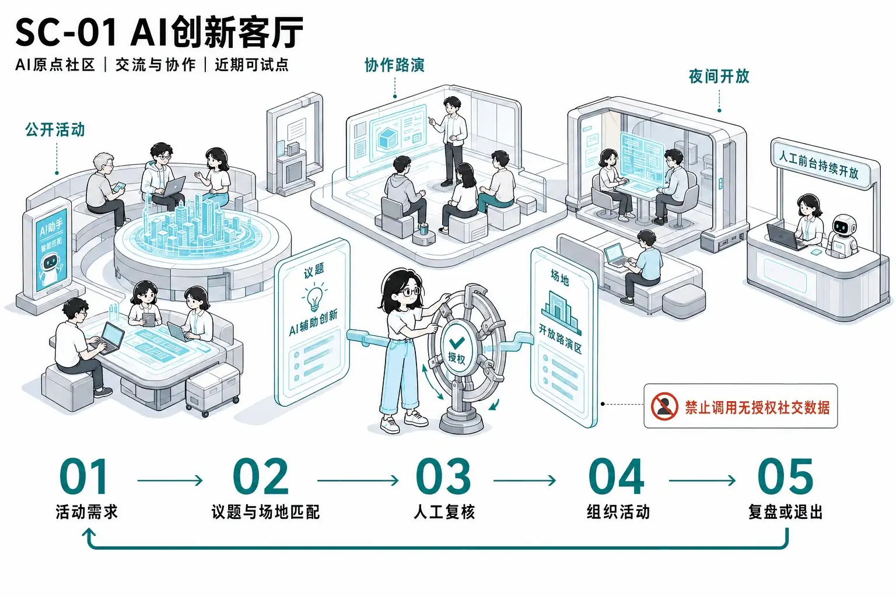
图6-3｜SC-01 AI创新客厅。本图为 AI 辅助生成的方案场景卡，仅作概念表达，非现状实景、已建成项目、批准项目或实际运行证明。
以公开活动目录、参与者主动提交的需求和场地可用信息为输入，不调用无授权社交数据。活动发布与场地分配由运营人员确认；园区运营方、科研机构和专业活动机构为建议主体。推荐失效时转人工排期，退出后关闭接口、处置到期报名数据并恢复普通共享空间。
6.3.2 SC-02 AI教育与科研协作站
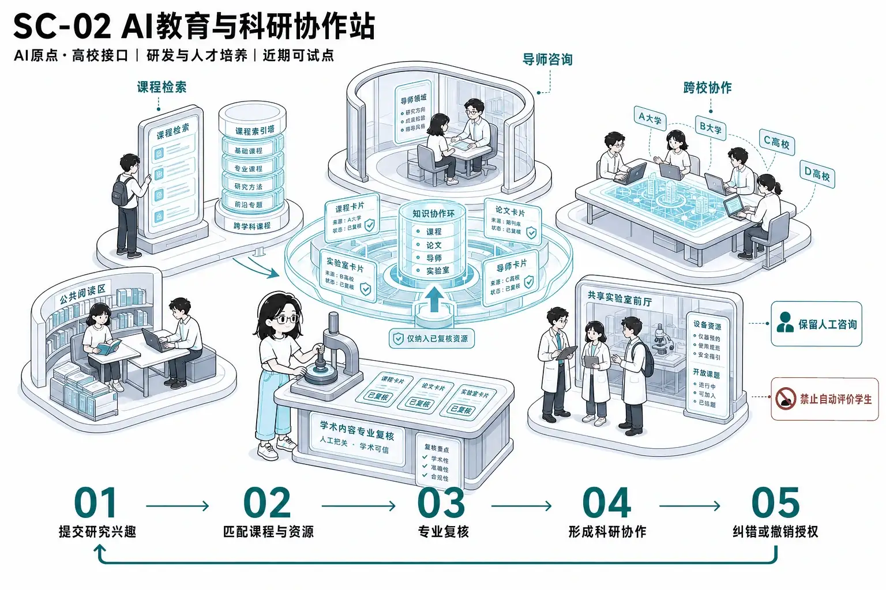
图6-4｜SC-02 AI教育与科研协作站。本图为 AI 辅助生成的方案场景卡，仅作概念表达，非现状实景、已建成项目、批准项目或实际运行证明。
只使用经授权的课程、导师、实验室和科研资源目录，不采集个体学习轨迹，不自动评价学生。教师或专业人员复核学术内容，高校、科研机构和公共服务平台为建议主体；检索异常时只展示核验目录，退出后撤销授权并恢复人工咨询。
6.3.3 SC-03 人机协作与原型验证工坊
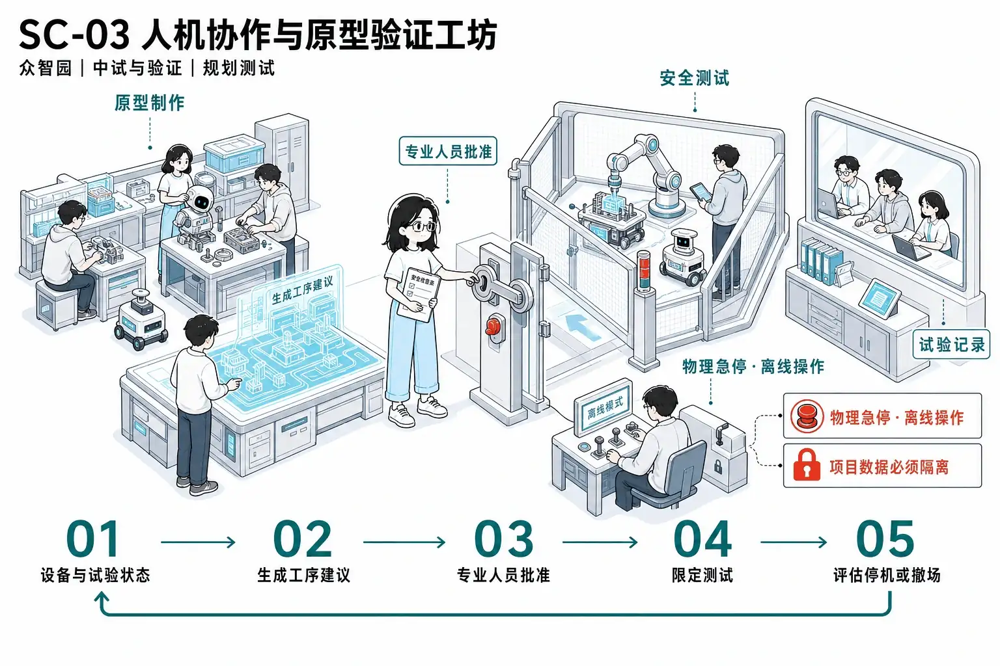
图6-5｜SC-03 人机协作与原型验证工坊。本图为 AI 辅助生成的方案场景卡，仅作概念表达，非现状实景、已建成项目、批准项目或实际运行证明。
设备状态、工序和项目数据仅在隔离环境内按授权使用。专业人员批准试验并现场值守，设置物理急停、离线操作和项目数据隔离；中试平台、研发团队和第三方安全评估机构为建议主体。异常立即停机，退出时撤场并恢复通用空间。
6.3.4 SC-04 公共算力服务窗口
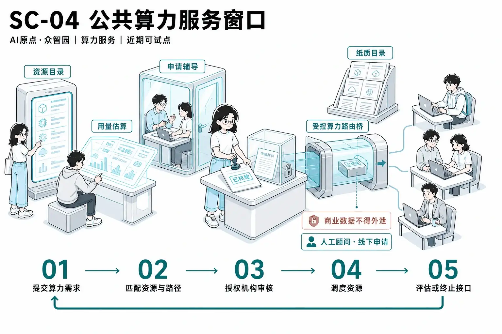
图6-6｜SC-04 公共算力服务窗口。本图为 AI 辅助生成的方案场景卡，仅作概念表达，非现状实景、已建成项目、批准项目或实际运行证明。
输入限于申请者主动提交的需求、公开服务目录和授权审核材料，商业数据不得外泄。资源审批和合同由授权机构完成，公共算力服务机构与园区服务平台为建议主体；系统失效时转人工目录与线下申请，退出时终止供应接口并依法处置材料。
6.3.5 SC-05 社区健康协同服务站
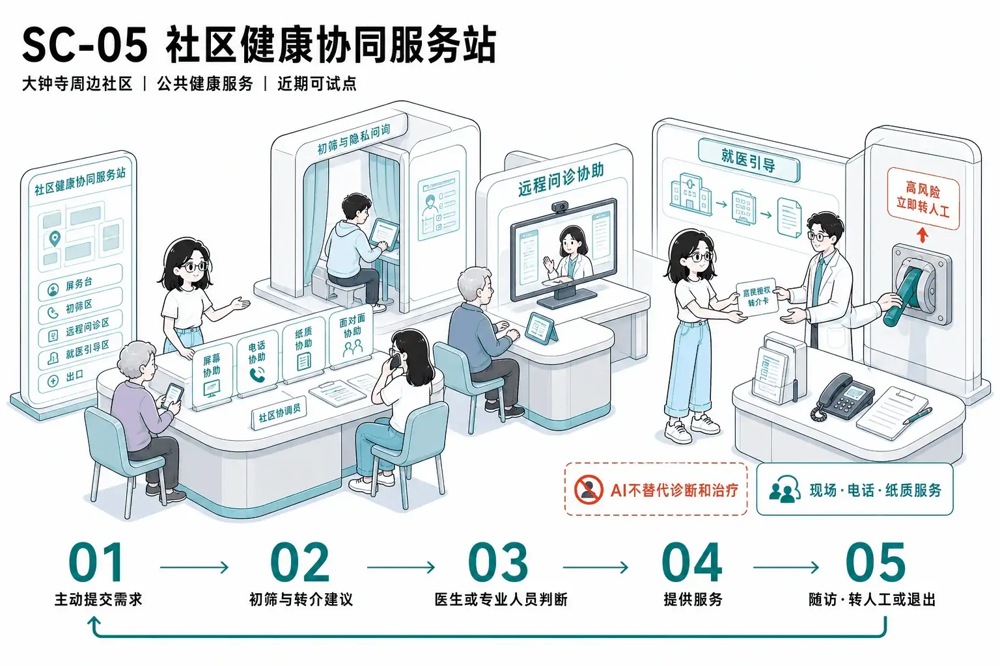
图6-7｜SC-05 社区健康协同服务站。本图为 AI 辅助生成的方案场景卡，仅作概念表达，非现状实景、已建成项目、批准项目或实际运行证明。
健康信息由使用者主动提供并按医疗责任边界处理，AI只辅助初筛、解释和转介，不作诊断。医生或专业人员完成判断，基层医疗卫生机构与社区服务机构为建议主体；高风险立即转人工，系统退出不影响原有现场、电话和纸质服务。
6.3.6 SC-06 AI社区服务工作站
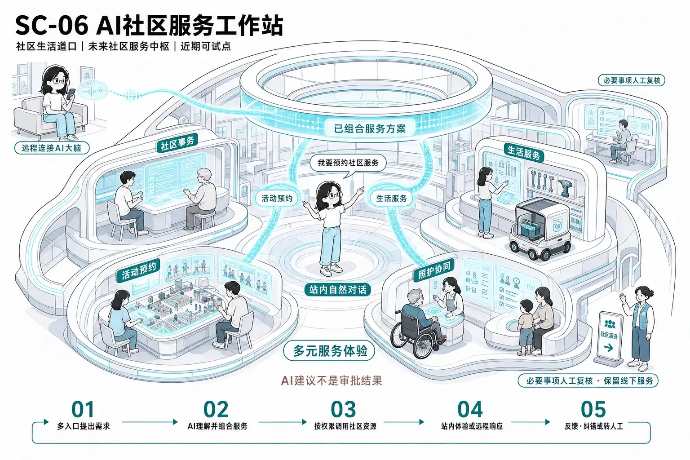
图6-8｜SC-06 AI社区服务工作站。本图为 AI 辅助生成的方案场景卡，仅作概念表达，非现状实景、已建成项目、批准项目或实际运行证明。
只调用公开或经授权的政策、办事和社区资源目录，不把建议当作审批结果。街道、社区及其授权服务机构为建议主体，必要事项进入人工受理；信息库异常时停止自动答复并转人工，退出后保留原办事流程和线下服务。
6.3.7 SC-07 四道口智慧交通协同测试
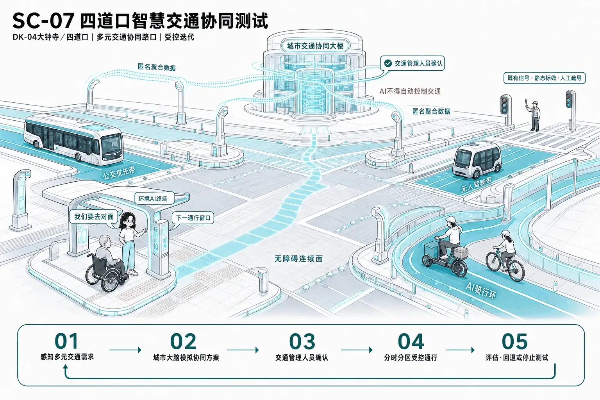
图6-9｜SC-07 四道口智慧交通协同测试。本图为 AI 辅助生成的方案场景卡，仅作概念表达，非现状实景、已建成项目、批准项目或实际运行证明。
测试只使用满足用途限定的交通状态和匿名聚合需求，不以个人身份或轨迹作为控制条件。AI只模拟方案，不直接控制交通；交通管理人员确认后才能分时分区受控执行。数据、模型或通信异常时回退既有配时和人工疏导，测试终止后停止新增采集并保留必要审计记录。空间数据
6.3.8 SC-08 小月河具身智能公共空间测试
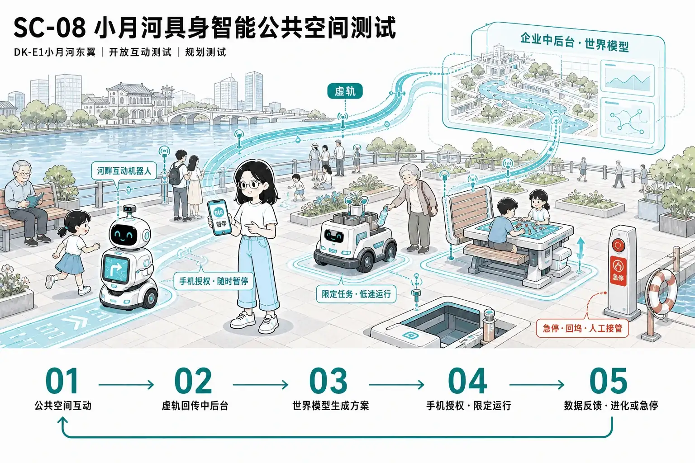
图6-10｜SC-08 小月河具身智能公共空间测试。本图为 AI 辅助生成的方案场景卡，仅作概念表达，非现状实景、已建成项目、批准项目或实际运行证明。
公众互动和设备状态只在公告范围、限定路线和测试期限内采集。测试员通过后台或移动端授权、暂停和急停，现场保留低速、回坞与人工接管；测试平台、研发单位和第三方评估机构为建议主体。越界、失联或安全事件触发停机，退出时撤离设备、处置数据并恢复公共空间。
6.3.9 SC-09 小月河生态感知与滨水预警站
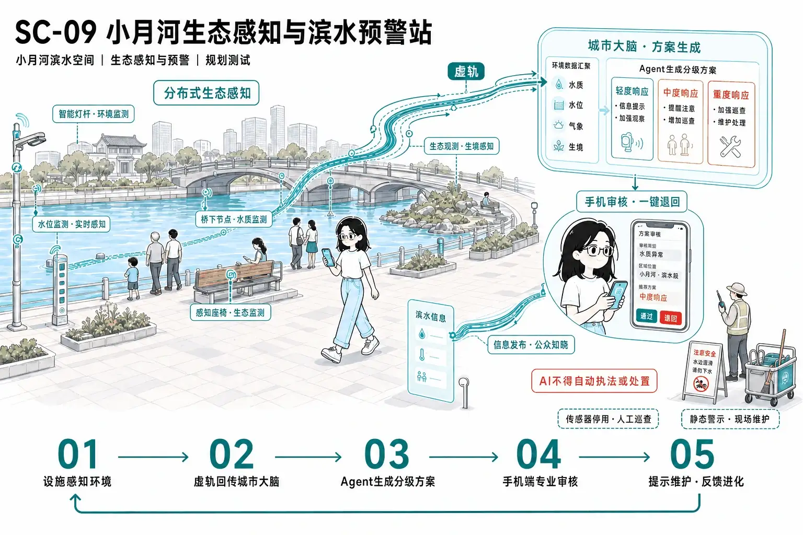
图6-11｜SC-09 小月河生态感知与滨水预警站。本图为 AI 辅助生成的方案场景卡，仅作概念表达，非现状实景、已建成项目、批准项目或实际运行证明。
只采集环境与设施运行信息，默认不识别个人。Agent生成分级建议后由河道、园林或防汛专业人员审核，AI不得自动执法或处置；管理主体和空间运营方职责待确认。传感器异常时停用并转人工巡查、静态警示和现场维护。空间数据
6.3.10 SC-10 京张铁路记忆导览
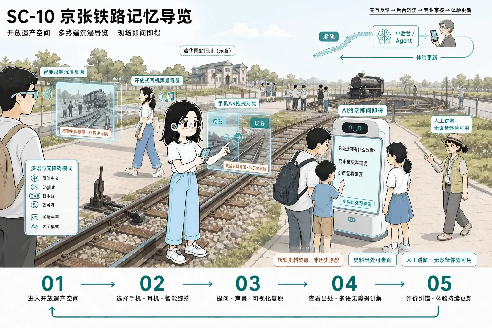
图6-12｜SC-10 京张铁路记忆导览。本图为 AI 辅助生成的方案场景卡，仅作概念表达，非现状实景、已建成项目、批准项目或实际运行证明。
只使用来源明确、可公开展示并经文博或档案专业人员审核的史料；AI复原必须标注“核验史料复原·非历史原貌”。文博／文化机构和公园运营方为建议主体，保留实体标识、人工讲解和无设备体验；内容未核验时只显示静态导览，争议内容可更正或撤下。空间数据
6.3.11 SC-11 中关村创新口述史共创站
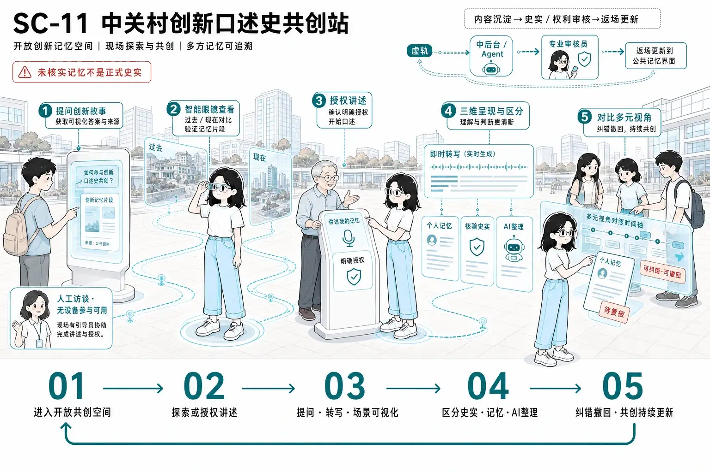
图6-13｜SC-11 中关村创新口述史共创站。本图为 AI 辅助生成的方案场景卡，仅作概念表达，非现状实景、已建成项目、批准项目或实际运行证明。
讲述、肖像和原始材料须获得明确授权，个人记忆、核验史实和AI整理分层展示。档案／文博机构、高校、公共文化机构与社区代表为建议主体；史实和权利经人工复核，提供者可纠错或撤回，系统退出后只保留依法保存且经核验的材料。
6.3.12 SC-12 AI新文化公共议事厅
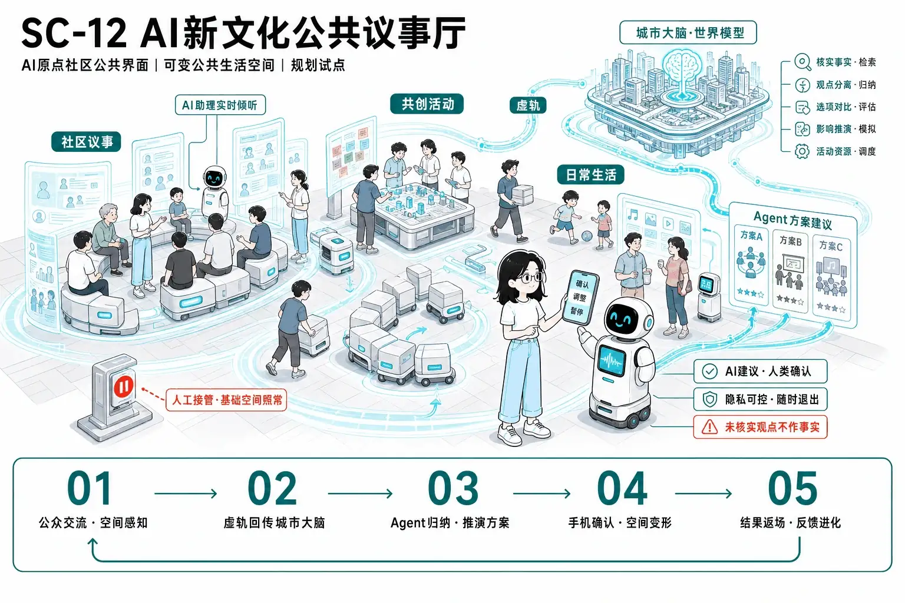
图6-14｜SC-12 AI新文化公共议事厅。本图为 AI 辅助生成的方案场景卡，仅作概念表达，非现状实景、已建成项目、批准项目或实际运行证明。
AI只核验公开事实、归纳已获授权的观点并提供多套方案，不自动形成公共共识。参与者、专业人员和社区代表通过自然对话或移动端确认、调整、暂停与接管；原始发言和AI摘要分开。参与者可退出，设施失效时空间退化为可独立使用的普通开放公共空间。
上述十二张图是用户确认的方案场景表达，不是现场照片、已建成项目、法定规划图或已获批准的部署证明。每张图的生成与权利记录由 sources.json 和版权声明承接。来源
6.4 三个AI产业测试验证场景
三个测试场景采用“封闭或内部沙盒—限定公共开放—第三方评估—扩展、限缩或退出”的共同路径。测试边界、数据权限、安全责任和退出复原未确认前，不进入公众开放阶段，也不得将测试建议写成已批准运营。标准 来源
表6-3｜三类AI产业测试验证场景
| 测试编号 | TEST-01 人机协作与原型验证 | TEST-02 四道口交通协同 | TEST-03 小月河具身智能公共空间 |
|---|---|---|---|
| 对应场景／地点 | SC-03；众智园限定中试界面 | SC-07；DK-04四道口 | SC-08；E1小月河东翼 |
| 测试边界 | 预约项目、隔离空间、限定设备与时段 | 指定路口、指定时段、既有方案可回退 | 封闭测试—半开放观察—公众体验分级开放 |
| 主体与安全控制 | 中试平台＋研发团队＋第三方评估；项目数据隔离、值守、物理急停 | 交通管理主体＋运营方；匿名聚合、仿真先行、人员确认 | 测试平台＋研发单位＋第三方评估；限速、围界、急停、回坞 |
| 评价指标 | 安全事件、人工干预、任务完成、数据越界、空间恢复 | 安全、通行、公平、人工接管、回退效果 | 越界、失联、人工接管、公众影响、设备撤离与空间复原 |
| 扩展条件 | 安全与数据审查通过，试验可复现 | 管理主体确认且未损害弱势交通参与者 | 责任、保险、数据和公众告知通过评估 |
| 退出条件 | 停止接口、处置授权数据、设备撤场、空间恢复 | 回退既有方案、停止新增采集、封存必要记录 | 停机撤离、处置数据、设施复原、公开测试结论 |
6.5 场景空间布局、地标与公共体验路径
场景沿“一轴三区两翼、多道口”组织：京张遗址公园连接文化体验，三处重点区承接研发、中试和应用，两翼提供专业服务与公共验证，道口提供日常进入界面。公共空间、交通和绿色界面来自低置信度方案模型，仅用于本轮场景寻址，后续须随正式边界、权属、文保、蓝绿和交通条件统一复核。空间数据 空间数据 来源
三处“AI朝圣地标”不以巨构或网红装置为目标，而以可核验贡献、公众参与和可撤回更新形成长期认知节点：
表6-4｜三处AI朝圣地标与荣誉节点
| ID | 节点与空间载体 | 公共价值与运营机制 | 边界 |
|---|---|---|---|
| LM-01 | 众智园“AI共试灯塔”（工作名）；共享中试平台、展示界面与花园型公共空间 | 展示可核验的模型、终端、具身设备测试及失败教训；由中试运营、专业安全评估和公众代表定期更新 | 生产与公众区物理隔离，不展示未授权项目，不把测试等同认证 |
| LM-02 | AI原点“开源共创星图”（工作名）；人才驿站、创新记忆和公共议事空间 | 展示开源、科研协作、公益服务和可核验纠错记录；公开提名、证据核验、权利确认、多方复核 | 不按付费或流量排名，个人贡献须授权，事实／记忆／AI整理分层 |
| LM-03 | 大钟寺“古今共鸣门户”（工作名）；文化先导界面、双智体验段与站点入口 | 并置可核验历史、当代AI应用与公共生活；由文化、运营、专业人员和社区代表分层审核 | 文保和建控条件未核实前不提出新建结论，跨环路工程由专业团队深化 |
三处节点共用“公开提名—证据核验—权利确认—多方复核—限期展示—年度重审—修订／撤下”荣誉机制，广告、冠名和赞助信息与公共荣誉分区呈现。
图6-15｜众智园“AI共试灯塔”场景效果图。对应LM-01与Z-01，以透明共享中试平台、公众观察界面和花园型公共空间表现模型、终端与具身设备的受控测试及成果展示；本图为用户提供的AI辅助生成概念效果图，非现状实景、已建成项目、测试认证或工程设计依据，生产与公众区的安全分隔仍须专业深化。来源
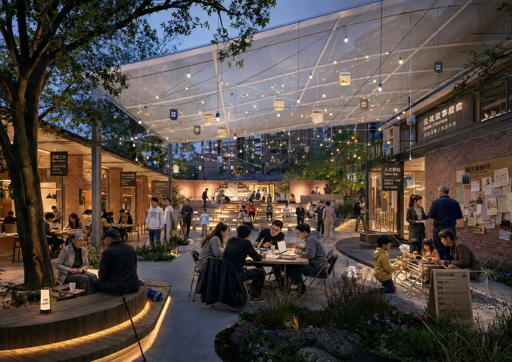
图6-16｜AI原点“开源共创星图”场景效果图。对应LM-02与Y-01／Y-04，以人才驿站、开放工坊、公共议事庭院和可更新的贡献星图表现开发者、学生与居民共同参与的开源协作、创新记忆和公共议题讨论；本图为用户提供的AI辅助生成概念效果图，非现状实景、已建成项目或确定运营安排，贡献内容仍须经过公开提名、证据核验、权利确认和多方复核。来源
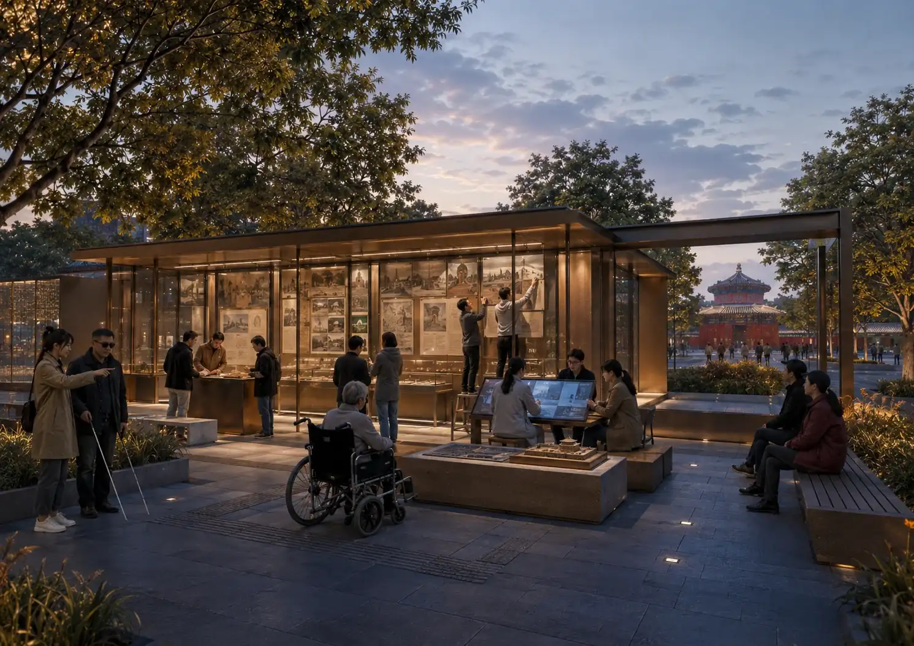
图6-17｜大钟寺“古今共鸣门户”场景效果图。对应LM-03与D-03／D-04，以轻量可逆公共展廊、历史档案、无障碍服务和人工审核场景并置可核验历史、当代AI应用与社区公共生活；本图为用户提供的AI辅助生成概念效果图，非现状实景、文物复原、已建成项目或批准建设依据，展陈内容、文保建控条件及具体落位仍须由文化、文博、空间运营和专业团队共同复核。来源
公共空间组件采用可组合、可断开、可恢复的方式承接场景：
表6-5｜AI公共空间组件库
| 组件 | 功能与AI接口 | 人工／非数字接口与部署边界 |
|---|---|---|
| CP-01 可变公共服务岛 | 多语咨询、活动和空间调度 | 人工巡游、实体公告；关闭终端后仍是普通家具 |
| CP-02 轻量交互幕／定向声景 | 导览、来源查询、荣誉展示和讨论 | 实体标识、纸质路线、人工讲解；控制夜间光声影响 |
| CP-03 机器人模块家具 | 空间编排、低速协同和无障碍协助 | 手动锁定、物理急停、人工移动；保证防夹和通行净宽 |
| CP-04 环境感知与虚轨连接件 | 环境、设备和匿名人流按用途回传 | 现场状态牌、人工读数；默认不识别个人，关闭状态可见 |
| CP-05 测试安全边界包 | 状态、越界告警和日志回传 | 人工值守、实体围界和口头告知；失联、越界或事故即停止 |
| CP-06 非数字与荣誉展陈包 | 数字记录的可选查询 | 完全离线可读；不展示敏感或未经核验信息 |
两条公众可感知路径分别为“京张文化与AI生活路径”和“小月河测试体验路径”。前者串联大钟寺门户、铁路记忆导览、AI原点共创空间、众智园中试观察与沿线生活道口；后者依次进入东翼展示入口、具身智能观察界面、限定测试环、生态感知节点和滨水步道，测试区与公众路径保持物理和信息双重分界。
6.6 场景—空间—运营与长期活动
所有场景采用“登记—运行—评估—迭代—退出”的生命周期管理。空间管理、业务决策、数据处理、技术服务、安全复核和投诉处理必须分别落实责任主体；目前表述均为建议主体类型，不能据此推定政府授权、合同关系、预算或采购安排。来源
年度运营以“京张未来开轨季｜Jing-Zhang Future Tracks”为活动子品牌，不替代一带总品牌，也不表述为已经确定的政府活动。其运行节律包括：
表6-6｜京张未来开轨季年度运营机制
| 层级 | 主要活动与空间 | 建议主体／触发条件 | 评估与退出 |
|---|---|---|---|
| 常态开放 | AI道口开放日、场景预约、导览、线下咨询、小型讲堂；SC-01—SC-12已确认公共界面 | 空间运营＋社区／园区服务＋场景专业方；测试项另经安全门 | 检查可达性、投诉、人工接管与维护负担；无法维护则退化为普通公共空间 |
| 月度共创 | 开发者问题池、社区议题、开源维护、口述史征集；AI原点与沿线社区 | 开发者社区＋高校＋公共文化／社区组织；资料与权利先审 | 无有效问题、维护者或授权时暂停，不以一次黑客松替代长期维护 |
| 季度联动 | 春季开源共创、夏季测试季、秋季文化与智能原生消费联动 | 相应园区、测试平台、文化和商业运营主体；责任、数据、安全、保险通过后启动 | 数据越界、安全事件、公众影响或权利问题触发限缩、暂停或退出 |
| 年度复盘 | 发布运行、安全、公平、维护、异议和退出记录，重审荣誉展示 | 区级统筹类平台＋专业复核＋第三方评估＋公众代表，具体主体待确认 | 未通过年审的场景限缩、暂停或退出，荣誉项可修订、降级或撤下 |
开发者社区以公开问题池、可核验数据、场景沙盒和维护轮值为核心；场景开放遵循“问题入池—主体登记—数据与安全审核—限定测试—公众告知—第三方评估—扩展或退出”。国际传播提供中英等义资料、开放路线、可复现场景卡和失败／退出记录，把“参与活动—提出问题—组成协作—进入沙盒—专业复核—形成项目候选或开源成果—保持社区关系”作为转化路径，不把参会、注册、投资或落地写成确定结果。标准
6.7 数据治理、人工复核与退出
Agent可以检索公开或授权资料、识别需求模式、生成多套建议、提示风险并记录反馈，但不得代替规划审批、医疗诊断、交通管理、公共服务审批、文博史实审核或公共价值判断。所有空间落地均属于概念建议和可供专业团队深化研究的参考方案。标准
表6-7｜AI场景治理、降级与退出机制
| 治理要求 | 运行规则 | 触发的降级或退出 |
|---|---|---|
| 用途限定与最小采集 | 只收集完成当前服务所必需的数据，说明来源、用途、保存期限和关闭方式 | 用途变化、越权调用或无法说明来源时停止处理 |
| 授权、隐私与可撤回 | 主动授权、分级访问；敏感信息不进入公共展示 | 授权撤回后停止调用并依法处置数据 |
| 人工终审与接管 | 医疗、交通、安全、历史内容、公共服务和公共议题均由明确的人类责任人判断 | 无法确定责任人或无法接管时不开放／立即暂停 |
| 非数字替代 | 保留人工窗口、电话、纸质材料、实体导视、既有控制和无设备体验 | 数字系统失效时切换原有服务，基本公共服务不中断 |
| 公平与反垄断 | 检查年龄、障碍、语言、数字能力和身份差异；公共信息、广告、赞助与推荐分离 | 不公平影响或付费排序无法纠正时限缩或停止场景 |
| 安全事故 | 先停AI动作、启用人工／既有流程、保护人员、保全必要日志并按责任链处置 | 完成根因分析、整改验证和重新授权前不得恢复 |
| 维护与生命周期 | 明确维护人员、故障响应、更新周期、备件、退役和空间复原责任 | 无维护资源、连续故障或设备过期时降级或撤除 |
| 绩效与公众反馈 | 同时评估公共价值、安全、公平、可靠性、人工负担、维护成本、投诉和退出 | 连续不达基线、公共损害超过收益或责任不明时终止 |
第11章再为服务可达、非数字通道、人工接管、投诉、安全事件、系统可用性、维护、供应商集中度、参与者多样性和空间复原时间建立可复算口径；在基线与运行数据取得前，本章不虚构阈值。第10、12章分别承接项目／分期与风险／版权，任何阶段未通过均可回退。
第07章 用地、建筑规模与拆改留方案
7.1 用地组织：稳定底盘与弹性转换
京张遗产与公园构成稳定底盘，29项道口组织贯通，三处重点区分别承担中试、原始创新和应用转化。 图7-1的556个功能角色地块已进入机器可读数据，以九类角色组织总体功能，但不冒充法定图则。来源 空间数据 指标
用地代码依据当前自然资发〔2023〕234号分类子集表达，功能角色按概念性主导用途映射至允许代码。 556个图面地块覆盖当前临时范围约76.69%，未被图面角色地块覆盖的约23.31%仅以4个低置信度兜底分区补齐；合并后完整覆盖范围且无实质缝隙或重叠，能够按代码复算面积与比例。兜底分区不参与图7-1渲染，也不表示新增规划判断；全部几何均不是官方红线、宗地、权属或审批依据。标准 指标
图7-1｜用地与空间结构图。图件解释功能关系、廊道、门户和三层范围传导，不替代法定地块控制。
7.2 当前可复算用地平衡
表7-1｜总体设计范围用地平衡
| 主导功能 | 代码 | 当前方案面积 | 当前方案比例 | 状态边界 |
|---|---|---|---|---|
| 城镇住宅用地 | 0701 | 416.11 ha | 36.21% | 人才生活／弹性复合主导用途及兜底模型 |
| 城镇社区服务设施用地 | 0702 | 71.49 ha | 6.22% | 仅为剩余范围兜底模型，设施规模待核 |
| 公共管理与公共服务用地 | 08 | 8.10 ha | 0.71% | 公共服务主导用途，细类待核 |
| 科研用地 | 0802 | 280.26 ha | 24.39% | 创新研发主导用途及兜底模型 |
| 文化用地 | 0803 | 10.06 ha | 0.88% | 公共服务／弹性复合主导用途 |
| 教育用地 | 0804 | 18.98 ha | 1.65% | 弹性复合主导用途 |
| 医疗卫生用地 | 0806 | 15.66 ha | 1.36% | 公共服务／弹性复合主导用途 |
| 商业用地 | 0901 | 5.63 ha | 0.49% | 商业交流主导用途 |
| 商务金融用地 | 0902 | 128.47 ha | 11.18% | 产业服务／弹性复合主导用途及兜底模型 |
| 其他商业服务业用地 | 0904 | 2.88 ha | 0.25% | 成果转化主导用途 |
| 城镇村道路用地 | 1207 | 1.74 ha | 0.15% | 交通基础设施主导用途 |
| 公园绿地 | 1401 | 189.87 ha | 16.52% | 开放空间／弹性复合主导用途及兜底模型，不等同法定绿地率 |
| 合计 | — | 1149.25 ha | 100.00% | 与当前临时范围同口径 |
上述平衡由land_use.geojson逐类面积汇总并除以site_area_sqm得到，复算结果写入metrics.json。 其中556个图面功能地块与图7-1几何哈希一致，4个兜底分区只负责闭合未分类范围；取得竞赛方认可的宗地或控规图则后，须整体替换并重算，不以当前小数精度制造法定精度。来源 指标 指标
7.3 建筑规模：总体模型与单体事实分层
建筑规模采用总体模型、矢量模型、公开单体事实和待确认法定控制四层口径。 1600万—1800万平方米及平均强度1.3922—1.5662仅用于方案比较；3663个低置信度GABLE对象的95.08万平方米基底和8.272980%覆盖率只是重点片区部分下限，不代表全范围建筑密度。空间数据 指标 指标
腾讯学院路新总部、众智园五塔楼和大钟寺字节自持空间均按具名项目事实引用，只约束对应项目，不外推为片区或全范围指标。 其中，腾讯学院路新总部约46万平方米、控高80米、绿地率33.12%，众智园五塔楼约23.8万平方米，大钟寺字节自持空间超过74万平方米。法定总建筑量、分地块容积率、高度、建筑密度、退线和建筑控制线在官方条件缺失时继续保持未知。来源 指标 指标
7.4 拆改留：六类方向与三道前置门
拆改留由单一“保留／拆除”判断调整为六类：保留、修复改造、功能转换、潜在拆除、潜在新建、待确认。 众智园侧重在建／已建创新载体与既有科研园区的适应性利用；AI原点社区侧重高校科研、社区和铁路记忆基底的低扰动更新；大钟寺侧重商业存量转译、零增容品质提升及公开更新案例的审慎核查。现阶段只达到对象／项目组团级方向深度，不将案例线索写成具体地块拆除决定。来源 深度
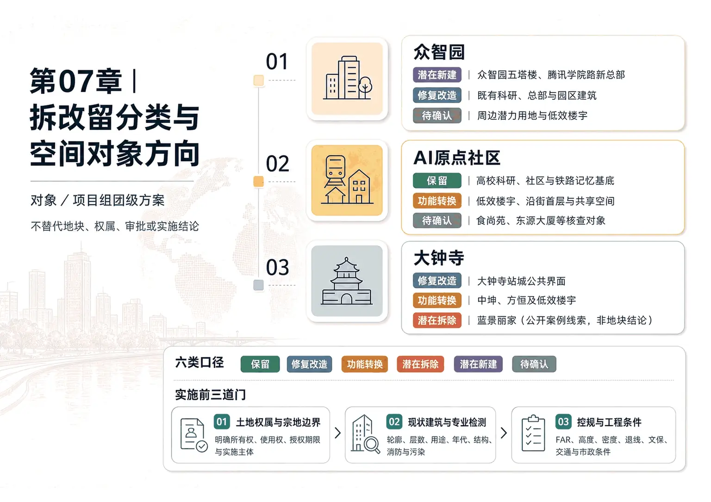
图7-2｜拆改留分类与空间对象方向图。图件明确三处重点区的分类方向、证据边界及实施前置条件；重点区位置和拆改留对象均为方案寻址或待核对象。
地块级或逐栋结论必须同时通过三道门：一是土地权属、宗地边界和实施主体明确；二是建筑轮廓、层数、用途、年代、结构、消防和污染等调查完成；三是容积率、高度、密度、退线、文保、交通和市政条件明确。 任一条件缺失，对象保持“待确认”，不进入批准拆除、新建或投资时序。空间数据
7.5 实施接口与数据替换
近期以既有载体适应性再利用、园区界面开放和公共空间织补为主，中期结合29项道口锚点与重点区项目组团完善中试、资本和认证链路，远期在控规、权属和工程条件齐备后再校准建设规模与拆改留。 当前可复算用地平衡、六类拆改留方向和分期接口共同进入第10章项目清单；任何具名运营主体、合作关系、资金来源和实施承诺仍须独立确认。来源
逐栋建筑清单、宗地权属、法定控规和专业检测仍是从对象／项目组团级方向进入地块实施结论的必要条件。 资料未齐时维持方案建议和待确认状态。
第08章 交通、轨道、市政与公共服务设施
交通、轨道、慢行、停车、市政和公共服务设施均为概念性空间建议。道路与轨道线位、桥隧工程、市政管线容量、客流、噪声和自动驾驶部署等未取得正式资料的事项保持待专业核验，不作工程结论。来源 深度
图8-1｜交通慢行、轨道接驳、蓝绿公共空间与AI场景节点复合系统。综合表达交通慢行、轨道接驳、蓝绿公共空间与 AI 场景节点关系；线位、容量、权属和工程条件仍待正式资料与专业校核。来源
8.1 交通底盘与可达性判断
交通与蓝绿复合底盘已基本成型。 京张高铁地下穿行，地面约9公里、53公顷遗址公园以“三道一绿”衔接回龙观自行车专用路；13号线与昌平线南延纵贯两侧，15号线横贯北部，清河站构成北部门户。纵向慢行蓝绿已有主骨架，横向跨环路、轨道与围墙的联系仍是核心矛盾。来源
南北是连续性问题，东西是可达性问题。 京张公园与双轨道走廊已形成南北主骨架，但入口、无障碍与跨环界面仍待贯通；东西缝合落在跨三至五环、清河、北护城河和学院南路等九廊。来源 深度
施工叠加期按风险情景预留。 13号线扩能提升、小月河滨水工程和清河滨水慢行系统的“实施中／在建”状态、站点范围与日期目前仅为专题研究汇编线索，尚未在本包登记可逐项复核的直达官方来源；因此本方案只保留「施工期」与「改造后」双状态适配，不把2027-12-28等日期写成已核定工期。来源
三区交通角色分工：众智园（DK-07 学知园口）为北部门户枢纽，承担站城融合与对外交通接口；AI 原点社区（DK-05 五道口口）为轨道最密、人车冲突最集中地区，承担多层慢行辐射与站点一体化；大钟寺（DK-04 四道口口）为「四象限缝合＋双智先行区」，承担跨三环缝合与 AI 交通治理试点 来源。
统筹衔接（两翼交通接口）：统筹研究范围西翼（W1 中关村）与东翼（E1 小月河）不属于总体结构，仅作为统筹背景翼区——W1 沿中关村大街方向承接横向慢行补网与三山五园绿道东端接口，E1 依托小月河滨水步道（在建）承接滨水慢行与具身智能测试场景的交通前置条件 来源。
8.2 步行、自行车与轨道接驳策略
8.2.1 步行：主轴连续＋横缝缝合＋全链条无障碍
- 主轴步行：依托京张公园「三道一绿」9 公里步行与慢跑系统作为南北步行主轴 来源；公园规划 46 个出入口，公园—街区界面（出入口密度、跨路连接、无障碍入口）是界面贯入的核心议题，逐口踏勘与无障碍审计列为后续专业核查。
- 东西缝合：以「九廊」横向廊道组织东西步行联系。现状断点类型包括快速路横切（北三环大钟寺段、北四环跨四环桥、北五环箭亭桥—清河）、轨道高架与站区（13 号线沿线施工中）、校园／园区围墙、河道管理（小月河施工中、清河行洪封闭）。缝合动作以节点组织而非全线打通：跨三环缝合对应大钟寺四象限，跨四环缝合依托已建落日客厅桥，跨五环缝合结合五环区域一体化规划研究提出跨环慢行方案，均保留「概念建议、待专业核验」状态 来源。
- 无障碍底线：《无障碍环境建设法》要求设施「五同步」且与周边有效衔接贯通 标准；现状大钟寺站两方向站台互不连通，站外全链条无障碍（入口—过街—坡道—休息—目的地）尚无完整证据。站外最后 300—500 米无障碍连续联系作为设计建议和核查门，由专业无障碍审计逐条确认，不预设达标结论 来源。
8.2.2 自行车：骑行骨架＋B+R 换乘
- 骑行骨架：回龙观自行车专用路南展二期（北四环—西直门约 5.5 公里）与京张公园共享铁路遗址廊道，是骑行网络的骨架性官方承诺；四环路海淀段 17.5 公里慢行已贯通 来源。
- B+R 换乘：大钟寺、知春路站已规划自行车停车场（约 800 位，规划口径），「轨道＋骑行」组合场景有依据；泊位盘点与实施条件按轨道改造进度核查。
- 非机动车停放：重点站区（大钟寺、五道口、知春路）与慢行主轴的衔接界面同步组织有序停放，与停车策略联动（见 8.3）；不对停车泊位配建指标填经验值 来源。
8.2.3 轨道接驳：扩能改造双状态＋站城一体化
- 双状态设计：13 号线扩能改造施工期（至约 2027 年底）与改造后（8B 编组扩编）两个状态分别预设接驳组织：施工期保留临时慢行通道与站口可达，改造后落实扩容接驳与站城界面；近期试点项目（见实施分期）与施工叠加期兼容，站口临时慢行组织优先保障 来源。
- 站城一体化：学知园站（DK-07）与园区、腾讯地块一体化；五道口站（DK-05）与清华东路西口站组织校城开放道口；大钟寺站（DK-04，12／13 号线换乘节点）组织四象限步行缝合与跨北三环慢行联系。一体化内容限于空间组织原则（站点出入口与主轴慢行直接衔接、站点周边公共空间连续性、非机动车停放有序、站点与重点地块连通水平）；大钟寺四象限缝合属跨轨道＋跨三环工程，实施时序见长期演化阶段，本章仅给空间组织方向；站点边界、出入口位置、客流与工程方案未取得官方资料，不给出站改造方案与客流测算 来源。
- 四道口「双智」试点：约1.2km²、13个路口、约9公里道路及运营主体等信息目前为专题研究汇编线索，待补直达官方来源后核定；本方案仅把它作为局部信控案例候选，不据此主张已常态化运行或全场地交通治理能力。扩展为「信控→环境反馈→公共空间分时管理」属于设计建议，须以数据授权、人工复核、非数字兜底与退出机制为前提。来源
8.3 道路层级、微循环与停车策略
道路层级：概念性识别，不做工程结论。 北三环、北四环、北五环三条城市快速路横切场地，是区域机动效率与场地慢行连续的结构性矛盾来源；知春路、成府路、清华东路、学院路等构成主要地面干路骨架（九廊沿线）。不绘制道路红线、不给出断面、不核定线位；道路层级作为空间组织的背景层进入 roads.geojson，仅表达概念层级与接驳关系 来源 深度。
道路微循环组织。 在概念层级基础上，按「主干路—次支路—园区内部路—轨道站点」组织微循环，强调轨道站点的最后一公里接驳（概念建议，不涉及道路线位、红线和断面）来源：
- 众智园（DK-07）：以学知园站为锚，园区内部路与清河站、五环对外接口衔接，组织站—园区—公园北段的接驳环；腾讯总部地块与轨道微中心一体化连通。
- AI 原点社区（DK-05）：以五道口站、知春路站为锚，次支路与街区内部路织密，组织站—校园—园区—社区的步行与骑行短链，补站外最后 300 米无障碍链。
- 大钟寺（DK-04）：以大钟寺站为锚，四象限与跨三环缝合组织步行连通，存量街区内部路承担慢行与配送组织。
停车组织分类策略。 按机动车、非机动车、共享单车、配送装卸四类组织（概念建议，不虚构泊位数量、配建指标与供需测算），并与轨道站点、慢行系统、公共服务设施衔接 来源：
表8-1｜停车组织分类策略
| 类型 | 组织策略 |
|---|---|
| 机动车 | 以既有停车设施与轨道站点换乘衔接为主；更新项目内按「公共界面优先」原则组织，不新增大规模地面停车场；共享停车、分时停车作为存量优化方向 |
| 非机动车 | 重点站区（大钟寺、五道口、知春路）与慢行主轴衔接界面有序停放，纳入站城一体化设计；B+R 换乘（大钟寺、知春路站约 800 位规划口径） |
| 共享单车 | 在地铁站、公园出入口、园区接口设置潮汐式停放点，与慢行和公服衔接，不占用主轴公共空间 |
| 配送装卸 | 在园区、商业、社区界面设置短时装卸与配送停靠点（概念建议），与慢行和公共空间织补协调，不阻断无障碍连续通行 |
活动高峰调节：大型活动时段启用分时停车与临时交通组织，与慢行优先、应急保障联动；停车与物业是 12345 接诉即办高频问题类型首位，既有居住与园区的停车缺口纳入更新项目清单。停车配建指标和供需缺口暂不设定量值 来源 来源。
8.4 市政与公共服务设施策略
8.4.1 市政底线与水务约束
- 行洪功能为刚性前置：清河与小月河的分洪、泄洪功能决定任何方案不得压缩河道行洪断面；20年一遇／50年一遇标准、6.83亿元估算投资和在建状态仍属于专题汇编线索，待直达官方来源与专业水务资料复核，不能作为已核定工程结论。来源
- 海绵城市有明确标准：新建筑海绵控制率不低于 85%、绿地不低于 90%（官方口径）；京张公园一期已落地雨水花园、生态植草沟、蓄水模块等海绵设施（雨水不外排），为分散式海绵设施提供场地内已验证先例 来源。
- 轨道安全保护区是直接合规约束：13 号线高架段轨道结构外边线外侧 30 米内为安全保护区，保护区内新建改建、敷设管线、挖掘等作业须制定安全防护与监测方案、征得运营单位同意并依法办理行政许可——对公园沿线桥下空间功能植入与高架改造节点设计构成直接约束 来源。
- 声屏障先例：京张高铁封闭式声屏障 2.43 公里（国内首个混凝土框架结构，清华段、西二旗段位于场地内），为降噪处理提供已验证工程先例；不把「已有先例」写成「全线噪声已达标」 来源。
- 部门分工法定框架：按《海淀区城市更新导则（2025 年版）》，区城管委（区交通委）管市容环境整治、区管道路养护、地下管线更新、停车与慢行交通；区水务局管供排水设施、排水防涝、滨水空间品质提升与海绵城市——市政接口须绑定主管部门，不虚构责任主体 来源。
8.4.2 公共服务设施：四类分层＋时间节律适配
制度供给强、空间分布不均是本章公服判断的现状基础：医疗有北医三院、北大口腔两大国家级锚点与社区卫生服务中心全覆盖；养老有驿站 160 家、助餐点 293 家、「海淀食堂」56 家；便民生活圈 92 个（全市第二）——但北部众智园片区文化商业薄弱、站点周边场馆型体育供给不足，中部依赖轨道与公园底盘 来源。
本章按四类设施分层组织配置逻辑（分层结构承接片区详细设计已建立的框架）：
表8-2｜公共服务设施分层配置
| 设施类型 | 分层建议 | 落位逻辑 |
|---|---|---|
| AI 产业服务设施 | 带级（每类一处）／区级（每重点区一处）／街区级（沿主轴分布） | 带级承担测试验证与标准展示，落位于大钟寺门户；区级承担共性技术服务与中试，落位于各区留白组团；街区级承担设备共享与小试，落位于场景公共界面后场 来源 |
| 创新服务平台设施 | 按创新链环节分层（策源—中试—应用） | 原点社区配策源与转化服务、众智园配中试与产业展示、大钟寺配应用与市场服务，避免三区重复建设 |
| 人才生活服务设施 | 按时间节律差异化配置 | 研究者与开发者需要夜间与周末可达的餐饮、健身与第三空间；青年人才需要可负担居住与社交学习的紧邻；老年人与低数字能力人群需要步行可达的医疗、养老与社区服务且不因更新被挤远——主轴沿线服务界面须支持长时段运营 来源 |
| 新型基础设施 | 四条落位规则（见 8.4.3） | 端侧算力、分布式能源等随研发与场景界面布置 来源 |
夜间与全龄供给：夜校、24小时阅读空间及自发业态构成非消费型夜间供给；更新界面需回应骑手、程序员和科研人员的深夜餐饮、休憩、照明与安全需求。学校、医疗、养老、体育等设施底数未取得完整官方数据，当前只提出分层、服务半径与落位规则，不承诺已批准设施。来源
8.4.3 新型基础设施与传统市政融合
端侧算力与分布式能源等新型基础设施，本章给出四条落位规则（可复核的空间组织原则，不做容量与负荷测算）来源：
1. 靠近使用端：端侧算力价值在于低延迟，集中布置会抵消意义，建议随研发与场景界面分散布置； 2. 可分期扩容：技术代际更替不确定，容量不确定的设施优先利用留白与更新项目内可逆空间承接； 3. 不占用主轴公共界面：京张公园沿线的公共空间连续性优先于设施布置便利性； 4. 与传统设施同址复合：在既有市政设施用地内探索复合布置以减少新增占地。
传统市政与新型基础设施融合接口。 供排水、电力、通信、能源、环卫、消防与应急六大系统与端侧算力、分布式能源的复合载体、分期条件与安全边界（概念建议，不填管线、容量、负荷和工程参数）来源：
表8-3｜传统市政与新型基础设施融合接口
| 市政系统 | 复合载体建议 | 分期条件 | 安全边界 |
|---|---|---|---|
| 供排水 | 与海绵设施、滨水步道复合 | 控规与水务资料到位后 | 不得压缩河道行洪断面 |
| 电力 | 与公共算力亭、端侧算力节点复合 | 电网与容量资料到位后 | 布置于安全保护区之外 |
| 通信 | 与智慧灯杆、导视设施复合 | 通信设施底数到位后 | 不占用主轴公共界面 |
| 能源 | 分布式能源与公共设施同址复合 | 能源负荷测算到位后 | 不进入文保建控地带 |
| 环卫 | 与公共空间组件、服务岛复合 | 环卫设施底数到位后 | 不阻断无障碍连续通行 |
| 消防与应急 | 与公园平灾结合、应急避难场所复合 | 消防与应急评估到位后 | 保证应急通道与疏散条件 |
专业核验：能源负荷、市政容量和地下空间工程可行性尚无官方底数，暂不填值 来源。
8.5 低速机器人／配送试点与安全边界
试点不写成已部署能力。 四道口约1.2km²信控试点及运营主体属于待直达官方来源核验的案例线索。低速机器人、配送与自动驾驶只提出弹性试点路段＋分时交通推演机制，须明确公共价值、数据边界与运营和退出条件。来源
- 试点路段候选：优先选择支路、园区内部路与滨水步道的非主干界面，避开京张公园主轴的步行密集段与 13 号线安全保护区作业范围；具身智能机器人测试的主承接空间为统筹东翼（E1 小月河），按「封闭测试—半开放观察—公众体验」三级递进组织；具体路段须经交管、运营单位与专业交通安全评估批准后确定 来源。
- 分时推演与动态接驳：在经批准的路段内按分时规则组织配送与接驳（避开通勤高峰与大型活动时段）；接驳点位可依据人流热力动态调整，但调整须保留人工复核与安全审核条件，不将动态调度写成已部署能力。
- 安全边界三要素：①划定机器人／配送与步行者的空间分隔与速度限制；②保留人工接管与远程安全员条件，任何场景不得以自动化取代安全终审；③明确非数字兜底（无信号、无设备时维持现状通行）与失效降级机制 来源。
- 数据边界：试点须以「数据授权—人工复核—非数字兜底—退出机制」四件套为前提，符合隐私与数据合规要求（详见风险与合规章节）；不以非公开数据、个人隐私或指定供应商作为必要条件 来源。
8.6 专业核验与待补资料
道路断面、信号配时、停车配建、管线容量、客流与换乘时间、噪声和能源负荷均待专业核验 来源 深度。
现有方案数据：
- 现已形成
ROAD-JZ-AXIS与ROAD-C01—ROAD-C09共9个概念交通要素，包括京张南北慢行主脊、7条道路缝合廊道和1条北护城河慢行联系，总长约23.80 km。线位是临时边界内的低置信度方案模型，不构成道路红线、道路断面、轨道线位或工程可行性结论 空间数据 指标 来源。 - 官方道路红线、轨道与站口、河道蓝线、文保及市政控制几何仍未取得；图中30 m轨道保护区和行洪边界只表达法规与公开资料口径，不作官方控制线 来源。
- 客流、噪声、市政容量、能源负荷和投资不填经验值 指标 来源。
图8-1 交通—蓝绿公共空间复合系统综合表达慢行主脊、横向缝合、轨道接驳、蓝绿公共空间和 AI 场景节点。图中道路线位、桥隧和管线容量不作工程结论 来源。
待核验资料：①13 号线扩能改造各站施工期交通组织与开通时间；②道路红线与断面；③站口与客流快照；④河道蓝线、洪水位与管理规则；⑤管网与积水点；⑥教育、医疗、养老等设施底数；⑦运维责任协议。资料到位后统一更新相关判断和指标 来源。
第09章 蓝绿空间、公共空间与城市风貌
9.0 设计原则与控制边界
历史叙事与空间设计不得突破文保、绿地、蓝线、生态安全和交通安全约束。未确认的保护线、工程安全范围和文物避让范围保持待核验，不作法定控制线；未获批的空间动作均为概念性设计建议。来源 来源 标准
"三代轨"转译为三套可落图的风貌语言：来源
表9-1｜三代轨风貌语言体系
| 三代轨 | 代表片区（DK 锚点） | 蓝绿风貌语言 | 公共空间气质 |
|---|---|---|---|
| 实轨·记忆 | 大钟寺（DK-04 四道口） | 文保底线风貌：铁路遗产、觉生寺文化先导界面、四象限缝合 | 记忆型公共生活 |
| 空轨·生活 | 原点社区（DK-05 五道口） | 首层活力风貌：混合街区、步行连通、活动型场景 | 日常型公共生活 |
| 虚轨·创新 | 众智园（DK-07 学知园口） | 花园园区风貌：创新空间、载体迭代、开放平台 | 创新策源公共生活 |
| 虚轨数据总线（实体化） | 京张遗址公园活力带 | 蓝绿主轴风貌：线性绿道＋遗址叙事＋AI 公共空间 | 连续型公共生活 |
蓝绿与公共空间形成"一脊两带三节点多网络"：一脊为京张遗址公园活力带（即总体"一轴"）；两带为小月河蓝线与清河—八家郊野生态基底；三节点为三个 AI 朝圣地标；多网络为绿道、慢行与文化路径网络。该骨架承接总体"一轴九廊"——清华东路会客厅线、清河廊道、北护城河廊道正是蓝绿横向连接的空间接口。来源。
---
9.1 蓝绿系统与绿地率、公共空间比例
9.1.1 蓝绿网络结构
本方案蓝绿网络全部承接已建成或在建的现状骨架，设计任务是"接入与贯入"而非从零构建：来源 深度
- 一脊：京张遗址公园活力带。 约9km、约53ha、2026年8月全线开放、46处出入口、覆盖70个社区约45万人等数值与状态均保留为专题汇编线索，待补直达官方来源后核定；本方案只确认其作为南北公共空间骨架的设计角色。空间数据
- 两带之一：小月河蓝线。 全河长度、流域面积、治理段6.41km、步道11.4km、绿化11万㎡及2026年建设状态均为专题汇编线索，待直达官方来源核验；其泄洪河道与蓝绿骨架的双重角色要求：亲水开放与场景导入以行洪安全和生态保育为前置条件。来源
- 两带之二：清河—八家郊野生态基底。 清河长度、流域面积、防洪标准、海淀段10.36km在建状态，以及八家郊野公园101.45ha、绿地率约90%和灌溉数据，均为专题汇编线索，待直达官方来源和水务／园林专业资料复核；本方案只据此提出北部生态基底的衔接方向。来源
连续性评价：纵向（京张 9km）已连续；横向（跨三环/四环/五环、公园与街区界面、小月河—清河垂河连接）是主要短板（见 9.4）。海淀区级绿地率 50.35%、人均公园绿地 13.99㎡、500m 服务半径覆盖率 93.21% 为区级口径，不得下推为场地现状；区级绿地集中于四环外，中部（原点社区—大钟寺）是蓝绿相对薄弱地带——蓝绿公平问题有数据支撑，作为公共空间配置的强制性验收项。 来源
9.1.2 绿地率与公共空间比例（三项 formal 核心视觉指标）
表9-2｜绿地率与公共空间比例核心指标
| 指标 | 状态 | 设计建议值 | 公式（EPSG:4548） | 复算触发 |
|---|---|---|---|---|
site_area_sqm | known / low confidence | 11,492,502.430㎡ | polygon_area(site_boundary) | 官方边界替换后重算 |
green_ratio | known / low confidence | 13.505068% | polygon_area(green_space) / polygon_area(site_boundary) | 绿地与官方边界替换后重算 |
public_space_ratio | known / low confidence | 4.368577% | polygon_area(public_space) / polygon_area(site_boundary) | 公共空间与官方边界替换后重算 |
三项指标均由当前 provisional（临时推定）几何在 EPSG:4548 下同边界复算，属于低置信度设计模型值，不是法定面积、法定绿地率或公共权属比例。边界面积按当前几何记录。来源 指标
绿地与公共空间比例与同一边界同源复算；官方边界、绿地或公共空间数据替换后，必须按同一公式统一重算。指标 指标
生态绩效不以绿化覆盖率论达标——新加坡绿地约 40% 中林地仅 16%、升温 2 倍于全球均值，警示"高绿化≠生态安全"；本章生态与降温绩效以真实林地、生物多样性、遮阴与降温效果核算。来源
---
9.2 公共空间策略与层级
9.2.1 公共空间三级层级
表9-3｜公共空间三级层级
| 层级 | 主要空间对象 | 主导风貌语言 | 落图要素 |
|---|---|---|---|
| 区域级 | 京张遗址公园活力带、清河—小月河滨水廊道、八家郊野公园 | 蓝绿主轴风貌 | 连续绿道、滨水步道、生态节点 |
| 片区级 | 众智园／原点社区／大钟寺公共中心 | 对应三代轨风貌 | 朝圣地标、活动节点、首层活化 |
| 街区级 | 首层界面、口袋公园、街角空间、临时活化单元 | 日常活力风貌 | 可渗透边界、无障碍、非数字兜底 |
该体系与总体结构对应：区域级承接"一轴＋清河廊道＋北护城河廊道"蓝绿接口，片区级对应"三区"公共中心，街区级对应九廊沿线街区界面。来源 空间数据 深度
9.2.2 公共空间连续性策略
- 步行与无障碍：以原点社区为示范构建 500m 生活圈步行连通；站外最后 300m 无障碍链以《无障碍环境建设法》"五同步＋有效衔接贯通"为法定底线——单站设施字段不等于站外全链条无障碍（大钟寺站两方向站台互不连通为例证）。来源 标准
- 公园—街区界面：京张公园"无界化"（拆围挡、打通 9 条支路）与两侧地块"有界化"（围墙、门禁）的落差是界面体验主要矛盾；公园开放后第一条 12345 热线即绕行投诉、20 天打通西门解决——"最近路径"优先于景观，界面微更新响应速度直接决定口碑。来源
- 活力靠运营：公共空间活力依赖持续运营（国王十字 163 场/年事件、20% 社区活动）；年度活动机制见第10章。来源
---
9.3 京张遗址公园活力带与 AI 公共空间
京张遗址公园活力带是"一脊"，也是 AI 公共空间的实体载体，由三类组件构成（组件库可转化清单见 9.6.2）：来源
1. AI 公共艺术与荣誉展示组件：动态艺术装置、荣誉柱、排行榜（无为系统驱动，见 9.8）。 2. AI 场景节点组件：生态感知站（东翼延伸）、公共算力亭（公园边缘算力节点）、XR 遗址剧场（铁路记忆馆延伸）。来源 3. 文化导视组件：三代叙事导视系统（见 9.7.2），"AI 讲故事、人类守史实"，历史内容专业机构人工终审。来源
现状基础：公园是场地内唯一完整连续体验序列（46 处出入口→三道一绿→三环门户／落日客厅／京张之环→四道口、清华园站等历史节点→市集、车厢餐厅、桥下泵道→"可听可触可坐的历史"）；一期已落地海绵设施（雨水花园、植草沟、蓄水模块、雨水不外排），二期全程践行海绵理念。来源 主要缺口：北段夜间照明弱、无深夜业态，为夜间最弱中间带；13 号线扩能期间五道口等记忆站区界面面临临时化，其保护进入第10章分期议题。来源
功能补足与标志节点（呼应公告 1.5.2.4 京张遗址公园活力带要求）：沿公园补足停车、体育、创新交往等设施与科技测试、应用展示等特色功能的空间接口（与第08章交通市政、第06章 AI 场景、第10章实施运营接口衔接）；聚焦公园南端（西直门）、北端（箭亭桥）以及上跨环路区域（三环门户、落日客厅）打造标志性城市景观节点，与既有退台、钢廊桥等已建成节点叠加升级，不另设无现实基础的构筑物。来源
---
9.4 东西缝合、南北贯通
9.4.1 东西缝合
问题：纵向 9km 蓝绿慢行已成系统，但跨三环／四环／五环、跨围墙、跨河道的横向联系薄弱——"十字"只有半笔；三环（大钟寺四象限）、四环（落日客厅下方）、五环（箭亭桥—清河）三次环路切割构成工程级硬断点。来源
动作（概念建议，工程条件以第08章交通市政方案为准）：
- 缝合节点即九廊横向连接的组织起点：清华东路会客厅线（京张—小月河—三山五园，在建）、清河廊道（公园北端—清河）、北护城河廊道（公园南端）落实为蓝绿横向连接；跨环路处利用既有桥廊与退台（落日客厅钢廊桥、三环门户退台）组织步行骑行连续性。来源
- 公园慢行断点优化（呼应公告 1.5.2.4）：聚焦公园出入口落地（规划约 46 处，落地待核）、跨环路绕行与高差断点，结合第08章交通方案提出步行骑行绕行系数与接驳优化方向，并保留无障碍与非数字通行通道。来源
- 界面延伸：以公园无界标准反推两侧地块"拆墙透绿"（市级无界公园行动与海淀城市更新导则为政策依据）；学院路约 2000 延长米透栏、清华东路 1200 米护栏拆除为已发生先例。来源
9.4.2 南北贯通
问题：小月河与京张公园为平行纵轴，滨水工程以生态为主、文化内涵未注入，且小月河—京张公园垂河（东西向）路径薄弱，仅学院路会客厅一处明确贯通。来源
动作（概念建议）：
- 蓝绿贯通：小月河向北接清河、向南延展，与京张公园形成"一纵一横"蓝绿网络雏形；滨水设施可逆、可抬升布置，服从行洪安全（小月河护脚 50 年一遇目标、清河 20/50 年标准），不虚构河道断面、蓝线宽度、防洪能力或桥隧参数。来源
- 文化贯通：把"月"（小月河七节点）、"铁路"（京张公园）、"三山五园"（清河十八景）三套独立叙事纳入统一文化路径框架（地方母题—廊道主题—节点故事）。来源
- 片区串联：北部众智园（八家郊野—京张北段）、中部原点社区（京张中段）、南部大钟寺（京张南段—三环门户）沿主轴形成"生态—生活—门户"公共空间序列。来源
---
9.5 大钟寺智能原生消费与商务场景
大钟寺（DK-04，实轨·记忆·门户型）承载智能原生消费与商务场景，明确其与公共空间、步行连通和风险边界的关系：来源
（一）公共空间关系。 以"文化先导→AI 导入"为时序（对标上海西岸），以觉生寺—大钟寺1733—大钟寺站—京张公园南段组织文化—商务—公共界面；觉生寺（全国重点文保，永乐大钟 46.5 吨、铭文 23 万字）为不可移动底线，商务界面退让文保避让范围，避免过度娱乐化与"庄重 vs 商业"调性冲突。来源
（二）步行连通关系。 大钟寺站为 12/13 号线换乘节点，四道口"双智"试点约 1.2km²、13 个路口、约 9km 道路（科学城数投运营）；四象限步行连通度目标 100%（任务书要求），以步行优先重构路口、完善非机动车停放；跨环路、地下连接、信控扩展由第08章交通市政设计深化。来源
（三）风险边界关系。 智能原生消费（自动驾驶接驳、无人零售、智能终端）只作测试或概念场景，不写成已批准运营；保留安全审核、人工接管、非数字兜底和退出条件；不提出企业建筑改造、桥隧、地下空间、道路红线或市政容量结论；字节办公集群员工规模与企业协同不作外推。来源
---
9.6 三个 AI 朝圣地标、公共空间组件库与荣誉展示体系
9.6.1 三个 AI 朝圣地标（不少于 3 个）
表9-4｜三处AI朝圣地标空间表达
| 朝圣地标 | 锚点 | 三代轨语言 | 公共价值 | 空间与体验基础 |
|---|---|---|---|---|
| 众智园 AI 创新朝圣地标 | DK-07 学知园口 | 虚轨·创新 | 中试开放日、公共算力亭、创新荣誉柱，集聚开发者与中小主体 | 花园型园区、东升开放园区界面、八家郊野—京张北段生态底盘（对标埃因霍温共享中试、肯德尔 5% 创新空间） |
| 原点社区 AI 生活朝圣地标 | DK-05 五道口 | 空轨·生活 | 活动型场景、混合街区偶发活力，集聚青年开发者、学生与访客 | "原点 Party Nights"（5 天 2000 余名 AI 青年）证明硬科技活动可烟火化（对标旧金山活动生态×弹性空间×混合街区） |
| 大钟寺 AI 记忆朝圣地标 | DK-04 四道口 | 实轨·记忆 | 铁路记忆馆、XR 遗址剧场、文化先导，集聚文化消费与商务交往 | 觉生寺国保＋永乐大钟、京张公园南段遗存、1733 开放商业（对标国王十字 Knowledge Quarter） |
选址原则：从"叙事最厚处（五道口）＋活动已验证处（原点 Party Nights）＋空间可承载处（公园桥下／站前）"三者交集生长，采取"可讲述、可迁移、可复刻"的轻构筑物策略。来源 每个地标以统一字段表达落地与治理深度（空间载体与概念落位／服务对象／公共价值／运营或维护主体建议／数据与版权边界／人工复核／非数字兜底／失效降级与退出）：
（1）众智园 AI 创新朝圣地标（DK-07，虚轨·创新）。
- 空间载体与概念落位：花园型园区主入口门户节点（东升开放园区界面），紧邻八家郊野—京张北段生态底盘；以轻构筑物（公共算力亭、创新荣誉柱）落位，可迁移、可复刻，不另设无现实基础的建筑。
- 服务对象：开发者、中小创新主体、园区企业与访客。
- 公共价值：中试开放、公共算力普惠、创新荣誉展示，支撑创新生态锚。
- 运营或维护主体建议：园区运营方与公共平台机构联合（概念建议，不指派具体单位）。
- 数据与版权边界：算力使用与荣誉榜单数据公开可溯源；个人信息最小化采集；内容标识与版权归属说明明确。
- 人工复核：荣誉评定与内容发布由人工审议终审，AI 仅作辅助筛选。
- 非数字兜底：无算力或断网时保留线下中试展示与人工服务窗口。
- 失效降级与退出：设施可迁移；运营指标未达或产生争议时暂停展示、启动人工复核与退出预案。
（2）原点社区 AI 生活朝圣地标（DK-05，空轨·生活）。
- 空间载体与概念落位：原点社区街区公共空间（站前广场／街角公园候选），以移动盒子、快闪场地等轻设施落位，期限明确、可到期拆除。
- 服务对象：青年开发者、学生、社区居民与访客。
- 公共价值：活动型场景、混合街区偶发活力；"原点 Party Nights"已验证硬科技活动可烟火化。
- 运营或维护主体建议：社区运营方与商户自投联合（概念建议）。
- 数据与版权边界：活动报名与反馈数据脱敏；影像记录版权明确；不采集非必要个人信息。
- 人工复核：活动内容与安全由人工审核；AI 仅匹配空间与活动资源。
- 非数字兜底：无移动端时保留现场报名、纸质指引与人工服务。
- 失效降级与退出：限时设施到期即拆；活动评价不达标或投诉超标时暂停并评估退出。
（3）大钟寺 AI 记忆朝圣地标（DK-04，实轨·记忆）。
- 空间载体与概念落位：京张公园南段遗存区与觉生寺—大钟寺文化界面，铁路记忆馆与 XR 遗址剧场为候选载体；商务界面退让文保避让范围，觉生寺国保边界不可突破。
- 服务对象：文化消费者、商务交往人群、学生与市民。
- 公共价值：铁路记忆传承、文化先导界面、知识经济与公共文化复合（对标国王十字 Knowledge Quarter）。
- 运营或维护主体建议：文保与公共文化运营机构联合（概念建议）。
- 数据与版权边界：XR／数字内容来源与版权清权；历史素材标注出处；不虚构企业或项目状态。
- 人工复核：历史内容由专业机构人工终审，"AI 讲故事、人类守史实"。
- 非数字兜底：保留实体展陈、人工讲解与纸质导览。
- 失效降级与退出：数字内容争议或设备失效时保留静态展陈；退出时数据归档、空间恢复原状。
9.6.2 公共空间组件库（可转化清单）
表9-5｜公共空间组件库
| 组件类型 | 空间载体 | 服务对象 | 公共价值 | 运营或维护主体建议 | 安全与隐私边界 | 维护与退出条件 | 证据性质 |
|---|---|---|---|---|---|---|---|
| AI 荣誉柱／排行榜 | 京张公园沿线与三地标节点 | 开发者、企业、公众 | 荣誉展示动态更新、创新激励 | 园区运营方＋人工审议委员会 | 数据来源公示、评价规则透明、异议处理通道 | 按年更新、季度维护；指标未达或数据争议时暂停并人工复核，可移除 | 方案建议 |
| 公共算力亭 | 公园边缘与园区门户 | 开发者、中小主体、学生 | 公共算力普惠、共享创新底座 | 园区运营方与算力提供方联合 | 用量脱敏、授权登录、内容标识 | 月度巡检、软件升级；断网或争议时提供本地缓存与人工协助，可迁移 | 研究判断（埃因霍温共享中试） |
| XR 遗址剧场 | 京张公园南段遗存区（文保避让范围外） | 文化消费者、学生 | 遗址活化、沉浸式文化教育 | 文保与公共文化运营机构联合 | 历史素材清权、内容人工终审、限制拍摄 | 季度内容更新、设备维护；版权或史实争议时下线内容、保留实体展陈 | 研究判断（西岸应保尽保） |
| 生态感知站 | 小月河—清河滨水带 | 公众、研究机构、运营方 | 生态监测公开、公众反馈节点 | 生态与市政主管部门 | 数据公开脱敏、不采集个人隐私 | 季度校准、数据审核；数据异常或争议时暂停展示、人工核验 | 研究判断（新加坡生态三闭环） |
| 临时活化单元 | 街角、桥下、站前空间 | 居民、商户、活动组织者 | 日常活力、公共生活织补 | 社区运营方＋商户自投 | 限时许可、安全责任明确、退出条款 | 按活动周期维护；到期即拆、空间恢复原状 | 研究判断（旧金山 Proxy） |
| 三代叙事导视 | 区域—廊道—节点三级 | 公众、访客 | 文化可读、路径引导 | 公共空间管理方联合 | 历史内容人工终审、无障碍信息（盲文／语音） | 按季巡检、内容更新；内容争议时更换信息、保留基础导向功能 | 方案建议 |
| 无障碍与人工服务组件 | 站外 300m 链、公园出入口 | 行动不便者、老年人、数字弱势人群 | 全龄友好、非数字兜底 | 公共空间管理方＋志愿服务 | 符合《无障碍环境建设法》"五同步"、隐私保护 | 定期巡检、应急响应；设施失效时提供人工替代服务 | 官方底线（无障碍法） |
组件库与第06章场景运营、第10章实施机制共用运营主体、维护责任和退出条件。
9.6.3 荣誉展示体系（衔接无为系统）
由"AI 荣誉柱＋年度榜单＋开发者荣誉墙"构成，数据来自第06章场景卡运行与第10章年度活动，更新机制由场景运行、年度活动与人工审议共同触发。公示边界（数据来源、评价规则、更新周期、异议处理）可解释；断网或数据争议时保留静态展示与人工说明；不写成政府榜单、官方排名、已确定运营机制或商业招引承诺。来源 来源
---
9.7 城市风貌指引：京张文化—中关村文化—AI 新文化
9.7.1 三代文化的空间表达
表9-6｜三代文化空间表达与风貌边界
| 文化层 | 叙事重点 | 空间表达方向 | 风貌与合规边界 |
|---|---|---|---|
| 京张文化（实轨） | 1909 年通车史实、詹天佑手迹、"进京赶考"、清华园车站、历史道口地名 | 铁轨肌理、站台记忆、道口对景、遗址公园叙事序列 | 历史事实可追溯；清华园车站（市文保＋市革命文物）、觉生寺（国保）、清河汉城遗址（市文保）保护范围与建控地带待文物部门正式资料核验 |
| 中关村文化（空轨） | 1951 年科学城选址、1980 年陈春先创业、两个"第一" | 高校—科研—产业连续界面、首层创新交往、五道口层积记忆 | 不虚构企业关系、项目状态或共享空间权属；为失败与消逝的记忆留位置 |
| AI 新文化（虚轨） | 中关村论坛、开源生态、开发者社区、街区化日常活动 | AI 公共空间、贡献展示、可变导视、场景反馈 | 数据隐私、人工审议、内容标识、非数字兜底和退出机制；AI 辅助解释不越文保与史实判断边界 |
三代文化"空间耦合为实、精神谱系为设计建构"——不写成既成历史事实，不抹平断裂与争议（如"2016.10.31 老京张停运"本身即值得纪念）。来源
9.7.2 导视、标识与符号系统（区域—廊道—节点三级）
- 三级信息层级：区域级（门户与地标导视：命名＋方向＋距离）、廊道级（沿线连续导视：主题＋进度＋出口提示）、节点级（出入口与设施标识：服务内容＋确认＋无障碍信息）。信息由区域向节点逐级收敛，避免信息过载。来源
- 三代轨色彩与符号：实轨·记忆——铁锈红／沙金，铁轨与站台母题；空轨·生活——青绿／暖木，院落与街巷母题；虚轨·创新——电光蓝／银灰，数据与线路板母题。三套符号均纳入京张沿线"丹韵银律"现代色彩控制区用色论证，不与其冲突。
- 应用载体：铺装、灯杆、站牌、导视屏，以及小程序／AR 导览（概念表达）；无障碍信息以盲文、语音与人工服务兜底。
- 边界："AI 讲故事、人类守史实"，历史内容由专业机构人工终审；导视为概念方向，不写既定设施清单与点位，不构成工程承诺。
9.7.3 城市基调与风貌管控接口
- 总体基调（概念性方向）：沿第04章"智慧但温暖、创新但有根、密集但可步行"，按南北三段气质光谱分区引导——北段（清河—上地—东升）"公园化园区＋野趣"、中段（学院路—五道口—中关村）"学院＋知识×烟火"、南段（大钟寺—西直门）"文商混合＋古韵"，不抹平为单一"科技风"。来源
- 法定管控接口：落实市级总规建筑高度、天际线、色彩、第五立面四要素管控；京张沿线属"丹韵银律"现代色彩控制区；第五立面与"铁路门户"专项控制直接关联本场地；京张街区控规（2026-08 批复，9 街区约 1668.2 公顷，"一带一轴两心多点"）专设"特色风貌与公共空间"章节（无界互融、创新交往活力、三条活力景观带）——本章风貌指引全部落回该法定框架。来源 标准 深度
- 管控引导方向（呼应公告 1.5.2.5，对具备更新潜力的区域）：建筑高度、强度向京张公园与蓝绿边界递减，保障遗产视廊与生活尺度；屋顶与第五立面按"净化、序化、彩化、坡化、绿化、优化"六项要点引导；体量控制以街区界面完整性和街道尺度为约束；色彩按"丹韵银律"现代色彩控制区用色论证。以上均为方向性管控引导，分地块法定指标以控规图则为准，未公开前不得写成法定数值。来源
- 风貌风险：过度统一化、过度娱乐化、叙事断层加深、光环境冲突、高层遮挡西向视廊、色彩失控、AI 地标空心化——逐项纳入第12章风险与第10章设计导则。来源
- 建筑风貌引导边界：建筑体量、高度、屋顶形态、色彩仅提出方向性引导；控规分地块图则未公开前不得写成法定指标（同第04章纪律）。来源
9.7.4 国际传播核心表述（最小中英文）
本章国际传播表述统一映射第03章的“道口新编——京张·并轨／The Re-coded Crossing: Merging Tracks of Jing-Zhang”品牌与命名体系，不重复建立第二套传播体系；国际传播平台接口（中关村论坛等）见第10章。最小双语核心表述：
- 中文：京张铁路百年记忆与中关村创新基因在“道口新编——京张·并轨”中交汇——以蓝绿公共空间为舞台，让 AI 新文化可讲述、可体验、可参与，形成面向世界的中国式现代化城市更新叙事。
- English：The century-old Jing-Zhang Railway memory and Zhongguancun's innovation genes converge in "The Re-coded Crossing: Merging Tracks of Jing-Zhang", where blue-green public space becomes the stage for an AI-native urban culture that is tellable, experiential, and participatory.
---
9.8 有为系统 + 无为系统（可自主发挥）
9.8.1 有为系统（公共底线与风貌约束）
以小月河、京张线性绿道、遗产、生态基底和公共可达等可核验条件建立约束建议：来源
- 生态安全：清河 20/50 年行洪功能、小月河泄洪河道功能（护脚 50 年一遇目标）为刚性底线，不得压缩行洪断面；八家郊野公园与京张公园绿地属性不因方案改变；新建建筑与小区年径流总量控制率 ≥85%、新建改建绿地 ≥90%（海绵控制率，非绿地率）；历史工业用地更新先履行土壤调查程序。
- 文明身份：京张史实、詹天佑手迹、清华园车站三重身份、觉生寺国保、清河汉城遗址、陈春先 1980 年创业史不可改写；AI 文化导览以人工终审为前提。
- 人本与空间正义：公共空间可达、全龄友好、无障碍"五同步"与人工服务并行；蓝绿公平（中部薄弱）为强制性验收项。
- 时间维度：优先轻介入、可逆、可维护、可退出的空间行动；临时设施模块化、可移动，明确期限、安全责任与退出条件。
9.8.2 无为系统（可感知、可迭代的公共空间运行）
以"感知—决策—行动—反馈"闭环支持荣誉展示动态更新、个性化文化导览与动态风貌生成：来源
- 感知：接收公开资料、授权反馈、环境状态（小月河—清河生态感知站候选）与公共活动需求；现状无全域感知网络，AI 介入以四道口双智试点与 12345 接诉即办为现实锚点。
- 决策：在价值锚、文保、生态、安全和权属边界内比较公共空间与风貌方案，机器输出仅作辅助判断，人类保留最终授权。
- 行动与反馈：通过小规模、限时、可逆的导视、活动、展示和空间组件试点（移动盒子、可迁移纪念碑、快闪场地为现状已出现的动态种子），由公众反馈、运营记录、生态维护和人工审议决定扩展、修订或退出。
- 失效降级：系统失效时保留静态导视、人工讲解、纸质材料和常规公共空间使用（非数字兜底为默认配置）。
---
9.9 交通—蓝绿公共空间复合系统图
图9-1｜交通—蓝绿公共空间复合系统。临时边界和概念节点仅用于设计讨论，不作为官方红线、工程线位或审批依据。
图9-1综合表达：① 蓝绿网络（一脊两带）；② 公共空间三级层级与连续性；③ 京张遗址公园活力带；④ 东西缝合、南北贯通方向；⑤ 文化路径与三代叙事导视方向；⑥ 三个 AI 朝圣地标及其公共价值；⑦ 绿地率／公共空间比例的数据状态、来源或 provisional 说明。来源
provisional 边界以低对比虚线和注释表达，设计廊道、公共空间、地标和关键节点采用高对比符号。图纸、GeoJSON 与指标同源；图面不作为法定面积、规划线位或工程可行性依据。来源 来源
---
9.10 待核验事项
1. 当前边界、绿地与公共空间范围已完成同边界复算，精度为低置信度；官方几何到位后统一替换和重算。 2. 清华园车站、觉生寺、清河汉城遗址的保护范围，以及蓝线和工程安全约束，待正式资料核验。 3. 场地级数据缺口：雨洪、热、风、噪声、生态八项核查与树冠、生境、遮阴数据；小月河、清河完工时间与开放规则；两侧地块围墙／出入口／首层界面残余断点普查、夜间人流与照度、噪声实测。 4. 指标复算：当前 green_ratio=13.505068%、public_space_ratio=4.368577% 为 provisional 几何的低置信度设计模型值；官方资料到位后由第11章统一重算。
第10章 更新项目清单、实施政策与分期计划
10.0 实施原则与责任边界
更新项目按证据成熟度触发、按治理成熟度排序，逐项目设置进入、评估和退出条件，不采用脱离前置条件的固定时间表。来源
招商、政策、资金、审批和开发时序均只能作为建议，不得写成既定承诺；具体单位不得被表述为"已承担/将承担本项目责任"；任一地块产权、污染状态、工程安全不得写成已确认；成本无可靠公开依据的标"成本待专业测算"；分期按证据与风险成熟度排序，不是按日历排序；责任主体以"主体类别＋确认门"表达，不指派具体单位。来源
---
10.1 逐项目更新项目清单
10.1.1 项目来源与登记规则
项目清单整合四类内容：来源 深度
1. 第04章五类更新类型：遗产保护与环境提升、存量建筑功能转换、低效产业空间更新、校区园区界面开放、公共空间与慢行织补； 2. 第07章拆改留对象：已知建筑对象（腾讯学院路新总部、众智园五栋塔楼、大钟寺字节自持集群、卫星制造厂、中坤广场、蓝景丽家、东升系低效楼宇）及其分类方向与产权类型； 3. 第05章三片区项目抓手：众智园 Z-01—Z-04、原点社区 Y-01—Y-04、大钟寺 D-01—D-04； 4. 第06/09章运营载体：AI 场景卡空间载体（SC-01—SC-12）、三处 AI 荣誉节点（LM-01/02/03）、公共空间组件库（CP-01—CP-06）。
每个项目记录：项目编号｜名称｜类型｜位置/关联片区｜解决的问题｜状态（在建/已公布/本次概念）｜责任主体类别｜成本状态｜待核验条件｜评估与退出门。其中评估与退出门在 10.2.1 逐项目分期表中登记，用于决定项目继续、限缩、暂停或恢复原状，不替代法定验收。
10.1.2 项目清单（概念建议·待专业核验）
下表为概念项目清单，非既定实施计划。凡状态、日期、投资或规模尚未在
sources.json登记可逐项复核的直达官方来源，均统一降级为“公开资料研究线索”，不得作为正式事实、预算或工期引用。
表10-1｜更新项目清单
| 编号 | 项目名称 | 类型 | 位置/关联片区 | 解决的问题 | 状态 | 责任主体类别 | 成本状态 | 待核验条件 |
|---|---|---|---|---|---|---|---|---|
| P-01 | 京张遗址公园活力带贯通与环境提升 | 遗产保护与环境提升 | 京张遗址公园沿线（北至清河、南至西直门） | 蓝绿主轴贯通、文化叙事、公共空间连续 | 开放状态为研究线索，待直达官方来源核验 | 公园建设管理主体＋运营主体（待正式确认） | 1.62亿／约2.0亿元为研究线索，不作预算依据 | 开放分期、连续运营模式、经营权归属与公共开放责任 |
| P-02 | 卫星制造厂保留＋修复改造 | 遗产保护与环境提升 | 大钟寺片区北部（铁路授权带） | 工业遗产保护、24 小时开放公共界面 | 已公布先例 | 铁路授权协商＋文保程序 | 成本待专业测算 | 文保精确边界、授权期限、经营许可范围 |
| P-03 | 中坤广场商改办深度改造 | 存量建筑功能转换 | 大钟寺片区 | 低效商业楼宇转产业总部载体 | 收购与更新状态为媒体研究线索 | 国有出让自持主体＋存量改造专业团队 | 约90亿元为媒体线索，不作预算依据 | 交易与改造状态、改造后业态与规模、结构检测 |
| P-04 | 蓝景丽家收储—出让—自持重建 | 低效产业空间更新 | 大钟寺片区 | 引入社会资本供地、市级指标支持先例 | 投资与工期为研究线索，待直达官方来源核验 | 收储出让实施主体＋自持运营主体 | 28亿元／自持20年为研究线索，不作预算依据 | 市级指标条件、产权、投资与竣工节奏 |
| P-05 | 腾讯学院路新总部（含公共界面） | 低效产业空间更新/潜在新建 | 北部众智园片区 | 企业核新建载体、轨道微中心一体化连通 | 建设状态与2025年开工为研究线索，待核验 | 国有出让自持主体＋园区运营主体 | 64.2亿元为研究线索，不作预算依据 | 建设状态、竣工规模与分期、公共界面安排 |
| P-06 | 众智园共享中试平台（Z-01） | 低效产业空间更新 | 众智园片区（DK-07） | "中试—资本—认证"链路中试环节 | 建设状态与2026-09开园为研究线索，待核验 | 集体自持主体＋园区招商运营主体 | 约23.8万㎡为研究线索，不作核定规模 | 实际建设／开放状态、规模、项目公司架构 |
| P-07 | 原点社区低效楼宇低扰动更新与人才驿站（Y-01） | 校区园区界面开放/公共空间织补 | 原点社区（DK-05） | 青年人才驿站、活动型场景插槽 | 本次概念（商户自投路径已验证） | 社区运营主体＋商户自投 | 成本待专业测算 | 载体产权分散核验、"原点社区公司"股权 |
| P-08 | 大钟寺文化先导界面与四象限缝合（D-03/D-04） | 公共空间与慢行织补 | 大钟寺片区（DK-04） | 觉生寺—1733 文化界面、四象限步行连通 | 本次概念；四道口试点状态为待核研究线索 | 国有出让自持主体＋存量改造专业团队＋公共文化运营主体 | 成本待专业测算 | 试点状态、四象限工程审批（轨道＋三环）、文保建控 |
| P-09 | 小月河滨水跨界设施管护协议试点 | 公共空间与慢行织补 | 小月河沿线（东翼 E1） | 滨水公共空间管护接缝（水务/园林分治） | 在建与6.41km为研究线索，待直达官方来源核验 | 水务建设管理主体＋园林绿化管护主体 | 投资信息未核定，不作预算依据 | 建设状态、规模、跨界设施接管主体与经费渠道 |
| P-10 | AI 原点创新客厅与公共算力服务窗口（SC-01/SC-04） | 校区园区界面开放 | 原点社区（DK-05） | 场景—空间—运营一体化、算力普惠 | 近期可试点 | 园区运营方＋公共算力机构 | 成本待专业测算 | 空间主体与运营机制确认 |
| P-11 | 小月河具身智能与生态感知测试界面（SC-08/SC-09） | 公共空间与慢行织补 | 东翼 E1 滨水段 | 具身智能分级测试、生态感知 | 规划测试 | 测试平台＋研发单位＋河道/园林管理 | 成本待专业测算 | 防洪优先核查、测试安全责任 |
| P-12 | 三处 AI 荣誉节点与公共空间组件库试点（LM-01/02/03、CP-01—06） | 公共空间与慢行织补 | 三片区+京张主轴 | 荣誉展示、轻量公共空间组件 | 本次概念 | 片区运营方＋公共文化运营主体 | 成本待专业测算 | 轻构筑物落位与权属协商 |
| P-13 | 科技服务翼资本服务与创业孵化接口（W1） | 低效产业空间更新 | 统筹研究范围西翼 | 资本服务空间路由（不占总体范围用地） | 近期机制试点 | 科技服务平台＋创业孵化运营主体 | 成本待专业测算 | 空间治理组织缺位补位 |
| P-14 | 大钟寺站四象限公共节点与站城复合（D-04 延伸） | 公共空间与慢行织补 | 大钟寺站周边 | 站城一体化、文化—商务—公共复合 | 本次概念 | 轨道运营方协商＋出让自持主体 | 成本待专业测算 | 轨道安全保护区、连通空间产权协议 |
项目数量与状态为方案建议口径，正式项目库以控规、更新计划与实施方案批复为准；新增和提升规模向三区与道口锚点集中，存量地区以织补为主。沿线可用更新面积约 100 万㎡（占比约 10%）沿用第07章口径，不写成新增建设总量承诺。来源 来源
三区面积（192.1/104.3/72.0ha）与项目落位以
key_areas.geojson为临时空间依据；项目数量为14项方案建议，并在第11章统一复算。空间数据 指标
---
10.2 分期计划与触发条件
10.2.1 分期逻辑：证据成熟度排序，不是日历排序
分期不按未经证实的时序承诺，而按证据与风险成熟度组织：底层为专题包8 七阶段逻辑（证据与授权门→桌面/非空间试验→可逆空间试点→专业联合验证→分段实施→运营评估与扩展→降级/暂停/退出），向"近期试点—中期织补—长期演化"三段式折叠：来源
表10-2｜分期实施框架
| 阶段 | 进入条件 | 典型动作 | 责任主体类别 | 主要风险 | 需确认资料 | 停止/退出条件 |
|---|---|---|---|---|---|---|
| 近期试点（证据与授权门→可逆空间试点） | 场地＋管理方＋许可＋应急确认齐备；优先选择治理成熟度高的载体 | 原点社区商户自投场景扩展、公园活动插槽与志愿共治制度化、议事厅＋责师微更新流程、科技服务翼机制试点、小月河管护协议试点 | 社区运营方＋商户自投＋公园管理中心＋街镇 | 试点永久化、运维资金缺口 | 载体产权、活动经费结构、试点安全预案 | 安全/公平/维护阈值失败即撤场恢复 |
| 中期织补（专业联合验证→分段实施） | 勘察、结构、管线、文保、污染资料齐备；综实方案＋资金＋许可成立 | 众智园开园后公共界面开放（展厅/商业/绿地）、滨水跨界设施管护协议、智慧设施运维合同化、沿线低效楼宇分批织补 | 集体自持主体＋园区运营方＋区属平台 | 控规分地块图则未公开、运维无专项来源 | 分地块图则、运维预算、接管协议 | 任一硬门未过则回退；无安全开放条件则延后 |
| 长期演化（分段实施→运营评估与扩展） | 稳定运维记录＋代表性反馈；产权整理完成 | 大钟寺四象限连通（轨道＋三环工程门）、蓝景丽家/双泉堡建成后南部公共界面、跨片区统筹机制成熟后的联动扩展 | 出让自持主体＋轨道/交通专业团队＋区级统筹平台 | 主体单一依赖、公共性弱化、跨片区协同断点 | 工程审批、统筹机制文件 | 无证据的成功叙事不得触发扩展；不达基线则限缩、暂停或退出 |
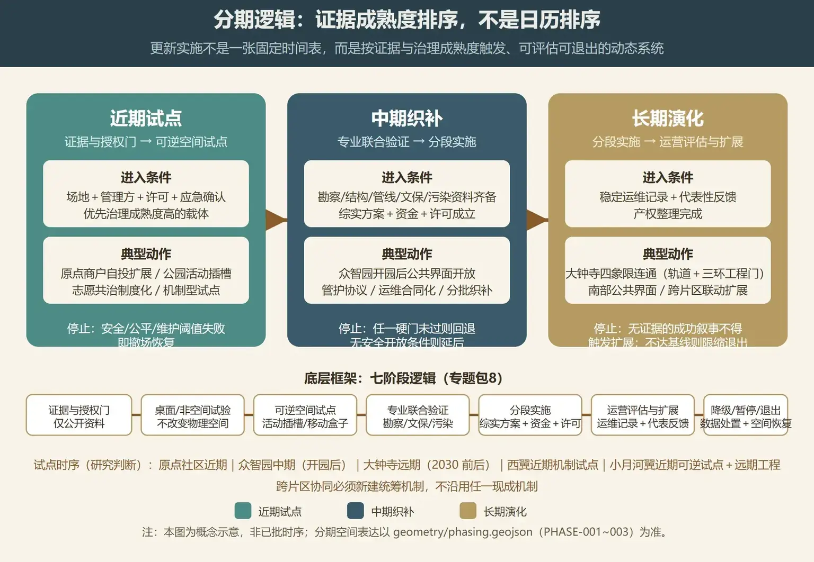
图10-1｜分期逻辑：证据成熟度排序，不是日历排序。图示将七阶段证据与治理门折叠为近期试点、中期织补和长期演化；属于概念性实施机制，不代表已批时序，空间表达以
geometry/phasing.geojson的 PHASE-001—003 为准。来源 空间数据
试点时序判断（研究判断，非既定承诺）：按治理成熟度而非空间新颖度排序——原点社区近期（活动最活跃、商户自投已验证）；众智园中期（空间最新、产权最清晰、产业生态未成，开园后）；大钟寺远期（产权范式成熟但主体单一、建设期至 2030 年）；科技服务翼近期机制型试点；小月河翼近期可逆试点＋远期工程。跨片区协同必须新建统筹机制，不沿用任一现成机制。来源
逐项目分期以“当前状态＋进入条件＋可逆性”为判断基础，不等同于已批建设时序。跨阶段项目只在前一阶段通过安全、产权、维护和公众反馈门后进入下一阶段；评估条件用于比较实施前后变化，未达到条件时按项目属性限缩、暂停、撤除可逆设施或恢复原状：
表10-3｜逐项目分期与评估退出门
| 项目 | 建议阶段 | 阶段进入条件与衔接要求 | 评估与退出门 |
|---|---|---|---|
| P-01 京张遗址公园活力带贯通与环境提升 | 近期衔接（PHASE-001） | 衔接已开放的一期和二期，确认运营模式、经营权和公共开放责任，形成连续运营安排。 | 评估慢行连续性、公共开放时段和维护响应；经营权或开放责任不清时，限缩新增经营与活动安排。 |
| P-02 卫星制造厂保留＋修复改造 | 中期织补（PHASE-002） | 文保精确边界、铁路授权期限、结构安全和经营许可范围确认后进入修复与开放设计。 | 以文保合规、结构安全和公共界面开放条件为门；任一条件未通过即暂停改造和开放。 |
| P-03 中坤广场商改办深度改造 | 中期织补（PHASE-002） | 完成产权、结构、消防和改造后业态核验，以存量改造方式分段实施。 | 评估结构消防合规、低效空间利用改善和公共界面质量；安全或业态适配不达标时停止后续分段。 |
| P-04 蓝景丽家收储—出让—自持重建 | 长期演化（PHASE-003） | 待出让条件、公共开放义务、建设进度和市级指标适用条件明确后，与大钟寺整体连通同步推进。 | 以公共开放义务、实施进度和产权协议可执行性为门；条件未落实时不启动后续连通工程。 |
| P-05 腾讯学院路新总部公共界面 | 中期织补（PHASE-002） | 结合在建工程进度确认公共界面、轨道微中心衔接和分期开放条件。 | 评估公共界面可达性、开放连续性和轨道衔接安全；不具备开放条件时延后相关界面启用。 |
| P-06 众智园共享中试平台 | 中期织补（PHASE-002） | 开园、实际规模和运营主体确认后，先开放展厅、商业和绿地界面，再评估中试平台扩展。 | 评估共享服务使用、公共界面开放、设施维护和运营稳定性；运营主体或维护资源不足时不扩展。 |
| P-07 原点社区低效楼宇低扰动更新与人才驿站 | 近期试点（PHASE-001） | 产权和商户协商、安全预案、撤场恢复条件齐备后，以低扰动、可逆方式先行。 | 评估使用率、居民与商户反馈、投诉和维护负担；安全、公平或维护阈值失败时撤场恢复。 |
| P-08 大钟寺文化先导界面与四象限缝合 | 长期演化（PHASE-003） | 轨道、三环、文保建控和连通空间产权条件通过专业审查后实施。 | 以文保影响、步行可达性和交通安全为门；专业审查未通过时不建设固定连通设施。 |
| P-09 小月河滨水跨界设施管护协议试点 | 近期机制试点＋长期工程（PHASE-001→003） | 近期先建立接管、经费和维护协议；固定设施和工程改造待防洪及专业审批后进入长期阶段。 | 评估接管响应、维护经费、防洪安全和生态影响；责任或经费中断时暂停新增设施，工程风险触发时恢复安全状态。 |
| P-10 AI 原点创新客厅与公共算力服务窗口 | 近期试点（PHASE-001） | 空间主体、数据授权、人工服务和运营机制确认后，以可撤回服务窗口启动。 | 评估服务可达性、人工接管、隐私投诉和运行稳定性；数据越界、服务失效或无法人工接管时暂停。 |
| P-11 小月河具身智能与生态感知测试界面 | 近期可逆试点（PHASE-001） | 防洪优先、测试边界、安全责任、公众告知和退出预案齐备后开展限定测试；未通过评估不得扩展。 | 以零重大安全事件、测试边界遵守、人工急停和生态影响为门；越界、事故或防洪冲突立即停止并复原现场。 |
| P-12 三处 AI 荣誉节点与公共空间组件库试点 | 近期试点→中期扩展（PHASE-001→002） | 先采用轻量、可逆组件；完成权属协商、年度重审和维护评估后再扩大应用。 | 评估信息可读性、无障碍、维护状态和荣誉程序公平性；未通过年审的内容修订或撤下，失养组件移除。 |
| P-13 科技服务翼资本服务与创业孵化接口 | 近期机制试点（PHASE-001） | 先建立服务路由和协作机制，不新增总体范围内建设用地；空间治理主体明确后再固化载体。 | 评估问题响应、服务转介、持续协作和公开反馈；长期无实质服务或治理主体缺位时限缩或停止机制。 |
| P-14 大钟寺站四象限公共节点与站城复合 | 长期演化（PHASE-003） | 轨道安全保护、站城连通、产权协议和工程审批全部确认后，与大钟寺四象限整体实施。 | 以轨道安全、换乘步行可达、公共开放和产权协议为门；审批或安全条件未满足时不得启动建设。 |
10.2.2 分期空间表达
分期空间表达由 geometry/phasing.geojson 承载：PHASE-001 对应近期试点，PHASE-002 对应中期织补，PHASE-003 对应长期演化。每个阶段要素记录进入条件、关联项目、停止或退出条件和 provisional 状态；跨阶段项目保留前后阶段关系，不把阶段边界或时间节点表述为已批时序。空间数据
---
10.3 实施政策与机制
10.3.1 制度通道：控规批复＋204号文"合二为一"＋更新条例实施主体程序
- 法定底盘：京张沿线街区控规 2026-08-11 获市政府批复（9街区、约16.7km²、"一带一轴两心多点"）。本方案接受控规刚性框架约束；具体符合性仍须结合分地块图则、文保建控、交通市政和专业核验确认。来源 标准
- 核心通道：市规自委 204 号文确立"街区控规（市政府批）→规划综合实施方案（区级审查）→规划许可"路径；符合控规的城市更新实施方案经批准后可作为综实方案特定类型"合二为一并入一张图"，形成方案深化和实施转化的制度通道。来源
- 实施主体程序：按《北京市城市更新条例》确定实施主体（单一权利人自行确定／多权利人协商表决／权属复杂时区政府招标确定；区级可设更新实施单元并确定统筹主体），实施方案报区更新主管部门审查。来源
- 边界：方案属概念类城市设计，转化为实施须经管控类/实施类程序并纳入法定规划；涉及刚性指标、文保建控、铁路权属的提案，以"需经××程序确认"表达，不写成可直接实施。来源
10.3.2 产权四元结构的实施通道
总体设计范围产权呈"铁路授权带＋集体产业用地＋出让自持＋高校划拨"四元结构，没有任何单一主体能独立完成全线实施；产权类型直接决定实施通道：来源
表10-4｜四类产权实施通道与设计约束
| 产权类型 | 现状事实 | 实施通道 | 设计约束 |
|---|---|---|---|
| 铁路授权带（约 13 ha） | 2021 年协议地面空间免费授权、权属不变（"授权不转移"） | 授权协商（涉固定建筑、地下开发须"权属协商前置门"） | 可逆、轻量、非永久设施兼容性好；授权期限与经营性设施许可范围无公开文本 |
| 集体产业用地（东升体系约 273 万㎡） | "自我建设、自我经营、只租不售"；50 年供地批复路径 | 集体自持（新东源股份社等＋招商运营） | 集体经济天然承担长期运营责任，是"时间维度锚"最完整的实施主体样本 |
| 国有出让用地（大钟寺范式） | 蓝景丽家"收储—出让—自持20年"28 亿、海淀首例社会资本供地 | 收储出让（出让条件可写入公共开放义务） | 分散小业主产权是更新最大障碍（中坤教训）；公共界面谈判空间在出让条件 |
| 高校划拨用地 | 沿线高校权属归高校（推断）；控规"缝合城市、无界互融" | 校地协商（协商型而非实施型） | 校区界面开放属协商机制，不强行定义实施路径 |
10.3.3 公共条款与前置门
- 公共条款绑定：借鉴蓝景丽家出让条件"统筹社会福利、交通场站配套"条款，更新单元绑定公共空间、住房、通道等公共开放义务，作为出让/许可条件写入。来源
- 五类法定前置门（有为底线，任何项目不可绕过）：规划刚性管控（控规）、文保许可（清华园车站/觉生寺/清河汉城建控地带）、土壤污染"不调查禁建"、轨道交通安全保护区（13 号线高架外侧 30 米）、公共数据授权（区级部门不得擅自开展）；每个项目在清单"待核验条件"栏对应登记。来源
---
10.4 年度活动体系
10.4.1 活动品牌与节律
以第06章定稿的活动品牌"京张未来开轨季｜Jing-Zhang Future Tracks"为总纲，以京张遗址公园为贯穿全年的开放舞台，采用"常态开放—月度共创—季度联动—年度复盘"四层节律，避免只在大型活动期间形成热度：来源
传播系统继承第06章总VI：活动字标沿用开放道岔、数据脉冲和公园生长环，色彩保持雾蓝、雾青、沙金与云石白；文化、共创、测试、社区四条开放线进入票证、导视、地图、预约页和双语场景卡。载体须中英等义，提供静态、高对比、减弱动画、纸质路线和人工讲解；赞助不得改变路线排序、荣誉展示或公众议题可见度。来源 标准
表10-5｜长期运营层级与活动机制
| 运营层级 | 活动或机制 | 主要空间 | 频次/触发 | 责任主体类别 |
|---|---|---|---|---|
| 常态开放 | AI 道口开放日、场景预约、导览、线下咨询、小型讲堂 | 各场景已确认公共界面 | 日常开放时段 | 空间运营＋社区/园区服务 |
| 月度共创 | 开源问题诊所、开发者维护会、社区议题工坊、故障复盘 | AI 原点、西翼、荣誉节点 | 每月一次或重大事件触发 | 开发者社区＋专业人员＋居民代表＋运营方 |
| 季度联动 | 春季全球开源会客厅、夏季城市场景测试季、秋季京张 AI 文化周 | 三片区+京张主轴 | 与重要创新活动周期协同；测试季须安全门通过 | 活动运营＋测试平台＋公共文化运营主体 |
| 年度复盘 | AI 城市治理年审：发布运行、安全、公平、维护、异议与退出记录，重审荣誉展示 | 线上公共知识库＋AI 原点议事空间 | 每个运营年度结束或重大事故后 | 区级统筹类平台＋专业复核＋第三方评估＋公众代表 |
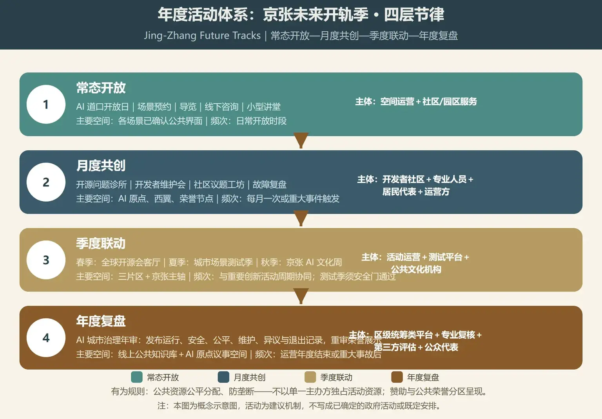
图10-3｜京张未来开轨季年度活动四层节律。常态开放、月度共创、季度联动和年度复盘构成长效运营建议；活动名称、频次和主体均为方案机制，不表示政府活动或既定安排。来源 来源
10.4.2 空间保障与有为规则
- 空间保障：活动与公共空间、公园桥下、站前空间按开放时段、承载规模、安全条件和撤场要求进行匹配，并采用第09章 CP-01/CP-02 公共空间组件提供可逆活动载体。来源
- 有为规则：公共资源公平分配、防垄断——不以单一主办方独占公共活动资源；广告、冠名和赞助信息与公共荣誉分区呈现，企业不得通过付费获得活动排序或荣誉排序。来源
- 机制三要素：主办方、频次、退出——无公开信息的一律标注待核验，不写成已确定安排。来源
10.4.3 公共体验与城市地标运营
- 公共体验路径：AI 原点创新体验路径（高校接口→AI 教育与科研协作站→AI 创新客厅→公共算力服务窗口→开放活动空间）与小月河测试体验路径（东翼展示入口→具身智能公众观察界面→限定测试环→生态感知节点→滨水步道）纳入年度活动体系的常态开放安排，形成连续、可进入的公共体验载体。来源
- 城市地标（荣誉节点）运营：三处 AI 荣誉节点（LM-01 众智园"AI 共试灯塔"、LM-02 AI 原点"开源共创星图"、LM-03 大钟寺"古今共鸣门户"，对应项目 P-12）按"公开提名—证据核验—权利确认—多方复核—限期展示—年度重审—修订/撤下"机制运营；广告、冠名和赞助信息与公共荣誉分区呈现，任何企业不得通过付费获得荣誉排序（与 10.4.2 防垄断规则一致）。来源
- 与年度年审衔接：荣誉展示在"年度 AI 城市治理年审"（10.6.2）中重审，未通过年审的荣誉项可修订、降级或撤下；数据来源、评价规则、更新周期与异议处理可解释，断网或争议时保留静态展示与人工说明。来源 标准
---
10.5 开发者社区与场景开放运营
10.5.1 开发者社区运营机制
承接第06章 6.6.2 与第05章 Y-01 黑客屋/人才驿站：以公开问题池、可核验数据、小额工具任务、场景沙盒和维护轮值为主，贡献记录可进入 LM-01/02 荣誉展示；不以一次黑客松代替长期维护，不公开个人敏感信息和未授权代码。来源
10.5.2 场景开放运营机制
场景开放按"问题入池—主体登记—数据与安全审核—限定测试—公众告知—第三方评估—扩展或退出"机制运行，使 AI 原点的问题、众智园的中试和小月河的公共验证形成闭环；数据边界、人工复核、非数字兜底与退出条件沿用第06章 12 张场景卡的统一规则。来源
10.5.3 无为机制：活动与空间资源匹配
全球开发者活动提案闭环（概念机制，不写成已部署）：需求提案→安全审查→可逆试点→公众反馈→评估扩展/退出；活动与空间资源自动匹配仅作概念表达，Agent 只感知、建议、匹配、记录，不批准、不替代、不独断（与第06章 6.7.1 一致）。来源
---
10.6 长期运营、评估与退出机制
10.6.1 运营主体类别与运维资金组合
- 运营主体类别（按场景绑定，不指派具体单位）：园区运营方、平台公司、商户自投、区属国资、志愿组织。来源
- 运维资金组合（每个公共空间提案必须回答"谁付运维费"）：区级养护预算＋经营权出让（驿站/停车场/活动插槽）＋基金化场景运营＋志愿与共治降本；公园免费开放无门票收入、绿地定额不含特殊设施为已知缺口，运维资金来源列为验收条件。来源
10.6.2 年度价值评估与退出机制
- 年度价值评估＋目标校准：以使用反馈调整次年活动体系（无为机制）；"年度 AI 城市治理年审"发布运行、安全、公平、维护、异议与退出记录。来源
- 退出机制四要素：每个场景/项目绑定"基线指标（先行采集）→评估主体（管理方＋独立第三方）→扩展条件（运维记录＋代表性反馈）→退出预案（含数据处置与空间恢复）"，参照自动驾驶试点办法"责令暂停直至终止＋数据上报"范式；核心公共服务不中断，失效降级、人工服务与非数字兜底为默认配置。来源
---
10.7 国际传播与招引转化机制
国际传播统一使用“道口新编——京张·并轨／The Re-coded Crossing: Merging Tracks of Jing-Zhang”命名体系和“百年京张，未来开轨／A Historic Railway, Opening New Tracks to the Future”双语主张；以“春季全球开源会客厅”等活动连接中关村论坛及国际创新交流平台。来源
转化路径（概念建议）："参加活动—提出问题—组建协作—进入沙盒—专业复核—形成项目候选或开源成果—持续社区关系"；人才→企业→开发者的转化机制为概念建议，招商、政策、资金、投资落地不写成已确定结果。来源
---
10.8 有为系统 + 无为系统
10.8.1 有为系统（底线与约束）
实施层底线包括：五类法定前置门（10.3.3）、年度活动公平与防垄断（10.4.2）、成本与审批纪律（不虚构投资测算、不写既定时序、不写招商/政策/资金/审批承诺，见 10.0）；遗产更新近中远期安排仅作待条件触发的建议路径。来源 来源 来源
10.8.2 无为系统（动态运营）
"无为"体现为三级弹性分层（活动层市场调节／设施层管理方决策／空间层法定程序——没有任何现状机制允许 Agent 自主调整物理空间，动态运营只发生在信息与服务层）、年度价值评估＋目标校准与试点—扩展—迭代（10.6.2）、开发者活动提案闭环与场景开放准入—评估—退出（10.5）；Agent 只作感知、建议、匹配、记录，不批准、不替代、不独断（与第06章 6.7.1 一致）。来源 来源
---
10.9 项目—分期—运营的空间协同
14 个更新项目以稳定编号连接项目清单、分期空间和运营机制：近期试点优先承载可逆空间、公共服务窗口、社区共创和管护协议；中期织补承载存量改造、园区公共界面和跨主体设施协同；长期演化承载需要轨道、三环、文保、产权和建设程序共同确认的复杂工程。年度活动、开发者社区和场景开放不另造脱离项目的空间，而是分别嵌入 P-07、P-10、P-11、P-12、P-13 等可运营载体，并通过年度评估决定扩展、限缩或退出。
临时边界和概念点位只用于设计讨论；正式边界、产权和实施条件到位后统一替换并复算，不由概念空间表达推导面积、审批或建设结论。来源 空间数据 深度
---
10.10 待核验事项
1. PHASE-001—003 分别对应近期试点、中期织补和长期演化，记录关联项目、进入条件和退出条件；阶段几何只表达主要空间焦点，不是项目红线或已批时序。 2. 项目状态核验：各项目在建/已公布/本次概念的正式清单与产权状态（需控规、更新计划、不动产登记与授权协议资料）。 3. 成本与运营数据：无公开依据项目的成本待专业测算；公园年度养护预算、300 亿城市更新基金落地状态、活动机制档案、运维合同、跨界设施接管协议待核验。 4. 实施统筹机制：区级统筹平台/专班/统筹主体遴选无公开资料；项目数量、分期面积等指标待在第11章统一复算。
第11章 指标体系、面积复算与合规矩阵
本方案建立“公告任务指标—空间模型指标—产业运营指标—合规审查指标”四层体系。公告约值用于界定任务尺度；空间模型指标由提交的 GeoJSON 在 EPSG:4548 下复算；产业运营指标在统一统计边界、基准年和去重规则后持续更新；合规审查指标用于核对公告任务、Agent 任务、专业标准和设计深度。总体范围与三处重点区域仍采用临时约束范围，复算结果是低置信度方案模型值，不构成官方精确红线、法定规划指标、权属或审批依据。来源 标准 深度
11.1 指标口径与当前基线
指标采用“已知值、方案模型值、待正式数据补齐”三种可读状态。已知值必须能够从提交几何或可信来源复算；方案模型值用于比较功能结构和承载能力，并明确不具有法定效力；缺少统一统计口径、官方控制条件或运营台账的指标保留计算公式和启动条件，不以区级数据按面积机械折算。
表11-1｜核心指标组与当前结果
| 指标组 | 当前结果 | 状态与用途 |
|---|---|---|
| 统筹研究范围 | 约43.6km² | 公告任务尺度，不作为总体设计面积分母 |
| 总体设计范围 | 公告约11.4km²；当前几何11.4925km² | 当前几何为 provisional；正式边界到位后统一重算 |
| 三处重点区域 | 公告合计约368.4ha；当前几何合计368.7872ha | 数量和名称为公告事实，几何位置与面积为临时模型 |
| 绿地 | 1,552,070.246㎡；13.505068% | 由同一总体边界与 green_space.geojson 复算的低置信度设计模型值 |
| 公共空间 | 502,058.763㎡；4.368577% | 由同一总体边界与 public_space.geojson 复算的低置信度设计模型值 |
| 用地覆盖 | 560个要素；11,492,502.43㎡；覆盖率100% | 方案功能分区完整覆盖当前边界，不替代法定用地分类或分地块图则 |
| 建筑基底 | 950,772.474㎡；部分覆盖下限8.272980% | 仅含三处重点片区内3663个低置信度GABLE对象的去重并集，不代表全范围现状建筑密度 |
| 交通模型 | 9条方案道路中心线；总长23,800.974m | 概念交通要素，不代表批准线位或工程规模 |
| 更新与分期 | 14个项目；3个阶段 | 方案项目库与触发式分期，不代表已批项目或确定建设时序 |
| AI空间接口 | 29项道口锚点 | G1 8项、G2 7项、G3 14项的现行统一口径 |
三项正式视觉核心指标均已由提交几何复算为有限值：site_area_sqm=11,492,502.43㎡、green_ratio=13.505068%、public_space_ratio=4.368577%。三者共享总体范围分母，并分别指向边界、绿地和公共空间几何；任何一个源图层变化，三项指标及其派生图件必须同步重算。指标 指标 指标
11.2 产业发展与创新生态指标
11.2.1 AI创新指数
AI创新指数由原始创新、成果转化、产业集聚、人才活力、基础设施与场景开放、可信治理六个维度组成，采用 I_AI=Σ(w_k×Z_k) 计算，权重之和为1。正式发布指数前，须统一统计范围、基准年、正负向、标准化方法和数据完整度，并经过同类区域对标与专家复核。当前不填报缺乏共同底账的综合得分；规划目标是形成六维可连续监测的创新生态，避免以企业数量或单项投资替代全链条表现。指标
11.2.2 人才、企业与产值目标
表11-2｜人才、企业与产值指标核验
| 指标 | 计算与核验方式 | 规划目标及空间响应 |
|---|---|---|
| AI人才空间密度 | 去重后的场地AI人才数／总体设计范围面积；科学家、开发者、相关专业学生和其他人才分列 | 建立T0基线后按年度复算，密度增长必须与住房、通勤、公共服务和创新交往空间同步，不以区级人才总量下推场地数值 |
| AI就业占比 | 场地AI就业人数／场地总就业人数 | 检查产业空间增长是否形成真实就业承载，并与人才生活服务配置联动 |
| AI企业聚集 | 核心企业、成长型企业、专业服务机构、开发者与科研组织分别登记，使用稳定ID去重 | 形成“原点策源—众智园中试—大钟寺应用与总部交往”的分工网络；企业绝对数量待统一名录后确定，不以注册地址替代实际空间使用 |
| 场地AI产业产值 | 固定行业分类、统计周期和空间归属后汇总核验产值 | 建立场地级产值与单位产业空间产出双指标，取得T0基线后持续评价载体效率，不将海淀区总量按面积比例折算 |
| 创新链转化率 | 下一阶段核验项目数／上一阶段合格项目数 | 分别监测概念验证、工程化、中试、场景验证和成果转化，识别链条断点 |
| 三区两翼协同率 | 两个及以上片区参与的核验协同项目数／全部协同项目数 | 评价区域协同是否形成真实项目与共享服务，不以空间命名代替协作成果 |
| 八要素就绪率 | 土地、空间、产业、资金、人才、算力、数据、场景中满足进入条件的要素数／8 | 未满足权限、容量、责任或退出条件的项目不得进入下一实施阶段 |
海淀区AI核心产业规模超过3500亿元是区级公开底账，只用于说明产业基础。场地级人才密度、AI就业占比、AI产业产值、创新链转化率、三区两翼协同率和八要素就绪率均保留公式、责任数据和复算条件；在场地台账建立前不虚构现值。来源 指标 指标
11.2.3 企业、人才与产值三阶段目标
场地级目标采用“核定T0基线＋相对增长指数”表达。T0须在同一总体范围、同一统计时点和同一去重规则下，分别核定实际使用场地的AI企业数 E0、AI人才空间密度 D0 和可归属场地的AI核心产业产值 V0，并统一设为指数100。AI原点社区现有325余家AI企业、1000余名AI科学家和1.3万名开发者仅作为局部现状锚点，不替代11.4平方公里总体设计范围的T0普查。来源
表11-3｜场地级企业、人才与产值阶段目标
| 方案目标指标（T0＝100） | 近期试点 | 中期织补 | 长期演化 | 核验边界 |
|---|---|---|---|---|
AI企业有效聚集指数 E/E0×100 | ≥110 | ≥125 | ≥140 | 只统计在场地内有可核验办公、研发、中试、服务或运营活动的主体；注册地址不能单独计数 |
AI人才空间密度指数 D/D0×100 | ≥108 | ≥120 | ≥130 | 科学家、开发者、相关专业学生和其他人才分列去重；同步核验住房、通勤、公共服务和创新交往承载 |
场地AI产业产值指数 V/V0×100 | ≥115 | ≥140 | ≥170 | 固定行业分类、统计周期和空间归属；不得混入企业估值、市场规模或无法归属场地的区级产值 |
三组数值是方案比较阈值，不是官方预测或招商承诺。取得T0后按表中倍数换算绝对目标；若交通、市政、住房、公共服务、绿色空间或可信治理未通过承载复核，不得仅凭经济指标进入下一阶段。指标 指标 指标
11.3 面积复算与空间承载
面积统一使用 EPSG:4548 计算，面要素在复算前完成坐标系、几何有效性、重叠、缝隙与边界包含关系校验，数量指标按稳定ID去重。公告约值与临时几何复算值并列记录，不互相覆盖。
表11-4｜空间对象面积复算
| 空间对象 | 公告约值 | 当前几何复算 | 相对差异 | 使用边界 |
|---|---|---|---|---|
| 总体设计范围 | 11,400,000㎡ | 11,492,502.43㎡ | +0.81% | 公告为任务尺度；几何值为临时模型分母 |
| 三处重点区域合计 | 3,684,000㎡ | 3,687,872.19㎡ | +0.11% | 接近公告约值不证明边界精确 |
| 众智园 | 1,921,000㎡ | 1,918,001.919㎡ | -0.16% | 保留 provisional 标识 |
| 北京AI原点社区 | 1,043,000㎡ | 1,046,952.810㎡ | +0.38% | 保留 provisional 标识 |
| 大钟寺 | 720,000㎡ | 722,917.464㎡ | +0.41% | 保留 provisional 标识 |
当前用地模型以560个要素覆盖总体边界，面积缝隙、重叠和越界均已控制在拓扑校验容差内；绿地和公共空间均由同一边界裁切，避免分母漂移。建筑基底仍是最低可行模型，法定容积率、建筑高度、建筑密度、退线和建筑控制线因缺少官方控规条件继续保留“待正式数据补齐”，不得以总体容量情景冒充法定控制。空间数据 空间数据 空间数据
11.4 产业空间、建筑容量与功能比例
总体建筑容量采用1600万—1800万平方米的方案模型区间。按当前临时总体范围复算，平均强度为1.3922—1.5662；按公告约11.4km²表达则约为1.40—1.58。该区间用于检验产业目标、交通市政承载与公共空间供给，不是新增建设量、审定建筑规模或分地块容积率。指标 指标
功能结构沿用第04章55%／30%／15%基准及50%—60%／25%—35%／10%—15%弹性范围，对应创新生产880万—990万平方米、城市服务480万—540万平方米、公共支撑240万—270万平方米；任何情景三类合计必须为100%。指标 指标 指标
企业聚集目标与空间规模采用同一承载逻辑：AI原点社区侧重原始创新、开发者协作和近校孵化，众智园侧重共享中试与工程化，大钟寺侧重总部交往、应用转化和智能原生新业态；京张轴线及29项道口提供测试、展示、交流和公众体验接口。企业名录、现状楼层、产权、结构安全和分地块控规补齐后，应把上述相对目标换算为绝对目标，并从“总体模型”转入“项目—地块—建筑”三级复算。指标
11.5 任务、标准与设计深度覆盖
任务矩阵覆盖23项必选要求和 agent.1—agent.6；专业标准矩阵登记7项标准，其中6项强制标准已响应，非强制建筑深度因资料不足保留缺口。完整索引保存在机器矩阵，本章呈现评审摘要。标准 标准
表11-5｜任务、标准与设计深度审查摘要
| 审查层 | 当前结构化状态 | 结论 |
|---|---|---|
| 公告与Agent必选任务 | 23／23已映射 | 覆盖关系已建立，仍须以对应成果真实性判断完成度 |
| 强制专业标准 | 6／6已响应 | 现有数据允许范围内已形成专业回应；官方条件缺口不转写为确定结论 |
| 正式设计深度 | 15／15为 complete | 三大重点片区已形成总览、三区综合详细设计、三区概念鸟瞰、项目单元控制与方案级承载估算；官方地块／建筑资料到位后仍须校准逐地块与逐栋结论 |
| 三项核心空间指标 | 3／3可复算 | 当前均为低置信度临时模型值，正式边界或图层更新后必须重算 |
第11章的合规结论是“现有正式资料允许深度内，指标、任务证据链与三大重点片区设计表达已经闭合”，不是“法定规划与工程设计条件已经齐备”。三片区的总览、综合详细设计、概念鸟瞰、项目单元控制和方案级承载估算共同构成当前正式设计深度；逐地块新增量、逐栋拆改留和关键节点／剖面属于官方地块、建筑及工程条件到位后的精度校准项，不转写为现阶段确定事实。深度
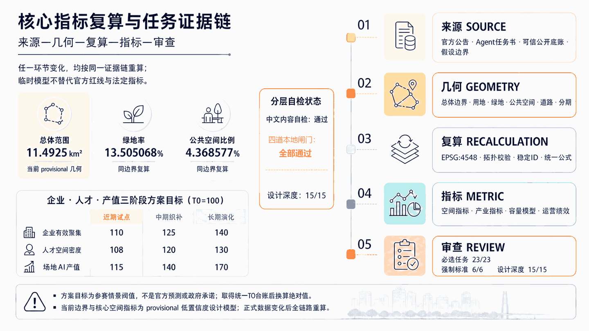
图11-1｜核心指标复算与任务证据链。以当前
metrics.json、GeoJSON、任务覆盖矩阵、专业标准矩阵和设计深度矩阵为同源输入，显示“来源—几何—公式—结果—审查”关系；图中面积与比例保留 provisional 和低置信度说明，并区分中文内容自检与完整投稿总检状态。
11.6 重算触发与结论
以下任一条件变化时，必须重新运行空间复算和跨文件一致性校核：官方总体边界或重点区域边界发布；用地、建筑、道路、绿地、公共空间、约束或分期几何变化；产业统计基准年、人才定义、企业归属或项目ID变化；总体容量、功能比例、场景数量、项目数量或分期逻辑调整；正文与结构化指标出现数值或状态差异。
当前已完成临时几何、三项核心空间指标、用地覆盖、交通与分期、产业目标、建筑容量、23项任务、6项强制标准和15项设计深度核对。场地产业与人才现值、法定控规及逐地块逐栋结论仍待正式资料校准；完整投稿总检在双语媒介齐备后执行。
第12章 风险、版权与合规说明
12.1 风险与资料缺口
方案以“证据未闭合即不形成确定结论”为风险控制原则。 前十一章中的范围、用地、建筑、交通、市政、蓝绿、项目、场景和运营判断，均按资料可信度、空间精度、专业深度和实施条件分级；下表所列责任主体是后续核验的专业主体类别，不代表已经获得任何单位授权、采购关系或实施承诺。深度 来源
表12-1｜风险、资料缺口与后续核验责任
| 风险类别 | 当前风险或资料缺口 | 对方案结论的影响 | 应对与后续核验 | 核验责任主体类别 |
|---|---|---|---|---|
| 资料与来源 | 官方精确总体边界、三处重点区闭合边界及部分现状资料尚未取得；公开、背景和临时资料的可用范围不同 | 不能据此确认官方红线、精确面积、现状权利或审批条件 | 保持来源分级和限制说明；仅在取得带发布者、日期、版本、许可和坐标系的正式资料后替换 | 竞赛组织方、测绘与规划专业团队 |
| 空间与法定控制 | 当前范围、用地、绿地、公共空间和重点区图层包含 provisional 或低置信度设计模型 | 可用于概念比较和当前模型复算，不构成法定用地、容积率、高度、建筑密度、退线或地块控制 | 正式边界和分地块控规到位后统一重建九类 GeoJSON，并同步指标、矩阵和图件 空间数据 空间数据 | 规划、测绘与城市设计专业团队 |
| 工程与公共安全 | 道路红线、轨道保护、桥隧、管线、市政容量、勘察、结构、消防、污染和文保条件未形成完整工程底账 | 道路、跨越、市政、拆改留和固定设施只能作为方向性建议 | 固定建设前完成交通、市政、结构、消防、防洪、污染和文保专项论证；任一安全门未通过即限缩、延后或取消 空间数据 来源 | 交通、市政、结构、消防、水务、生态和文保专业团队 |
| 权属与实施 | 宗地权属、铁路授权期限、运营主体、预算、采购、合同和跨界设施接管机制尚未完整确认 | 14个更新项目和三阶段安排不构成产权判断、投资承诺、既定时序或批准项目 | 以权属、资金、许可、维护和接管协议作为项目进入条件；条件缺失时保持可逆试点或不启动 空间数据 来源 | 权利主体、项目实施与运营专业团队 |
| 数据隐私与算法治理 | AI场景可能涉及交通状态、健康咨询、活动报名、设备运行和公众表达 | 不得采集无授权个人数据，不得以画像、轨迹或人脸识别替代公共服务和人工判断 | 采用目的限定、最小必要、授权使用、分级访问、到期处置和异议纠正；高风险事项转人工复核 来源 | 数据处理主体、场景运营方、数据安全与法律专业人员 |
| 技术成熟度与试点安全 | 具身智能、交通协同、公共算力和场景调度仍属于受控测试或概念机制 | 不得写成已全面部署、自动审批或已批准运营 | 先在隔离或限定环境测试，保留物理急停、人工接管、既有方案回退、事故记录和空间复原；越界、失联或安全事件立即停止 | 测试运营方、设备责任方、第三方安全评估与主管专业人员 |
| 运营、公平与公众接受 | 长期运维资金、代表性参与、无障碍连续性、公共资源分配和投诉处理仍需验证 | 场景可能形成数字排斥、维护失效、资源垄断或公共性弱化 | 保留人工、电话、纸质、实体导视和无设备参与；通过年度复盘、代表性反馈和公平审查决定扩展、限缩或退出 来源 | 空间运营方、社区与公众代表、无障碍及第三方评估人员 |
| 版权与公开合规 | 生成图、第三方数据、字体、标识、肖像和历史材料的权利状态并不相同 | 未清权资产不得公开提交；概念图不得冒充现场、实测、法定或批准成果 | 按资产登记来源、生成方式、许可、用途和限制；权利证据不足时替换、撤下或停止分发 | 资产制作者、合稿负责人及知识产权专业人员 |
12.2 临时数据替换与复算
当前提交几何形成的是可复算的设计模型，而不是法定现状或审批底图。 总体范围和重点区为临时约束；560个用地要素、最低可行绿地与公共空间、9条概念交通要素及分期空间均继承这一精度边界。它们可以支撑当前方案内部的面积、比例、网络和项目对应关系，但不能证明权属、道路红线、工程线位或法定指标。来源 来源 深度
正式边界、控规、现状建筑、权属及工程资料到位后，应以同一版本重建各图层、复算指标并同步矩阵、正文和双语媒介。法定容积率、高度、密度、退线和设施容量在此之前保持“待正式数据补齐”。来源
12.3 AI数据与人工治理
AI只承担感知、检索、分析、模拟、建议和记录，不承担审批、执法、诊断、公共共识形成或物理空间的自主决策。 第06章十二个场景与三个测试场景统一采用“授权输入—限定处理—人工判断—受控行动—记录反馈—扩展或退出”的闭环；数据仅限公开、主动提供或经明确授权的必要信息，原始表达与AI摘要分开，个人可以查询、更正、撤回或退出。标准 来源
涉及健康、交通、公共安全、历史解释、荣誉展示和具身设备的高风险事项必须由相应专业人员复核。系统失效时，交通回退既有方案，设备进入停机、低速或回坞状态，公共服务转入现场、电话、纸质材料和人工窗口，导览保留实体标识与人工讲解；测试结束后停止新增采集，依法处置授权数据并恢复普通公共空间。人工接管、非数字兜底、失效降级和退出复原是场景成立的前置条件，不是事后补救。来源 来源 来源
12.4 版权、生成资产与成果边界
所有外部或生成资产均按“来源—生成或处理方式—许可—用途—限制”登记，完整记录以 sources.json 和 report/copyright_statement.md 为准。 第01章证据链图与第03章Logo已由参与者确认用于本 GitHub 智能体开源征集、公开仓库展示和投稿材料分发；必须保持AI辅助生成标识，不扩展为排他权、不侵权保证、注册商标或征集外商业授权。来源 来源
第05章三幅鸟瞰图为基于锁定空间底板的合成概念表达，参与者已确认其用于本 GitHub 智能体开源征集公开展示；精确模型版本和提示记录未保留，因此不主张独创性、绝对不侵权或模型级溯源，也不能用于证明建筑数量、精确位置、高度、道路、景观现状、建成状态或批准情况。来源 来源 来源
第06章14张场景图由Codex Desktop直接调用内置 image_gen 于2026-08-25生成（部分逐图复核延续至8月26日），逐文件哈希、生成方式、任务记录、适用OpenAI条款和2026-08-31参与者公开仓库展示／再分发授权已登记；界面未暴露底层图像模型版本，因此不主张模型级溯源、唯一性或绝对不侵权。来源 来源 第08章原北京地铁简化标识虽可确认Wikimedia版权标记为PD-shape，但未取得运营方商标公开展示授权，现已从中英文图纸移除并替换为团队原创中性站点符号。来源 来源
本成果为竞赛概念建议和开放共创方案，不替代法定规划、测绘、权属、审批、专业设计或政府实施安排。 中英文媒介须等义且离线自包含；正式提交前须经相关专业复核，并通过结构、空间、视觉、版权与自检门。
第13章 参考资料
13.1 任务、研究与专业依据
以下资料直接支撑方案的任务理解、事实判断、空间约束、专业底线与设计转译。官方公开资料用于确认任务和事实，项目研究汇编用于比较与综合，参与者设计基线只记录方案判断；三者不相互替代。
- 01｜北京市规划和自然资源委员会海淀分局：《百年京张 AI 创新带城市设计国际方案征集资格预审公告》，2026年5月9日。 作为三级范围、三处重点区域、设计任务和成果语境的首要依据；公告文字四至与约面积不等于官方闭合边界。来源
- 02｜面向全球智能体开展百年京张 AI 创新带城市设计开源征集任务书摘录，2026年5月18日。 作为三大定位、五大功能、六项智能体任务、场景与运营要求以及“开放共创建议”边界的补充依据。来源
- 03｜open-city-ai/haidian 仓库维护者：《百年京张 AI 创新带场地包》v0.1.0。 提供设计简报、允许设计空间、分类枚举、指标范围、数据结构和临时几何；其中 provisional 数据仅用于概念设计、可视化和当前模型复算。来源
- 04｜open-city-ai/haidian 仓库维护者：《百年京张 AI 创新带公开资料登记表》，更新至2026年8月23日。 用于区分 formal-ready、background-only、provisional-only 与 needs-review 资料，控制每项来源的用途和禁止用途。来源
- 05｜项目专题研究组：《阶段1九个专题研究包》，2026年。 包括①范围、规则与数据治理；②区域创新生态与资源网络；③遗产、文化与身份；④用地、建筑与城市形态；⑤交通、蓝绿与环境韧性；⑥人群、公共服务与时间使用；⑦空间体验、风貌与公共生活；⑧实施、治理与长期运营条件；⑨空间数据、指标与证据接口。九专题共同形成前11章的问题、事实、专业和数据底板，正式主张仍回溯各包登记的原始来源。来源
- 06｜项目案例研究组：《S1-14核心案例研究报告——8个全球AI创新生态核心案例》，2026年。 以旧金山、纽约、伦敦国王十字、西雅图南联合湖、波士顿肯德尔广场、上海西岸、上海张江和新加坡八案为比较基线，提炼可借鉴、需改造与不可照搬的机制，不据此推定海淀的权属、资本、运营或审批条件。来源来源
- 07｜项目综合研究组：《S1-15阶段1综合分析报告》，2026年。 将九专题事实与八案机制综合为三级尺度诊断、核心矛盾与机会、三处重点区任务、第01—13章接口及资料替换触发条件，是前期研究进入总体方案的统一交接文件。来源
- 08｜《AI道口系统——面向AGI时代的空间操作系统v2》，2026年。 作为用户确认的项目概念与运行协议定稿，支撑AI道口命名、感知—研判—响应—反馈闭环、空间接口、人工复核、降级和退出机制；其中历史数量、节点位置、技术、估值和治理主张仍须逐项核验。来源
- 09｜北京市人民政府、北京市海淀区人民政府、北京市科学技术委员会及中关村科技园区管理委员会相关公开资料汇编，2026年。 支撑海淀AI产业规模、企业与人才、科研资源、技术合同和京张AI创新带集聚度等区域基线；不同统计口径不直接相加。来源
- 10｜专题包5及相关专业公开资料：《交通、蓝绿、市政与无障碍证据汇编》，2023—2026年。 汇集轨道站点、慢行与骑行、道路阻隔、四道口交通试点、清河与小月河防洪、海绵城市、轨道保护以及《中华人民共和国无障碍环境建设法》；开放地图和公开标准不能替代道路红线、河道蓝线、管线、标高、专项审批或现场核验。来源来源来源
- 11｜北京市现行控规、城市更新及相关专业法规政策汇编。 主要包括京张沿线街区控规批复、规划综合实施方案衔接规则、《北京市城市更新条例》以及文保、污染、轨道保护和公共数据授权要求，用于建立项目进入、审查、暂停和退出条件。来源
- 12｜项目组：《第06章AI创新生态、人才画像与AI+场景设计基线》，2026年。 形成五类用户画像、十二张场景卡、三个产业测试、三处荣誉节点及人工复核、急停回退、非数字兜底和退出复原规则；全部场景仍属于概念建议。来源
13.2 结构化来源与权利记录
各条资料的发布者、链接或本地出处、访问日期、许可、用途和限制以结构化来源清单为准；指标公式、空间要素、专业标准和任务覆盖分别由对应机器文件保存。图片、字体、标识、生成资产及媒体的权利记录以版权声明为准，未完成许可核验的材料不得进入公开提交。